12 Monkeys
Terry GilliamB0026FCNK2Cole (Bruce Willis) is sent back in time to save the human race from a deadly virus that has forced mankind into dank underground communities in the future. Along his travels, he encounters a psychiatrist (Madeleine Stowe) and a mental patient, brilliantly portrayed by Brad Pitt, who may hold the key to the mysterious rogue group, the Army of the 12 Monkeys, thought to be responsible for unleashing the killer disease. Believing he can obtain a pure virus sample in order to find a cure in the future, he is met with one riddle after another that puts him in a race with time. This sci-fi masterpiece from the genius mind of Terry Gilliam is a modern-day classic.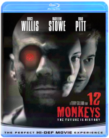
12 Years A Slave
Steve McQueenB00G4Q3NDAFrom acclaimed director Steve McQueen comes this "deeply evocative and brilliantly acted" film (Claudia Puig, USA Today) based on the true story of Solomon Northup. It is 1841, and Northup (Chiwetel Ejiofor in a gripping performance), an accomplished, free citizen of New York, is kidnapped and sold into slavery. Stripped of his identity and deprived of all dignity, Northup is ultimately purchased by ruthless plantation owner Edwin Epps (Michael Fassbender) and must find the strength within to survive. Filled with powerful performances by an astonishing cast that includes Benedict Cumberbatch, Brad Pitt and newcomer Lupita Nyong'o, 12 Years A Slave is both an unflinching account of slavery in American history and a celebration of the indomitable power of hope.28 Weeks Later
Juan Carlos FresnadilloB000VDDWEM28 WEEKS LATER is sequel to the successful 28 Days Later.The film pick up six months after the Rage virus has spread throughout the city of London. The United States Army has restored order and is repopulating the quarantined city, when a carrier of the Rage virus enters London and unknowingly re-ignites the spread of the deadly infection, wreaking havoc on the entire population. The virus is not yet dead, and this time it's more dangerous than ever!!

30 Minutes or Less
B005J4TLO8Nick (Jesse Eisenberg) is a small town pizza delivery guy whose mundane life collides with the big plans of two wanna-be criminal masterminds (Danny McBride and Nick Swardson). The volatile duo kidnaps Nick and forces him to rob a bank. With mere hours to pull off the impossible task, Nick enlists the help of his ex-best friend, Chet (Aziz Ansari). As the clock ticks, the two must deal with the police, hired assassins, flamethrowers, and their own tumultuous relationship.
300
Zack SnyderB000Q6GX5YThe epic graphic novel by Frank Miller (Sin City) assaults the screen with the blood, thunder and awe of its ferocious visual style faithfully recreated in an intense blend of live-action and CGI animation. Retelling the ancient Battle of Thermopylae, it depicts the titanic clash in which King Leonidas (Gerard Butler) and 300 Spartans fought to the death against Xerxes (Rodrigo Santoro) and his massive Persian army. Experience history at swordpoint. And moviemaking with a cutting edge.
Abraham Lincoln: Vampire Hunter
Timur BekmambetovB008NEMPTOAbraham Lincoln: Vampire Hunter explores the secret life of our greatest president, and the untold story that shaped our nation. Visionary filmmakers Tim Burton and Timur Bekmambetov (Director of Wanted) bring a fresh and visceral voice to the bloodthirsty lore of the vampire, imagining Lincoln as history's greatest hunter of the undead.
Across the Universe
Julie TaymorB000ZLFALSAcross the Universe, from director Julie Taymor, is a revolutionary rock musical that re-imagines America in the turbulent late-1960s, a time when battle lines were being drawn at home and abroad. When young dockworker Jude (Jim Sturgess) leaves Liverpool to find his estranged father in America, he is swept up by the waves of change that are re-shaping the nation. Jude falls in love with Lucy (Evan Rachel Wood), a rich but sheltered American girl who joins the growing anti-war movement in New York's Greenwich Village. As the body count in Vietnam rises, political tensions at home spiral out of control and the star-crossed lovers find themselves in a psychedelic world gone mad. With a cameo by Bono, Across the Universe is "the kind of movie you watch again, like listening to a favorite album." (Roger Ebert, Chicago Sun-Times)The Adjustment Bureau
B004WESFZWDavid Norris (Matt Damon) glimpses the future Fate has planned for him...and chooses to fight for his own destiny. Battling the powerful Adjustment Bureau across, under and through the streets of New York, he risks his destined greatness to be with the only woman he's ever loved (Emily Blunt).
The Adventures of Tintin
Steven SpielbergB00701897IFrom Academy Award®-winning filmmakers Steven Spielberg and Peter Jackson comes the epic adventures of Tintin. Racing to uncover the secrets of a sunken ship that may hold a vast fortune — but also an ancient curse — Tintin and his loyal dog Snowy embark on an action-packed journey around the world that critics are calling “fun for the whole family.”* *ABC-TV (Chicago)Alien Anthology
B001AQO3QABrace yourself for a whole new breed of Blu-ray: Four powerful films...eight thrilling versions...in dazzling, terrifying, high-def clarity with the purest digital sound on the planet. Two bonus dics and over 65 hours of archival and never-before-seen content, including the totally immersive MU-TH-UR mode feature, makes this definitive Alien collection!
Alien vs. Predator
Paul W.S. AndersonB000K0YLLY"It may be our planet, but it's their war!" The deadliest creatures from the scariest sci-fi movies ever made face off for the first time on film. The incredible adventure begins when the discovery of an ancient pyramid buried in Antarctica sends a team of scientists and adventurers to the frozen continent. There, they make an even more terrifying discovery: two alien races engaged in the ultimate battle. Whoever wins...we lose.Alien vs. Predator: Requiem
Colin Strause, Greg StrauseB00147F8Z0Disc 1: Widescreen Feature Rated and Unrated Versions ***Commentary by Directors Colin and Greg Strause and writer Shane Salerno **Commentary by Tom Woodruff and Alec Gillis Wayland Yutani Archives **D-Box **BD-Live Portal **Deleted Scene with Optional Director Commentary: 121-124 Extended Power Plant **Trailers: Jumper Blu-ray, Babylon AD Blu-ray, Hit Man Blu-ray **Fox on Blu-Ray: Alien Vs. Predator, Behind Enemy Lines, Planet of the Apes, TransporterDisc 2: Digital Copy

Amazing Spider-Man
Marc WebbB008QZ5TH0The Amazing Spider-Man is the story of Peter Parker (Garfield), an outcast high schooler who was abandoned by his parents as a boy, leaving him to be raised by his Uncle Ben (Sheen) and Aunt May (Field). Like most teenagers, Peter is trying to figure out who he is and how he got to be the person he is today. Peter is also finding his way with his first high school crush, Gwen Stacy (Stone), and together, they struggle with love, commitment, and secrets. As Peter discovers a mysterious briefcase that belonged to his father, he begins a quest to understand his parents' disappearance - leading him directly to Oscorp and the lab of Dr. Curt Connors (Ifans), his father's former partner. As Spider-Man is set on a collision course with Connors' alter-ego, The Lizard, Peter will make life-altering choices to use his powers and shape his destiny to become a hero.Related Products
Marvel Store
The Amazing Spider-Man 2
Marc WebbB00JPS6A3OIt’s great to be Spider-Man (Andrew Garfield). For Peter Parker, there’s no feeling quite like swinging between skyscrapers, embracing being the hero, and spending time with Gwen (Emma Stone). But being Spider-Man comes at a price: only Spider-Man can protect his fellow New Yorkers from the formidable villains that threaten the city. With the emergence of Electro (Jamie Foxx), Peter must confront a foe far more powerful than himself. And as his old friend, Harry Osborn (Dane DeHaan), returns, Peter comes to realize that all of his enemies have one thing in common: Oscorp.
An American Werewolf in London
Malcolm Campbell, John LandisB002HWUU9URe-discover one of the most gripping horror films of all-time with the cult classic An American Werewolf in London. Blending the macabre with a wicked sense of humor, director John Landis (National Lampoon’s Animal House) delivers a contemporary take on the classic werewolf tale in this story of two American tourists who, while traveling in London, find their lives changed forever when a viscious wolf attacks them during a full moon. Featuring groundbreaking, Academy Award-winning make-up by Rick Baker (The Wolfman), this digitally remastered Full Moon Edition also includes the new feature-length documentary Beware the Moon.
The Angry Birds Movie
Clay Kaytis, Fergal ReillyB01G7JFKJ8In this hilarious animated adventure comedy, you'll finally find out why the birds are so angry. In an island paradise populated entirely by happy, flightless birds – or almost entirely, Red, a bird with a temper problem, speedy Chuck, and the volatile Bomb have always been outsiders. But when the island is visited by mysterious green piggies, it’s up to these unlikely outcasts to figure out what the pigs are up to.
Attack the Block
Joe CornishB005J4TLQGFrom the producers of Shaun of the Dead, Attack the Block is a fast, funny, frightening action adventure movie that pits a teen street gang against an invasion of savage alien monsters. It turns a London housing project into a sci-fi battleground, the low-income apartment complex into a fortress under siege. And it turns a crazy mix of tough street kids into a team of kick ass heroes. It’s inner city versus outer space and it’s going to explode.
Austin Powers: International Man of Mystery / The Spy Who Shagged Me / Goldmember
VariousB008MIMWOOIncludes the films Austin Powers: International Man Of Mystery, The Spy Who Shagged Me and Goldmember.Avatar
James CameronB008XBCJ34James Cameron's AVATAR comes to life as never before - now in eye-popping 3D for the ultimate home viewing experience.
Back to the Future: The Complete Adventures
B011Q0HZJ6Great Scott! For the first time ever, Back to the Future: The Complete Adventures pairs together the original beloved trilogy starring Michael J. Fox and Christopher Lloyd along with the complete TV series. Join Marty McFly, Doc Brown and time traveling DeLorean for the adventure of a lifetime as they travel to the past, present and future, setting off a time-shattering chain reaction that disrupts the space-time continuum!Bad Teacher
B005D81W5QElizabeth Halsey (Cameron Diaz) is a foulmouthed, ruthless, and inappropriate teacher. She drinks, gets high, and can't wait to marry a meal ticket to get out of her bogus day job. When she's dumped by her fianc‚, she sets her sights on a rich, handsome substitute (Justin Timberlake) while shrugging off the advances of the school gym teacher (Jason Segel). The consequences of her wild and outrageous schemes give her students, coworkers, and even herself an education like no other!
Battle Royale: The Complete Collection
Kinji FukasakuB006L4MX4AOne Of The Most Controversial Film Series Of All TimeNow Available For The First Time In America
In 2000, director Kinji Fukasaku unleashed BATTLE ROYALE, his violently poetic epic about an innocent group of Junior High students forced by the government to hunt and kill their classmates for sport. It was nominated for 10 Japanese Academy Awards, launched a global phenomenon, and banned from screens by frightened civic groups and distributors across America. Three years later, the equally disturbing sequel — featuring a new class, new rules, and a brutal terrorist plot by the first film's young survivors — triggered its own tragic firestorm around the world. Now for the first time ever, you can see it all: Experience the entire BATTLE ROYALE saga on 4 discs — including more than 3 hours of definitive Special Features — that forever blasts open one of the most potent, shocking and savagely influential sagas in motion picture history.
''My favorite movie of the last 20 years…I wish I had made this movie.'' - Quentin Tarantino
''If you love The Hunger Games, Battle Royale sets the stage. One of the best - and most violent - genre films ever made. It's also a hell of a lot of fun.'' - Entertainment Weekly

Beauty and the Beast
Gary Trousdale, Kirk WiseB004WE01YADisney's beloved modern classic is brilliantly transformed to a new dimension of entertainment through the magic of Blu-ray 3D! The award-winning music you'll never forget envelops you while the enchanting characters who fill your heart dance into your living room and come to life in Blu-ray 3D. So be our guest and join the independent Belle and the Beast with the soul of a prince as they cast a spell like never before on Disney Blu-ray 3D — Magic in a New Dimension!
Beavis and Butt-Head: Volume 4
Beavis & Butt-HeadB006CR2O4UBeavis and Butt-Head, America's favorite culture critics, are back. They now have more than just music videos to make fun of: Reality TV, the Internet, and Ultimate Fighting will all be crossing their TV screen! Brought back by creator Mike Judge, Beavis and Butt-Head are dumber than ever!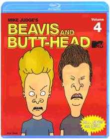
Beerfest
B000MEYFXWAfter a humiliating false start in Germany's super-secret underground beer competition, America's unlikely team vows to risk life, limb and liver to dominate the ultimate chug-a-lug championship. The laughs are on the haus!DVD Features:
Audio Commentary:Two commentaries! Commentary 1: Jay Chandrasekhar and Steve Lemme discuss the finer points of drinking games and answer their critics. Commentary 2: Kevin Heffernan, Paul Soter and Erik Stolhanske share their behind-the-scenes buzz.
Deleted Scenes:With two optional commentaries: 1) by Jay Chandrasekhar and Steve Lemme, and 2) by Kevin Heffernan, Paul Soter and Erik Stolhanske
Featurette:Rule #1... Everyone who has consumed has committed a party foul. Filmmakers reveal the most egregious mishaps from the set and beyond.
Interviews:With the Flog Fluffer - meet the man behind the green goo
Other:Beer 101 History Lesson: The animated history of beer taught by director Jay Chandrasekhar and the lizards.
Theatrical Trailer

Beetlejuice
Tim BurtonB001AGXEA6What’s a couple of stay-at-home ghosts to do when their beloved home is taken over by trendy yuppies? They call on Beetlejuice, the afterlife’s freelance bio-exorcist to scare off the family – and everyone gets more than she, he or it bargains for! Tim Burton guides this PG-rated comedy monsterpiece whose stars include Alec Baldwin, Geena Davis, and Winona Ryder. And Michael Keaton is Beetlejuice, the ghost with the most who flings one-liners, spins into grotesque forms, gobbles insects, and who just can’t leave the ladies (living or dead) alone. Ghoul love it!
The Best Of Me
B00QK4ALG8Based on the bestselling novel by acclaimed author Nicholas Sparks, The Best of Me tells the story of Dawson and Amanda, two former high school sweethearts who find themselves reunited after 20 years apart, when they return to their small town for the funeral of the beloved friend. Their bittersweet reunion reignites the love they've never forgotten, but soon they discover the forces that drove them apart twenty years ago live on, posing even more serious threats today. Spanning decades, this epic love story captures the enduring power of our first true love, and the wrenching choices we face when confronted with elusive second chances.The Big Lebowski
Joel Coen, Ethan CoenB0051GOB26From the Academy Awardr-winning Coen brothers, The Big Lebowski is a hilariously quirky comedy about bowling, a severed toe, White Russians and a guy named The Dude. Jeff "The Dude" Lebowski doesn't want any drama in his life - heck, he can't even be bothered with a job. But, he must embark on a quest with his bowling buddies after his rug is destroyed in a twisted case of mistaken identity. Starring Jeff Bridges, John Goodman, Julianne Moore, Steve Buscemi, Philip Seymour Hoffman and John Turturro, experience the cultural phenomenon of The Dude in the "#1 cult film of all time!" (The Boston Globe).
Birdman
Alejandro González IñárrituB00RO49JEIBIRDMAN or The Unexpected Virtue of Ignorance is a black comedy that tells the story of an actor (Michael Keaton) — famous for portraying an iconic superhero — as he struggles to mount a Broadway play. In the days leading up to opening night, he battles his ego and attempts to recover his family, his career, and himself.
Black Snake Moan
B000Q6GURUWhen ex-blues musician Lazarus (Samuel L. Jackson) finds the town nymphomaniac Rae (Christina Ricci) left for dead on the side of the road, he vows to nurse her back to health…and cure her of her wickedness. Until then, she’ll be chained to the immovable radiator in his home. But Lazarus has demons of his own: his wife just left him for his own brother. While Lazarus and Rae struggle to fix their broken lives, the situation threatens to explode as Rae's boyfriend Ronnie (Justin Timberlake) — a roughneck soldier just back from Iraq — comes searching for his missing lover.
Blade Runner
Ridley ScottB000UBMWG4Visually spectacular, intensely action-packed and powerfully prophetic since its debut, Blade Runner returns in Ridley Scott's definitive Final Cut, including extended scenes and never-before-seen special effects, now seen in sepcatacular hi-definition! In a signature role as 21st- century detective Rick Deckard, Harrison Ford brings his masculine-yet- vulnerable presence to this stylish noir thriller. In a future of high- tech possibility soured by urban and social decay, Deckard hunts for fugitive, muderous replicants - and is drawn to a mystery woman whose secrets may undermine his soul. This spectacular 5-Disc Set features all of the content of the standard definition Ultimate Collector's Edition. All five version of the legendary Sci-Fi film from Director Ridley Scott with all new 5.1 audio - the definitive Final Cut, three additional versions of the film, and the rare Work Print version - in addition to the in-depth feature length documentary "Dangerous Days", and one complete disc of bonus content including over 80-minutes of never- before-seen deleted scenes.
The Blind Side
John Lee HancockB002VECM72Michael Oher (Quinton Aaron) knows little about family. Less about football. What the homeless teen knows are the streets and projects of Memphis. Well-to-do Leigh Anne Tuohy (Sandra Bullock) knows little about his world. Yet when she and Michael meet, he's found a home. And the Tuohys have found something just as life-changing: a beloved new son and brother. This real-life story of family and of Michael's growth into a blue-chip football star will have you cheering with its mix of gridiron action and heartwarming emotion. Share the remarkable journey of the college All-American and first-round NFL draft pick who was a winner before he ever stepped onto the playing field.
The Book of Eli
Albert Hughes, Allen HughesB002ZG997MEli walks alone in post-apocalyptic America. He heads west along the Highway of Death on a mission he doesn't fully understand but knows he must complete. In his backpack is the last copy of a book that could become the wellspring of a revived society. Or in the wrong hands, the hammer of a despot. Denzel Washington is Eli, who keeps his blade sharp and his survival instincts sharper as his quest thrusts him into a savage wasteland... and into explosive conflict with a resourceful warlord (Gary Oldman) set on possessing the book. "We walk by faith, not by sight," quotes Eli. Under the taut direction of the Hughes Brothers (Menace II Society), those words hit home with unexpected meaning and power.
The Bourne Identity
Doug LimanB002ZHKZCORacing to unlock the secret of his own identity, amnesiac operative Jason Bourne discovers the deadly truth: he’s the government’s number one target, a $30 million weapon it no longer trusts. Academy Award® winner Matt Damon stars in this super-charged, thrill-a-minute spectacular loaded with “non-stop action!” (Bill Zwecker, FOX-TV)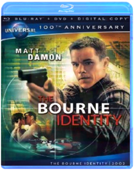
The Bourne Supremacy
Paul GreengrassB002ZHKZCYThey should have left him alone. Academy Award® winner Matt Damon is back as expert assassin Jason Bourne in this stunning, non-stop action hit. Fuelled by awesome fight scenes and some of the most breathtaking chase sequences ever filmed, it’s a state-of-the-art espionage thriller that explodes into action and never lets up!
The Bourne Ultimatum
Christopher Rouse, Paul GreengrassB002ZHKZD8Highly trained assassin Jason Bourne is on the hunt for the agents who stole his memory and true identity. With a new generation of skilled CIA operatives tracking his every move, Bourne is in a non-stop race around the globe as he finally learns the truth behind his mysterious past. Loaded with incredible fight and chase sequences, it’s the exhilarating movie with “mind-blowing action” (Roger Ebert, Chicago Sun-Times) that you can’t afford to miss!
The Bourne Legacy
Tony GilroyB005LAIIQCThe Bourne Legacy takes the action-packed Bourne series to an explosive new level. On the verge of having their conspiracy exposed, members of the government's intelligence community will stop at nothing to erase all evidence of their top secret programs - even the agents involved. Aaron Cross (Jeremy Renner) must use his genetically-engineered skills to survive the ultimate game of cat-and-mouse and finish what Jason Bourne started. Also starring Academy Award winner Rachel Weisz and Academy Award nominee Edward Norton, critics are calling this a "thrilling, edge-of-your-seat heart-pounder" (Meg Porter Berns, WSVN-TV (FOX), Miami).
Brave
Steve Purcell, Mark Andrews, Brenda ChapmanB005LAII08Set in the rugged and mysterious Highlands of Scotland, Disney Pixar's Brave follows the heroic journey of Merida (voice of Kelly Macdonald), a skilled archer and headstrong daughter of King Fergus (voice of Billy Connolly) and Queen Elinor (voice of Emma Thompson). Determined to change her fate, Merida defies an age-old custom sacred to the unruly and uproarious lords of the land: massive Lord MacGuffin (voice of Kevin McKidd), surly Lord Macintosh (voice of Craig Ferguson) and cantankerous Lord Dingwall (voice of Robbie Coltrane), unleashing chaos in the kingdom. When she turns to an eccentric Witch (voice of Julie Walters), she is granted an ill-fated wish and the ensuing peril forces Merida to harness all of her resources including her mischievous triplet brothers to undo a beastly curse and discover the meaning of true bravery.
Bridesmaids
Paul FeigB005CHTXY0Thirty-something Annie (Kristen Wiig) has hit a rough patch but finds her life turned completely upside-down when she takes on the Maid of Honor role in her best friend Lillian's (Maya Rudolph) wedding. In way over her head but determined to succeed, Annie leads a hilarious hodgepodge of bridesmaids (Rose Byrne, Melissa McCarthy, Wendi McLendon-Covey and Ellie Kemper) on a wild ride down the road to the big event.A Bug's Life
John Lasseter, Sharon CalahanB003UMW63EExperience the astonishing world of Flik and his tiny friends like never before as the magic of Pixar animation springs to life with new crystal-clear picture and amazing theater-quality sound on Disney Blu-ray Hi-Def! Embark on an incredible journey with one little ant as he searches for a brave band of warriors to help him battle the bullying grasshoppers who threaten his home. When he stumbles on a bumbling troupe of circus bugs instead, their only hope for victory is the bond of friendship and the awesome power of imagination. Crawling with fun-loving characters and featuring a star-studded voice cast, this epic film of miniature proportions is a "triumph of storytelling," says the San Francisco Chronicle. Plus, with bonus features created exclusively for Disney Blu-ray, A BUG'S LIFE will keep the whole family buzzing for hours!
The Butterfly Effect
VariousB007NRBMZUA young man struggling to access sublimated childhood memories finds a technique that allows him to travel back to the past. Occupying his childhood body, he is able to change history. But every change he makes has unexpected consequences.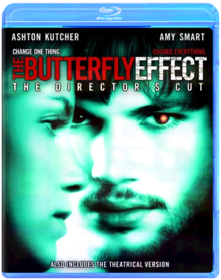
Captain Phillips
Paul GreengrassB008JFUNNMCaptain Phillips is a multi-layered examination of the 2009 hijacking of the U.S. container ship Maersk Alabama by a crew of Somali pirates. Based on a true story, the film focuses on the Alabama’s commanding officer, Captain Richard Phillips (two-time Academy Award®-winner Tom Hanks, Best Actor, 1993, Philadelphia; Best Actor, 1994, Forrest Gump), and the Somali pirate captain, Muse (Barkhad Abdi), who takes him hostage. The two men are set on an unstoppable collision course when Muse and his crew target Phillips’ unarmed ship; in the ensuing standoff, both men will find themselves at the mercy of forces beyond their control.
Cars
B000V1Y43WDisney Cars (Blu-ray) Disney/PIXAR's "Cars," the high-octane adventure comedy from the creators of "ToyStory," "The Incredibles" and "Finding Nemo" now looks and sounds better than ever in this Blu-ray(R) disc created from the original source file. Hotshot race car Lightning McQueen (Owen Wilson) is living life in the fast lane - until he hits a detour and gets stranded in Radiator Springs, a forgotten town on Route 66. There he meets Sally, Mater,Doc Hudson (Paul Newman) and a heap of hilarious characters who help him discover there's more to life than trophies and fame. Go deeper into the world of "Cars" than you ever dreamed possible in eye-popping visual clarity. Feel the sound of roaringengines and rock to the rhythm of some smokin' roadhouse riffs with audio enhancement that puts thepedal to the metal! Experience "Cars" for the first time on Disney Blu-ray - Magic in High Definition.
Cars 2
Directed By John Lasseter, Co-Director: Brad LewisB005AUWXZ0Rev up for Cars 2, Disney/Pixar's laugh-out-loud adventure! Everyone's favorite Cars characters leave Radiator Springs to travel the globe with Lightning McQueen and his best friend Mater, as he competes in the first ever World Grand Prix! Meanwhile, Mater unwittingly gets caught up in a top-secret, action-packed, global spy mission. Powered by the genuine emotion that Disney/Pixar always delivers and with a colorful new all-car cast that includes secret agents, menacing villains, and international racing competitors, Cars 2 is non-stop fun for the entire family!Cars Toon: Mater's Tall Tales
Cars ToonB003Z6YMA0Rev up your engines for this unforgettable collection of Cars Toons starring Mater, the lovable and hilarious tow truck from the hit movie Cars. From the creative minds of Disney/Pixar come nine highly entertaining "Tall Tales" involving bullfights, drag races, rock concerts, monster truck showdowns and even UFOs - plus, check out the new, exclusive, never-before-seen Cars Toons Mater Private Eye and Moon Mater.Join Mater, the heart and soul of Radiator Springs, and all your favorite characters from the world of Cars as they take you on a fun-filled ride that will have your family roaring with laughter!

Casino
B001EIOOV8Robert De Niro, Sharon Stone and Joe Pesci star in director Martin Scorsese's riveting look at how blind ambition, white-hot passion and 24-karat greed toppled an empire. Las Vegas, 1973, is the setting for this fact-based story about the Mob's multimillion-dollar casino operation, where fortunes and lives were made and lost with a roll of the dice.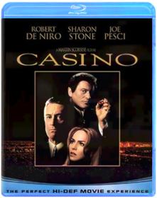
Casino Royale
Stuart Baird, Martin CampbellB000MRA5NSCasino Royale introduces James BOond before he holds his license to kill. But Bond is no less dangerous, and with two professional assassinations in quick succession, he is elevated to "00" status. "M" (Judi Dench), head of the British Secret Service, sends the newly-promoted 007 on his first mission that takes him to Madagascar, the Bahamas and eventually leads him to Montenegro to face Le Chiffre, a ruthless financier under threat from his terrorist clientele, who is attempting to restore his funds in a high-stakes poker game at the Casino Royale. "M" places Bond under the watchful eye of the Treasury official Vesper Lynd. At first skeptical of what value Vesper can provide, Bond's interest in her deepens as they brave danger together. Le Chiffre's cunning and cruelty come to bear on them both in a way Bond could never imagine, and he learns his most important lesson: Trust no one.The Change-Up
David DobkinB004HO6I2ORyan Reynolds and Jason Bateman star in the outrageous comedy from the director of Wedding Crashers and the writers of The Hangover. One drunken night, two friends admit that they wish they had the other's life. Mitch (Reynolds) thinks Dave has it all: a beautiful, loving family and a high-paying job at a prestigious law firm. But Dave (Bateman) thinks Mitch's stress-free life without obligation or consequence is the real dream come true. The next morning they wake up, hungover, in each other's bodies, and proceed to freak out! With time not on their side, Mitch and Dave comically struggle to avoid completely destroying each other's lives before they can find a way to get their old ones back. Starring: Ryan Reynolds, Jason Bateman, Leslie Mann, Olivia Wilde, Craig Bierko, Alan Arkin Directed by: David Dobkin
Chappie
Neill BlomkampB00UC9SOKWIn the near future, crime is monitored by an oppressive mechanized police force. But now, the people are fighting back. When one police droid, Chappie, is stolen and given new programming, he becomes the first robot with the ability to think and feel for himself. As powerful and destructive forces start to see Chappie as a danger to mankind and order, they will stop at nothing to maintain the status quo and ensure that Chappie is the last of his kind.
CHARLIE ST CLOUD
B00G4DQKCECHARLIE ST CLOUDNo description available.
Genre: Drama
Rating: PG13
Release Date: 0000-00-00
Media Type: Blu-Ray
Chasing Amy
B004SEUJFKChasing Amy is the third installment in the "New Jersey Trilogy" from award-winning writer-director Kevin Smith (Clerks, Mallrats, Dogma). Cult comic-book artist Holden (Ben Affleck) falls in love with fellow artist Alyssa (Joey Lauren Adams), only to be thwarted by her sexuality, the disdain of his best friend Banky (Jason Lee), and his own misgivings about himself. Filled with Smith's unique ear for dialogue and insight into relationships, Chasing Amy offers a thoughtful, funny look at how perceptions alter lives, and how obsession and self-doubt skew reality.
Children of Men
B003YWJMBOA Christmas Carol
B00G4SAWBY
CHRISTMAS STORY
B00G4RD2HQCHRISTMAS STORY (BLU-RAY/1983)CHRISTMAS STORY (BLU-RAY/1983)CHRISTMAS

Christmas Vacation
B000KJT8IGMake merry as Chevy Chase, Beverly D'Angelo, Randy Quaid and an ensemble of comedy favorites strive to gift-wrap the "perfect Christmas" for the Griswold family. The most successful of the three vacations. Year: 1989 Director: Jeremiah S. Chechik Starring: Chevy Chase, Beverly D'Angelo, Randy Quaid,
Cloud Atlas
Lana Wachowski, Tom Tykwer, Andy WachowskiB00A8MGLAIFuture. Present. Past. Everything is connected. An exploration of how the actions of individual lives impact one another in the past, present and future, as one soul is shaped from a killer into a hero, and an act of kindness ripples across centuries to inspire a revolution.The story is a time-shifting weave of six interlinking narratives, with diverse settings from the savagery of a Pacific Island in the 1850s to a dystopian Korea of the near future. Based on the New York Times best-selling novel "Cloud Atlas" written by David Mitchell.
Cloverfield
Matt ReevesB0018QCXGYWidescreen Blu-Ray Cloverfield. Five young New Yorkers throw their friend a going-away party the night that a monster the size of a skyscraper descends upon the city. Told from the point of view of their video camera, the film is a document of their attempt to survive the most surreal, horrifying event of their lives.Starring: Michael Stahl-David, Mike Vogel, Odette Yustman,Jessica Lucas,T.J. Miller. Director: Matt Reeves. Rating: PG-13 for violence, terror and disturbing images10 Cloverfield Lane
Mary Eliza WinsteadB01BLH8R50After surviving a car accident, Michelle (Mary Elizabeth Winstead) wakes up to find herself in an underground bunker with two men. Howard (John Goodman) tells her that a massive chemical attack has rendered the air unbreathable, and their only hope of survival is to remain inside. Despite the comforts of home, Howard's controlling and menacing nature makes Michelle want to escape. After taking matters into her own hands, the young woman finally discovers the truth about the outside world.
The Conjuring
James WanB00BEIYMISBefore there was Amityville, there was Harrisville. Based on the true life story, The Conjuring tells the tale of how world renowned paranormal investigators Ed and Lorraine Warren were called upon to help a family terrorized by a dark presence in a secluded farmhouse. Forced to confront a powerful demonic entity, the Warrens find themselves caught in the most horrifying case of their lives.
Crank
Brian Taylor, Mark NeveldineB000KHX73UA professional hit man (Jason Statham) is poisoned and has only hours to live. He has some big tasks to accomplish before the grim reaper arrives.Crank 2: High Voltage
Fernando Villena, Mark Neveldine, Brian TaylorB002DYYGNSThe critics have not been very kind to Crank: High Voltage. But what do they know? Here’s what this movie has going for it: gratuitous nudity, mindless violence, constant profanity, and a ridiculous storyline. Add to that stereotypes galore (gay, Asian, Latino, the neuropsychiatrically disabled, you name it), strippers with guns, a strike by porn actors (with a cameo appearance by Ron Jeremy), and a guy who refers to his heart as a "strawberry tart," and one can only wonder what’s not to like. In fact, writer-director-producers Mark Neveldine and Brian Taylor’s sequel to 2006’s Crank is an absolute hoot, a non-stop assault of crazy sights and sounds that will leave you breathless and laughing. As the action starts, Jason Statham’s Chev Chelios has not only survived the fall from a helicopter that ended the earlier film, but is now on the operating table, awake and watching as some Chinese villains harvest his "tart" in order to implant it in their aging leader (a wacky turn by David Carradine). Chev quickly dispatches the bad guys, but the fun’s just starting; the mechanical ticker they’ve put inside him needs constant recharging, so as Chev pursues the real organ, he must use whatever’s available (jumper cables, a police taser, a car cigarette lighter, high voltage power lines) to keep the fake one going. Storywise, that’s about it. But it’s plenty, as the filmmakers’ ultra-kinetic style—with its manic edits, cartoony subtitles, and other envelope-stretching effects—and amusing performances by Amy Smart (as Chev’s girlfriend), Dwight Yoakam (as a "doctor" who helps him figure out what’s happening), and others keep things going. No, Crank: High Voltage ain’t exactly Masterpiece Theater, but this is without a doubt one of 2009’s most entertaining films. —Sam Graham
Crazy, Stupid, Love.
Glenn Ficarra, John RequaB003Y5H57ESteve Carell and Ryan Gosling lead an all-star cast in Crazy, Stupid, Love. Fortysomething straight-laced Cal Weaver (Carell) is living the dream—good job, nice house, great kids and marriage to his high school sweetheart, Emily (Julianne Moore). So when Cal learns that his wife has cheated on him and wants a divorce, his “perfect” life quickly unravels. Cal, who hasn't dated in decades, stands out as the epitome of un-smooth so handsome player Jacob Palmer (Gosling) takes him on as wingman and protégé, opening Cal’s eyes to the many options before him: flirty women, manly drinks and a sense of style. Despite Cal's makeover and his many new conquests, the one thing that can’t be made over is his heart, which seems to keep leading Cal back to where he began. Brimming with inspired performances, critics are calling this gem of a romantic comedy “a movie that understands love” (Owen Gleiberman, Entertainment Weekly).The Croods
B00CHVIAS4Join the first modern family as they embark on the journey of a lifetime across a spectacular and unforgettable landscape. When their cave is destroyed, everything the Croods have ever known is rocked by seismic shifts and generational clashes as they discover an incredible new world filled with fantastic creatures - and their world is changed forever. If they don’t evolve, they’ll be history!
The Crow
Alex ProyasB005EY2XFCBefore Sin City and The Dark Knight rose, there was The Crow - the 'dark, lurid revenge fantasy' (The New York Times) from director Alex Proyas (Dark City) that entranced audiences and critics alike. Featuring Brandon Lee in his final, tragic performance, The Crow is the tale of young musician Eric Draven (Lee) who, along with his fianc‚e, is murdered on the eve of their Halloween wedding. Exactly one year after their deaths, Eric is risen from the grave by a mysterious crow to seek out his killers and force them to answer for their crimes.Dark City
B0018O4YSQThe critically-acclaimed triumph from visionary director Alex Proyas (I, Robot, The Crow) is back with a brand new directors cut featuring enhanced picture and sound, never-before-seen footage and three commentary tracks that take you deeper than ever before into the world of one of sci-fis most exciting and revered tales. When John Murdoch (Rufus Sewell) wakes with no memory at the scene of a grisly murder, he soon finds himself hunted by the police, a woman claiming to be his wife and a mysterious group of pale men who seem to control everything and everyone in the city. Starring Rufus Sewell (The Illusionist), Jennifer Connelly (A Beautiful Mind), William Hurt (A History of Violence) and Kiefer Sutherland (TVs 24).The Dark Knight Trilogy
Christopher NolanB009JBZH54Batman Begins:Batman Begins explores the origins of the Batman legend and the Dark Knight's emergence as a force for good in Gotham. In the wake of his parents' murder, disillusioned industrial heir Bruce Wayne (Christian Bale) travels the world seeking the means to fight injustice and turn fear against those who prey on the fearful. He returns to Gotham and unveils his alter-ego: Batman, a masked crusader who uses his strength, intellect and an array of high tech deceptions to fight the sinister forces that threaten the city.
The Dark Knight:
The follow-up to Batman Begins, The Dark Knight reunites director Christopher Nolan and star Christian Bale, who reprises the role of Batman/Bruce Wayne in his continuing war on crime. With the help of Lt. Jim Gordon and District Attorney Harvey Dent, Batman sets out to destroy organized crime in Gotham for good. The triumvirate proves effective, but soon find themselves prey to a rising criminal mastermind known as The Joker, who thrusts Gotham into anarchy and forces Batman closer to crossing the fine line between hero and vigilante. Heath Ledger stars as archvillain The Joker, and Aaron Eckhart plays Dent. Maggie Gyllenhaal joins the cast as Rachel Dawes. Returning from Batman Begins are Gary Oldman as Gordon, Michael Caine as Alfred and Morgan Freeman as Lucius Fox.
The Dark Knight Rises:
It has been eight years since Batman vanished into the night, turning, in that instant, from hero to fugitive. Assuming the blame for the death of D.A. Harvey Dent, the Dark Knight sacrificed everything for what he and Commissioner Gordon both hoped was the greater good. For a time the lie worked, as criminal activity in Gotham City was crushed under the weight of the anti-crime Dent Act. But everything will change with the arrival of a cunning cat burglar with a mysterious agenda. Far more dangerous, however, is the emergence of Bane, a masked terrorist whose ruthless plans for Gotham drive Bruce out of his self-imposed exile. But even if he dons the cape and cowl again, Batman may be no match for Bane.
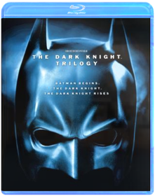
Dawn of the Dead
Zack SnyderB001CW7ZW6IN 1970S AMERICA, A DETECTIVE WORKS TO BRING DOWN THE DRUGEMPIRE OF FRANK LUCAS, A HEROIN KINGPIN FROM MANHATTAN, WHO ISSMUGGLING THE DRUG INTO THE COUNTRY FROM THE FAR EAST.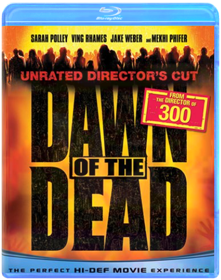
Man of Steel
Zack SnyderB00DYEN5QUA young boy learns that he has extraordinary powers and is not of this Earth. As a young man, he journeys to discover where he came from and what he was sent here to do. But the hero in him must emerge if he is to save the world from annihilation and become the symbol of hope for all mankind.
Batman v Superman: Dawn of Justice
Zack SnyderB01DX299BC
The Dead
Howard Ford, Jonathan FordB006BZ8O3IAfter crashing off the coast, Lt. Brian Murphy battles for survival across the vast terrains of Africa in search for a way to get back to his beloved family. Joined by local military man Daniel Dembele, who is also searching for his son, both men join forces, all the while battling against the ever-present threat of the living dead!
Death Race
Paul W.S. AndersonB00C6B7V58Sentenced to the world's most dangerous prison for a murder he did not commit, Jensen Ames (Jason Statham) has only one chance to get out alive — win the ultimate race to the death. Also starring Tyrese Gibson, Death Race will keep you pinned to your seat all the way to its insane, metal-crushing end!Despicable Me
Pierre Coffin, Chris RenaudB00BUKZ4O6Gru delights in all things wicked. Surrounded by an army of tireless, little yellow minions, and armed with his arsenal of shrink rays, freeze rays and battle-ready vehicles for land and air, he vanquishes all who stand in his way. Until the day he encounters the immense will of three little orphaned girls who look at him and see something that no one else has ever seen: a potential Dad. - DESPICABLE ME 3D
Despicable Me 2
Gregory Perler, Chris Renaud, Pierre CoffinB00DD49R0EGru, his adorable girls, and the mischievous Minions are back with a cast of unforgettable new characters in the blockbuster sequel to the worldwide phenomenon. Just as Gru has given up being super-bad to be a super-dad, the Anti-Villain League recruits him to track down a new criminal mastermind and save the world. Partnered with secret agent Lucy Wilde, Gru, along with the wildly unpredictable Minions, must figure out how to keep his cover while also keeping up with his duties as a father. Assemble the Minions for laugh-out-loud comedy in "one of the funniest, most enjoyable movies ever!" (MovieGuide)
Die Hard
John McTiernanB000W4HIX6Bruce Willis stars as New York City Detective John McClane, newly arrived in Los Angeles to spend the Christmas holiday with his estranged wife (Bonnie Bedelia). As Mclane waits for his wife's office party to break up, terrorists take control of the building. While the terrorist leader, Hans Gruber (Alexander Godunov) round up hostages, McClane slips away unnoticed. Armed with only a service revolver and his cunning, McClane launches his own one-man war. A crackling thriller from beginning to end, Die Hard explodes with heart-stopping suspense.
Die Hard 2: Die Harder
Renny HarlinB000W4HIXGBruce Willis returns as the heroic cop who battles not only terrorists, but also an incompetent airport police chief (Dennis Franz), the hard-headed commander (John Amos) of the Army's anti-terrorist squad and a deadly winter snowstorm. The runways are littered with death and destruction, and McClane is in a race against time. His wife (Bonnie Bedelia) is trapped on one of the planes circling overhead, which is desperately low on fuel. It's all-out war, a heart-stopping, jet-propelled journey filled with excitement and terror. Fasten your seat belts!
Die Hard With a Vengeance
John McTiernanB000W4HIXQThe third installment of the hugely succesful Die Hard series, reteams Bruce Willis and director John McTiernan in a new action/adventure extravaganza of special effects, unexpected comedy and non-stop thrills.Live Free or Die Hard
Len WisemanB000VNMMQ6"The best of the best is back and better than ever" (WNYW-TV) in the latest installment of the pulse-pounding, thrill-a-minute Die Hard action films. New York City detective John McClane (Bruce Willis) delivers old-school justice to a new breed of terrorists when a massive computer attack on the U.S. infrastructure threatens to shut down the entire country over Independence Day weekend.
A Good Day to Die Hard
John MooreB00BUADSMQBruce Willis is back in action - mind-blowing, heart-stopping, rip-roaring action - as John McClane, the heroic New York cop with a knack for being in the wrong place at the right time. John's latest predicament takes him all the way to Russia to track down his estranged son, Jack (Jai Courtney), who has been imprisoned in Moscow. But the mission takes a deadly turn as father and son must join forces to thwart a nuclear weapons heist that could trigger World War III!
District 9
Neill BlomkampB002SJIO5EFrom producer Peter Jackson (The Lord of the Rings Trilogy) and director Neill Blomkamp comes a startlingly original science fiction thriller that "soars on the imagination of its creators" (Peter Travers, Rolling Stone). With stunning special effects and gritty realism, the film plunges us into a world where the aliens have landed... only to be exiled to a slum on the fringes of Johannesburg. Now, one lone human discovers the mysterious secret of the extraterrestrial weapon technology. Hunted and hounded through the bizarre back alleys of an alien shantytown, he will discover what it means to be the ultimate outsider on your own planet.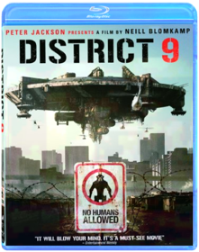
Django Unchained
Quentin TarantinoB005LAIIKISet in the South two years before the Civil War, DJANGO UNCHAINED stars Academy Award ®-winner Jamie Foxx as Django, a slave whose brutal history with his former owners lands him face-to-face with a German-born bounty hunter Dr. King Schultz (Academy Award®-winner Christolph Waltz). Schultz is on the trail of the murderous Brittle brothers, and only Django can lead him to his bounty. The unorthodox Schultz acquires Django with a promise to free him upon the capture of the Brittles – dead or alive.Success leads Schultz to free Django, though the two men choose not to go their separate ways. Instead, Schultz seeks out the South’s most wanted criminals with Django by his side. Honing vital hunting skills, Django remains focused on one goal: finding and rescuing Broomhilda (Kerry Washington), the wife he lost to the slave trade long ago.
Django and Schultz’s search ultimately leads them to Calvin Candie (Academy Award®-nominee Leonardo DiCaprio), the proprietor of “Candyland,” an infamous plantation. Exploring the compound under false pretenses, Django and Schultz rouse the suspicion of Stephen (Academy Award®-nominee Samuel L. Jackson), Candie’s trusted house slave. Their moves are marked, and a treacherous organization closes in on them. If Django and Schultz are to escape with Broomhilda, they must choose between independence and solidarity, between sacrifice and survival…

Doctor Who: The Day of the Doctor
VariousB00FAVRHBEThe Doctors embark on their greatest adventure in this 50th Anniversary Special. In 2013, something terrible is awakening in London’s National Gallery; in 1562, a murderous plot is afoot in Elizabethan England; and somewhere in space, an ancient battle reaches its devastating conclusion. All of reality is at stake as the Doctor’s own dangerous past comes back to haunt him.
Drag Me to Hell
Sam RaimiB008RVCV3SChristine Brown is an ambitious L.A. loan officer with a charming boyfriend, professor Clay Dalton. Life is good until the mysterious Mrs. Ganush arrives at the bank to beg for an extension on her home loan. Should Christine follow her instincts and give the old woman a break? Or should she deny the extension to impress her boss, Mr. Jacks, and get a leg-up on a promotion? Christine fatefully chooses the latter, shaming Mrs. Ganush and dispossessing her of her home. In retaliation, the old woman places the powerful curse of the Lamia on Christine, transforming her life into a living hell. Haunted by an evil spirit and misunderstood by a skeptical boyfriend, she seeks the aid of seer Rham Jas to save her soul from eternal damnation. To help the shattered Christine return her life to normal, the psychic sets her on a frantic course to reverse the spell. As evil forces close in, Christine must face the unthinkable: How far will she go to break free of the curse?
Dredd
Pete TravisB005LAII80High octane sci-fi action movie with all-out, guns-blazing, bone-crushing, explosives-laden action. Based on the popular comic book character JUDGE DREDD.The future America is an irradiated wasteland. On its East Coast lies Mega City One - a vast violent metropolis where criminals rule the chaotic streets. The only force of order lies with the urban cops called "Judges" who possess the combined powers of judge jury and instant executioner. The ultimate Judge Dredd (Karl Urban) is tasked with ridding the city of its latest scourge -a dangerous drug and the sadistic prostitute turned drug pusher who is using it to take over the city.

Drive Angry
B00AQ5SNWQ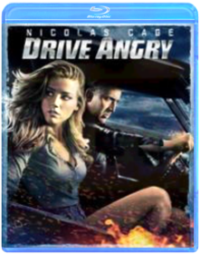
Dumb and Dumber
Peter FarrellyB00384X0DYDumb and Dumber (Unrated Edition) [Blu-ray] (1994) This is the unrated version of the comedy classic that includes all-new scenes and extended scenes.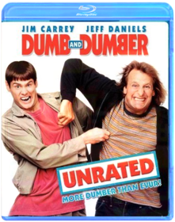
E.T. The Extra-Terrestrial
Steven SpielbergB009NUL1ROThis is the Collectible SteelBook Casing, G2 SizedUS Exclusive

EDWARD SCISSORHANDS
B00G4RCSCQEDWARD SCISSORHANDS (BD)No description available for this title.

Elf
Jon FavreauB001E5CH0GThis hilarious Christmas film tells the tale of a young orphan child who mistakenly crawls into Santa's bag of gifts on Christmas Eve and is transported back to the North Pole and raised as an elf. Years later Buddy learns he is not really an elf and goes on a journey to New York City to find his true identity.
Epic
B00CWM7EPSFrom the creators of Ice Age comes the year’s funniest, most exhilarating animated adventure! Transported to a magical world, a teenager (Amanda Seyfried) is recruited by a nature spirit, Queen Tara (Beyoncé Knowles), to help the “Leafmen” save their forest from evil warriors. The whole family will love this fast-paced thrill-ride, with its astonishing animation and an all-star voice cast that includes Colin Farrell, Oscar® Winner Christoph Waltz and Steven Tyler!
Army of Darkness
Sam RaimiB0025VLEMKAll primitive screwheads, listen up! Cult superstar Bruce Campbell (Evil Dead) reunites with director Sam Raimi (Drag Me to Hell, Spider-Man) to battle the deadly forces of evil in Army of Darkness - the outrageous, effects-fueled action epic that will make you scream with fear and laughter. Forced to lead a makeshift Dark Ages army against the demonic Deadites, who possess all the deadly magic of hell, the shotgun-toting, chainsaw-armed, reluctant 20th century time traveler Ash (Campbell) must save the living from the dead, rescue his medieval girlfriend and get back to his own time. One of the most popular horror comedies of all time, now digitally remastered and loaded with bonus features, Army of Darkness Screwhead Edition is drop-dead fun!
Ash vs Evil Dead - The Complete First Season
B017DYVF40“Ash vs Evil Dead,” a 10-episode, half-hour series, is the long-awaited follow-up to the classic horror film franchise The Evil Dead. The series follows Ash, the stock boy, aging lothario and chainsaw-handed monster hunter who has spent the last 30 years avoiding responsibility, maturity and the terrors of the Evil Dead. When a Deadite plague threatens to destroy all of mankind, Ash is finally forced to face his demons –personal and literal. Destiny, it turns out, has no plans to release the unlikely hero from its “Evil” grip. The cast is led by Bruce Campbell as Ash Williams, Lucy Lawless as Ruby a mysterious figure who believes Ash is the cause of the Evil outbreaks, Ray Santiago as Pablo Simon Bolivar, an idealistic immigrant who becomes Ash’s loyal sidekick, Dana DeLorenzo as Kelly Maxwell, a moody wild child trying to outrun her past and Jill Marie Jones as Amanda Fisher, a disgraced Michigan State Trooper set to find our anti-hero Ash and prove his responsibility in the grisly murder of her partner. The series is executive produced by Sam Raimi, Rob Tapert, and Bruce Campbell, the original filmmakers of the franchise, and Craig DiGregorio (“Chuck”), who serves as executive producer and showrunner.Evil Dead
Evil Dead (2013)B008JFUO0YA secluded cabin. An ancient curse. An unrelenting evil. Sam Raimi and Bruce Campbell reunite to present a genuinely terrifying re-imagining of their original horror masterpiece. Five young friends have found the mysterious and fiercely powerful Book of the Dead. Unable to resist its temptation, they release a violent demon on a blood-thirsty quest to possess them all. Who will be left to fight for their survival and defeat this unearthly force of murderous carnage?
The Expendables 2
Simon WestB009MF56GCThe cast of The Expendables, with newest members Billy the Kid (Hemsworth) and Maggie (Nan) aboard, are reunited when Mr. Church (Bruce Willis) enlists the Expendables to take on a seemingly simple job. The task looks like an easy paycheck for Barney and his band of old school mercenaries. But when things go wrong and one of their own is viciously killed, the Expendables are compelled to seek revenge in hostile territory where the odds are stacked against them.
Extremely Loud and Incredibly Close
Stephen DaldryB0077ATSZEOskar is convinced that his father (Hanks), who died in the 9/11 attacks on the World Trade Center, has left a final message for him hidden somewhere in the city. Feeling disconnected from his grieving mother (Bullock) and driven by a relentlessly active mind that refuses to believe in things that can't be observed, Oskar begins searching New York City for the lock that fits a mysterious key he found in his father's closet. His journey through the five boroughs takes him beyond his own loss to a greater understanding of the observable world around him.Family Guy: Laugh It Up Fuzzball
B0044E9JTGDisc 1: Blue Harvest Blu-rayDisc 2: Something Something Something Dark Side Blu-ray
Disc 3: It's A Trap! Blu-ray

Fantastic 4: Rise of the Silver Surfer
B000VNMMPWCatch a wave of "terrific adventure" and "non-stop action" (CBS-TV) in this fun and fantastically entertaining smash-hit! "Invisible Woman: Sue Storm and "Mr. Fantastic" Dr. Reed Richards are about to be married when a mysterious alien... the Silver Surfer... crashes the proceedings and heralds Earth's impending destruction. With time running out, the Fantastic Four reluctantly teams up with the nefarious Dr. Doom in a thrilling effort to save our planet!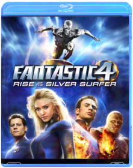
Fargo
Mcdormand, Macy, Buscemi, StormareB00HZN8S9UThe "middle of nowhere" has never looked better in this new edition, now remastered for the best high-definition picture yet! In this film Nominated for seven OSCARSr, * things go terribly awry when small-time Minnesota car salesman Jerry Lundegaard (William H. Macy) hires two thugs (Steve Buscemi and Peter Stormare) to kidnap his wife so he can collect the ransom from his wealthy father-in-law. Once people start dying, the very chipper and very pregnant Police Chief Marge (Frances McDormand) takes the case. Will she stop at nothing until she gets her man? You betcha.
The Fifth Element
Luc BessonB000QTD368New York cab driver Korben Dallas didn't mean to be a hero, but he just picked up the kind of fare that only comes along every five thousand years: A perfect beauty, a perfect being, a perfect weapon. Now, together, they must save the world. Bruce Willis, Milla Jovovich, and Gary Oldman star in acclaimed director Luc Besson's outrageous sci-fi adventure, an extravagantly styled tale of good against evil set in an unbelievable twenty-third century world.
Fifty Shades of Grey - (Unrated Blu-ray Edition + R- rated DVD + R- rated DIGITAL HD
Sam Taylor-JohnsonB00NCDVVLYThe worldwide phenomenon comes to life in Fifty Shades of Grey, starring Dakota Johnson and Jamie Dornan in the iconic roles of Anastasia Steele and Christian Grey. Ana is an inexperienced college student tasked with interviewing enigmatic billionaire Christian Grey. But what starts as business quickly becomes an unconventional romance. Swept up in Christian's glamorous lifestyle, Ana soon finds another side to him as she discovers his secrets and explores her own dark desires. What results is a thrilling, all-consuming romance as Christian and Ana test the limits they will go to for their relationship.Fight Club
David FincherB001992NUQStudio: Tcfhe Release Date: 11/17/2009 Run time: 139 minutes Rating: RFinal Destination
James WongB001AQMBHIAfter an eerie premonition leads a handful of passengers to disembark an ill-fated flight, Death with all its ingenious contraptions of doom at the ready stalks those survivors (Devon Sawa, Ali Larter, Kerr Smith and more) one by one in the gory, gleeful shocker that launched the fright-filled film series. Final Destination: the start of it all!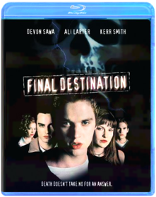
Final Destination 2
B005CV1KZ6Studio: New Line Home Video Release Date: 08/30/2011 Run time: 93 minutesFinal Destination 3
B005CV1L3MGiddily gruesome and perversely entertaining, Final Destination 3 proves, yet again, that horror franchises will thrive as long as teenagers keep finding spectacular ways to die. A stand-alone sequel to the first two Final Destination thrillers, this one begins when a group of seven high-school graduates luckily escape from a deadly roller-coaster disaster, only to discover that their own deaths have been only temporarily avoided. Cute brunette Wendy (Mary Elizabeth Winstead) spots clues of impending doom in digital photos of her soon-to-be-expiring classmates, and an ill wind follows her everywhere, suggesting the presence of a supernatural force that makes her a catalyst for gory events, as each of her friends is dispatched in the order they were meant to die. Returning to give their brainchild a suspenseful, low-budget makeover, franchise creators and former X-Files writers James Wong and Glen Morgan cleverly play on our collective fears (the roller coaster sequence is genuinely terrifying) with a knowing nod to violent urban legends, which explains their inclusion of the '70s hit "Love Roller Coaster" on the soundtrack when two stuck-up girlfriends pay an ill-fated visit to a tanning parlor. And that's just for starters: With Wong as director, FD3 serves up its grisly deaths with tight pacing and humor, and the cathartic carnage is discreetly edited yet gory enough to satisfy hardcore horror buffs. When morbid mayhem is this much fun, it's a safe bet that another sequel is just around the corner. —Jeff Shannon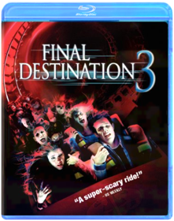
The Final Destination
David R. EllisB004YJMQCSAfter a teen's premonition of a deadly race-car crash helps saves the lives of his peers, Death sets out to collect those who evaded their end.
Final Destination 5
Steven QualeB006QLH7O4Death is just as omnipresent as ever, and in Final Destination 5 it strikes again. During the bus ride to a corporate retreat, Sam (Nicholas D'Agosto) has a premonition in which he and most of his friends - as well as numerous others - die in a horrific bridge collapse. When his vision ends, events begin to mirror what he had seen, and he frantically ushers as many of his colleagues - including his friend, Peter (Miles Fisher), and girlfriend, Molly (Emma Bell) - away from the disaster before Death can claim them. But these unsuspecting souls were never supposed to survive, and in a terrifying race against time, the ill-fated group tries to discover a way to escape Death's sinister agenda.This pack also includes the 2D version of the film on standard Blu-ray, DVD and UltraViolet Digital Copy.
Languages: English, Français & Español.
Subtitles: English SDH, Français & Español.
Blu-ray Special Features (Presented in 2D):
- Alternate Death Scenes
- Visual Effects of Death: Two Special Effects Split-Screen Features
- Final Destination 5: Circle of Death, Your Final Destination
Final Fantasy: The Spirits Within
Hironobu Sakaguchi, Moto SakakibaraB000QXDFQMThe year is 2065 AD. The Earth is infested with alien spirits, and mankind faces total extinction. Led by a strange dream and guided by her mentor, Dr. Sid, scientist Aki Ross struggles to collect eight spirits in the hope of creating a force powerful enough to destroy the alien presence and pure enough to protect the planet. With the aid of the Deep Eyes Squadron, Aki must save the Earth from its darkest hate and unleash the final spirit. Final Fantasy is the groundbreaking new CGI film from the creators of the Final Fantasy Video Game Franchise.
Finding Nemo
Andrew StantonB00867GHS8Sea it like never before! For the first time ever, through the magic of Blu-ray and Blu-ray 3D, fully immerse yourself in the stunning underwater world of Disney/Pixar's FINDING NEMO! From the creators of TOY STORY and MONSTERS, INC., this critically acclaimed and heartwarming tale splashes off the screen with brilliant digital picture, high definition sound and breathtaking interactive 3D bonus features that transport you beyond your imagination. In the depths of the Great Barrier Reef, Marlin (Albert Brooks), an overly protective clownfish, embarks on a daring rescue mission when his beloved son, Nemo, gets scooped up by a diver. With his unforgettable friend Dory (Ellen DeGeneres) by his side, Marlin encounters an ocean full of memorable comedic characters on his momentous journey to find Nemo. Bring home the humor and heartfelt emotion of the epic adventure that captured the Academy Award for "Best Animated Feature Film" (2003) — now more awesome than ever on Disney Blu-ray 3D! It's Magic In A New Dimension!
Friday the 13th: Killer Cut
Ken Blackwell, Marcus NispelB0026UZHS2FRIDAY THE 13TH - Blu-Ray MovieFriends With Benefits
Will GluckB004EPZ0BQDylan (Justin Timberlake) is done with relationships. Jamie (Mila Kunis) decides to stop buying into the Hollywood clichés of true love. When the two become friends they decide to try something new and take advantage of their mutual attraction – but without any emotional attachment. Physical pleasure without the entanglements. Sounds easy enough for two logical adults, right? Not so much. They soon realize romantic comedy stereotypes might exist for a reason.From Dusk Till Dawn
B004SL8LIU
From Dusk Till Dawn 4 Film Collection
B003VS91Z8FROM DUSK TILL DAWNAfter kidnapping a family, the Gecko brothers (George Clooney and Quentin Tarantino) head south to a seedy Mexican bar to hide out in safety. But when they face the bar's notorious clientele, they're forced to team up with their hostages in order to make it out alive.
FULL-TILT BOOGIE
Go behind the scenes of the Robert Rodriguez cult classic, From Dusk Till Dawn, with this brilliant documentary. See just what it's like to be on set with the stars as they bring their characters to life on the big screen.
FROM DUSK TILL DAWN 2: BLOOD MONEY
A gang of misfits heads to Mexico with the blueprints for the perfect heist. But when one of the crooks crosses the wrong vampire, the thieving cohorts develop a thirst for blood to match their hunger for money.
FROM DUSK TILL DAWN 3: THE HANGMAN'S DAUGHTER
Johnny Madrid is on the run from the hangman...with the hangman's daughter Esmeralda by his side. Along with Madrid's gang, Johnny and Esmeralda embark on an adventure that leads them straight into the fight of their lives.

Futurama: Bender's Game
Dwayne Carey-HillB001DZOC46With fuel prices skyrocketing, the Planet Express crew sets off on a dangerous mission: to infiltrate the world's only dark-matter mine, source of all spaceship fuel. But deep beneath the surface lies a far stranger place... a medieval land of dragons and sorcery and intoxicated knights who look suspiciously like Bender. So park your hover-car and saddle up your unicorn for Futurama's grandest adventure yet: BENDER'S GAME!
Futurama: Into the Wild Green Yonder
Peter AvanzinoB001MT7ZIIGenre: ComedyRating: NR
Release Date: 24-FEB-2009
Media Type: Blu-Ray

Futurama: Volume 5
Matt GroeningB004696MASYou asked for more...and the Planet Express crew delivered! Welcome back to FUTURAMA, the light-years-ahead-of-its-time animated series from The Simpsons creator Matt Groening. Join Fry, Bender, Leela and the rest of the gang for 13 hilarious new episodes that tackle some of the most controversial subjects in the galaxy...including evolution, mind exchange, feline intelligence and robosexual marriage. Hey, it could happen!
Futurama: Volume 6
Matt GroeningB005QIOJWQBlast off your inhibitions as The Simpsons creator Matt Groening brings you another far-out collection of FUTURAMA™ fun! In addition to a full payload of outrageous extras not shown on TV, Volume Six delivers 13 mind-Bendering new episodes that involve time travel, self-replication, covert missions, alien eggs, and more robot roughhousing than you can shake a girder at. It’s a scream...the good kind!
Futurama: Volume 7
Matt GroeningB008AITJ7ECrank up the gravity and put your head safely in a jar! It's Volume Seven of FUTURAMA - the animated sci-fi comedy from The Simpsons creator Matt Groening. Crammed with a whole new dimension of extras not shown on TV, this cosmic collection includes 13 bizarre and brilliant episodes involving ancient prophecies, Presidents' heads, robot gangsters, angry butterflies, and of course, sausage-making. It's a shipload of futuristic fun!
Galapagos
B000T28PWYThe inspiration for Darwin's theory of evolution, the Galapagos Islands are a living laboratory, a geological conveyor belt that has given birth to and seen the death of many species of plants and animals. As the western islands rise up from the sea offering a chance of life, the eastern islands sink back beneath the waves guaranteeing only death. Between the two are the middle islands; fertile, lush land in its prime that contains an incredible diversity of life. Nowhere else on the Earth are the twin processes of creation and extinction of species so starkly apparent... see it all unfold before your eyes in this stunning series filmed entirely in high definition from the BBC and the National Geographic Channel.Gamer
B00CTKKT2IPLEASE NOTE: This title includes a Blu-ray 3D disc which is only compatible with 3D Blu-ray players and Playstation 3. A standard Blu-ray is also included which will play on all standard Blu-ray players.Gerard Butler stars as Kable condemned criminal and globally famous super-soldier in the ultimate multiplayer game Slayers. Human controllers direct each thought and move of real-life prison inmates battling in hyper-intense environments - where the goal is freedom and the penalty is death. But when Kable suddenly decides he wants out his rebellion threatens the twisted plans of game creator Ken Castle (Michael C. Hall TV's Dexter) who will stop at nothing to crush the renegade commando in this taut adrenaline-packedGhostbusters / Ghostbusters II
B00KUS5YGCThe classic supernatural comedies that defined a generation: Ghostbusters and Ghostbusters 2, together in this special collector's edition Blu-ray set. Celebrate 30 years of the Ghostbusters franchise with remastered high-def picture & sound for both movies, plus all-new and never-before-seen special features. Plus, explore the history of the films with this deluxe collector’s edition, loaded with production notes, character sketches, insider info and more. Bring home these spooktacularly successful films that captured the imagination of audiences around the world—and redefined the action-comedy genre in the process. Who you gonna call?
Ghostbusters
Paul FeigB01I2FFL58Ghostbusters makes its long-awaited return with Director Paul Feig's unique and hilarious take on the classic, supernatural comedy, led by the freshest minds in comedy today, Melissa McCarthy, Kristen Wiig, Kate McKinnon, Leslie Jones, and Chris Hemsworth. Together they team-up to save Manhattan from a sudden invasion of spirits, spooks and slime that engulfs the city. Robert Abele of TheWrap says, "This new A-team of ghostbusters are fresh and funny."
The Girl with the Dragon Tattoo
David FincherB003Y5H5HYHarriet Vanger, disappeared over forty years ago. Years later, her aged uncle continues to seek the truth. He hires Mikael Blomkvist (Daniel Craig), a crusading journalist recently trapped by a libel conviction, to investigate. Aided by the pierced and tattooed punk prodigy Lisbeth Salander (Rooney Mara) they tap into a vein of unfathomable iniquity and astonishing corruption.
Godzilla vs Biollante
Kazuki Ohmori, Erik Estenberg, Ace HannahB00BG4RKL6GODZILLA VS. BIOLLANTEDr. Shiragami has been genetically engineering a form of indestructible plant life using a rare supply of Godzilla cells. This experiment has brought a strange new form of plant life into existence: Biollante, massive, yet peaceful in every way...until Godzilla returns to wreak havoc upon Japan. It is only then that something within Biollante stirs and the plant must fight to save her creator and the land she loves. It's the super-beast Battle of the Century when Godzilla and Biollante come face to face in an explosive fight to the finish.
MONSTER
On January 17, 2003, a 7.8 earthquake hit Japan. Thousands were feared dead. This catastrophic event was caught on tape by two American filmmakers. Their footage—discovered in 2007—reveals that it wasn't an earthquake that struck Japan. It was something else...
MEGA SHARK VS. GIANT OCTOPUS
In the melting Arctic, two prehistoric sea creatures have been unleashed from their tombs of ice. Bigger, stronger and faster than any animal our modern world has seen, they terrorize the ocean...but when Mega Shark and Giant Octopus turn on each other, a spectacular battle for supremacy unfolds.

Godzilla vs King Ghidorah / Godzilla & Mothra: The Battle for Earth
B00IQAUO2A
Godzilla: Tokyo S.O.S. / Godzilla: Final Wars
B00IQAUO48
Godzilla
Gareth EdwardsB00K2CHVSKIn this gritty, realistic sci-fi action epic, Godzilla returns to its roots as one of the world's most recognized monsters. Directed by Gareth Edwards and featuring an all-star international cast, this spectacular adventure pits Godzilla against malevolent creatures that, bolstered by humanity's scientific arrogance, threaten our very existence.
Gone Girl
B00Q5996EQGONE GIRL — directed by David Fincher and based upon the global bestseller by Gillian Flynn — unearths the secrets at the heart of a modern marriage. On the occasion of his fifth wedding anniversary, Nick Dunne (Ben Affleck) reports that his beautiful wife, Amy (Rosamund Pike), has gone missing. Under pressure from the police and a growing media frenzy, Nick's portrait of a blissful union begins to crumble. Soon his lies, deceits and strange behavior have everyone asking the same dark question: Did Nick Dunne kill his wife?
The Good Dinosaur
Peter SohnB016P01W4GFrom the innovative minds of Disney-Pixar comes a hilariously heartwarming adventure about the power of confronting and overcoming your fears and discovering who you are meant to be. THE GOOD DINOSAUR asks the question: what if the asteroid that forever changed life on Earth missed the planet completely, and giant dinosaurs never became extinct? In this epic journey into the world of dinosaurs, an apatosaurus named Arlo makes an unlikely human friend. While traveling through a harsh and mysterious landscape, Arlo learns the power of confronting his fears and discovers what he is truly capable of. Bring home this original story full of humor, heart, action and imagination, perfect for the whole family!
Goonies / Gremlins / Gremlins 2
B00AD69OQMNewly released bluray dvd triple feature Goonies Gremlins Gremlins 2
Gravity
Alfonso CuaronB00H83EV5WGRAVITY, directed by Oscar nominee Alfonso Cuaron, stars Oscar winners Sandra Bullock and George Clooney in a heart-pounding thriller that pulls you into the infinite and unforgiving realm of deep space. Bullock plays Dr. Ryan Stone, a brilliant medical engineer on her first shuttle mission, with veteran astronaut Matt Kowalsky (Clooney). But on a seemingly routine spacewalk, disaster strikes. The shuttle is destroyed, leaving Stone and Kowalsky completely alone.The Green Mile
Stephen King, Frank DarabontB0063FGEX8Miracles happen in unexpected places, even on death row at Cold Mountain Penitentiary. There John Coffey, a prisoner with supernatural powers, brings a sense of spirit and humanity to his guards and fellow inmates. Tom Hanks leads a stellar cast (including Michael Clarke Duncan as Coffey) in this emotional, uplifting story of guards and captives; husbands and wives; prisoners and a remarkable mouse named Mr. Jingles; and, on another level, of a moviemaker and his source. Frank Darabont returns after his 1994 directorial debut The Shawshank Redemption to adapt another Stephen King tale into a crowd-pleasing entertainment nominated for four Academy Awards, including Best Picture.
Grindhouse
Quentin Tarantino, Robert RodriguezB003VMFWYITogether for the first time the Rodriguez/Tarantino Double Feature GRINDHOUSE is back and better than ever! These rip-roaring and adrenaline-pumping films are now featured in the original theatrical exhibition format. Loaded with over 2 hours of bonus content, including the fan favorite "Rodriguez's 10 Minute Cooking School", this 2-disc Blu-Ray will deliver a new experience like never before!Groundhog Day
Harold RamisB001KEHAI0Bill Murray is at his wry, wisecracking best in this riotous romantic comedy about a weatherman caught in a personal time warp on the worst day of his life. Teamed with a relentlessly cheerful producer (Andie MacDowell) and a smart-aleck cameraman (Chris Elliott), TV weatherman Phil Connors (Bill Murray) is sent to Punxsutawney, Pennsylvania, to cover the annual Groundhog Day festivities. But on his way out of town, Phil is caught in a giant blizzard, which he failed to predict, and finds himself stuck in small-town hell. Just when things couldn't get any worse, they do. Phil wakes the next morning to find it's Groundhog Day all over again... and again... and again.
Hall Pass
B00C4FHT76NEW BLU-RAY (+DVD/Digital Copy) COMBO PACK! Aspect Ratio: 1.77:1 Actors: Owen Wilson, Jason Sudeikis: Anyone familiar with the work of Bobby and Peter Farrelly, will be neither surprised nor shocked by the raunchy, gross-out gags that permeate Hall Pass. But what comes at the other end of the spectrum—namely, a tender, even sentimental point of view in which marriage is sanctified and even a couple of delusional doofuses end up on the right side of righteousness. Buddies Rick (Owen Wilson) and Fred (Jason Sudeikis) have attractive, loving wives (Maggie and Grace, played by Jenna Fischer and Christina Applegate, respectively). After catching their husbands eyeing other women's butts, the ladies decide to offer them "hall passes"—an entire week during which they can pretend they're not married. Rick is a decent guy who refuses to buy beer for his underage babysitter and resists her flirtatious come-ons. Fred, on the other hand, expects to spend the week scoring young hotties with lines like "You must be from Ireland, 'cos when I look at you my penis is Dublin". But while Maggie and Grace find themselves courted by some studly minor-league baseball dudes, Rick and Fred mostly just strike out. The film has penis jokes (and a couple of real penises), masturbation jokes, scatological jokes, "I'm so stoned" marijuana jokes, and sexual terms (like "eye banging" and "fake chow") that can't be explained on a family website. Directors: Bobby Farrelly, Peter Farrelly Format: Multiple Formats, Dolby, Color Language: English, French, Spanish Subtitles: English, French, Spanish Dubbed: French, Spanish Region: All Regions Aspect Ratio: 1.77:1 Number of discs: 2 Rated: R (Restricted) Studio: Warner DVD Release Date: 2011 Run Time: 105 minutes Learn more about "Hall Pass (Extended Cut) [Blu-ray]" on IMDb. Special Features Extended Cut Deleted Scene Gag Reel NEW BLU-RAY/DVD shipped in manufacturer's Blu-Ray packaging!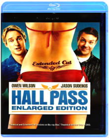
The Hangover
Todd PhillipsB001UV4XEWThey planned a Vegas bachelor party that they would never forget. Now they really need to remember what exactly went down! A baby? A tiger? Why is one of them missing a tooth? And most of all, where is the groom?! What the guys did while partying can't compare to what they must do sober in an outrageous caper that has them piecing together all their bad decisions from the night before— one hazy clue at a time. Director Todd Phillips (Old School) and an all-aces comedy cast tie one on... big time!
The Hangover Part II
Todd PhillipsB004EPZ06QPhil (Bradley Cooper), Stu (Ed Helms), Alan (Zach Galifi anakis) and Doug (Justin Bartha) travel to exotic Thailand for Stu's wedding. What could go wrong? Director Todd Phillips' explosively funny follow-up to his award-winning smash hit demonstrates that though what happens in Vegas may stay in Vegas, what happens in Bangkok can hardly be imagined!
The Hangover Part III
Todd PhillipsB008JFUOVIThe Wolfpack gets together for one last time in Las Vegas - the city where it all began. With no wedding and no bachelor party, what could possibly go wrong? Yet all hell breaks loose as the city crumbles in mayhem. Hangover Part III is the epic finale to the hilarious Hangover trilogy.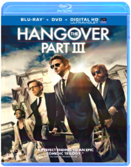
Harold & Kumar Go to White Castle / Harold & Kumar Escape From Guantanamo Bay
VariousB006H3MJCQTwo guys on a quest to satisfy their cravings for burgers find themselves on a hilarious all-night adventure as they run into one screwy obstacle after another.
A Very Harold & Kumar Christmas
Todd Strauss-SchulsonB006OFN0ESFollowing years of growing apart, Harold Lee (Cho) and Kumar Patel (Penn) have replaced each other with new friends and are preparing for their respective Yuletide celebrations. But when a mysterious package mistakenly arrive at Kumar’s door on Christmas Eve, his attempts to redirect it to Harold’s house ends with the “high grade” contents – and Harold’s father-in-law’s prize Christmas tree – going up in smoke. With his in-laws out of the house for the day, Harold decides to cover his tracks, rather than come clean. Reluctantly embarking on another ill-advised journey with Kumar, through New York City, their search for the perfect replacement tree takes them through party heaven – and almost blows Christmas Eve sky high.Harry Potter and the Sorcerer's Stone / Harry Potter and the Chamber of Secrets
Chris ColumbusB008UZCCCQIn Harry Potter and the Sorcerer's Stone Harry Potter finds out he is the orphaned son of two wizards and embarks on an amazing journey. During his first year at Hogwarts School of Witchcraft and Wizardry Harry learns he is destined for great things and discovers a Dark wizard is determined to destroy him. In Harry Potter and the Chamber of Secrets cars fly trees fight back and a house-elf comes with a warning for Harry at the start of his second year. Adventure and danger await when bloody writing on a wall announces: The Chamber of Secrets has been opened. To save Hogwarts will require all of Harry Ron and Hermione's magical abilities and courageHarry Potter and the Prisoner of Azkaban / Harry Potter and the Goblet of Fire
Alfonso Cuarón, Mike NewellB008UZ7N3EIn Harry Potter and the Prisoner of Azkaban Harry Ron and Hermione learn to handle a Hippogriff repel shape-shifting Boggarts and master the art of Divination during their third year at Hogwarts. Harry must also withstand soul-sucking Dementors outsmart a werewolf and deal with the truth about the escaped prisoner Sirius Black and his relationship to Harry and his parents. In Harry Potter and the Goblet of Fire Harry is mysteriously entered into the grueling Triwizard Tournament only to find himself in the cruel grasp of Lord Voldemort. Everything changes in year four when Harry Ron and Hermione face challenges beyond their imagining.Harry Potter and the Order of the Phoenix /Harry Potter and the Half-Blood Prince
David YatesB008UZ94H2In Harry Potter and the Order of the Phoenix Lord Voldemort is back but the Ministry of Magic tries to keep a lid on the truth. Ron and Hermione convince Harry to secretly train students for the wizarding war ahead. A terrifying showdown between good and evil awaits in year five prepare for battle! In Harry Potter and the Half-Blood Prince Lord Voldemort tightens his grip on both the Muggle and wizarding worlds as Dumbledore is intent upon preparing Harry for the approaching battle. Meanwhile romance blossoms for Harry Ron Hermione and their friends during their sixth year but danger lies ahead and Hogwarts may never be the same again.Harry Potter and the Deathly Hallows Part 1
David YatesB0064ORVCQBring the adventure of Harry Potter and the Deathly Hallows, Part 1 into your home in HD on Blu-ray 3D.Harry, Ron and Hermione set out on their perilous mission to track down and destroy the secret to Voldemort's immortality and destruction - the Horcruxes. On their own and on the run, the three friends must now rely on one another more than ever... but Dark Forces in their midst threaten to tear them apart. Meanwhile the wizarding world has become a dangerous place. The long-feared war has begun and the Dark Lord has seized control of the Ministry of Magic and even Hogwarts, terrorizing and arresting all who might oppose him. The Chosen One has become the hunted one as the Death Eaters search for Harry with orders to bring him to Voldemort... alive.
This pack also includes the 2D version of the film on standard Blu-ray, DVD and Ultraviolet Digital Copy.
Blu-ray Special Features (Presented in 2D):
- Maximum Movie Mode
- The Seven Harrys
- On The Green With Rupert, Tom, Oliver And James
- Dan, Rupert and Emma's Running Competition
- Additional Scenes
- Harry Potter and the Deathly Hallows, Part 1: Behind The Soundtrack
Note: To watch the 3D version of this movie, you need a 3D HDTV, compatible 3D glasses, a Blu-ray 3D player (or PlayStation 3) and a high-speed HDMI cable.

Harry Potter and the Deathly Hallows Part 2
David YatesB0064ORVCQBring the adventure of Harry Potter and the Deathly Hallows, Part 1 into your home in HD on Blu-ray 3D.Harry, Ron and Hermione set out on their perilous mission to track down and destroy the secret to Voldemort's immortality and destruction - the Horcruxes. On their own and on the run, the three friends must now rely on one another more than ever... but Dark Forces in their midst threaten to tear them apart. Meanwhile the wizarding world has become a dangerous place. The long-feared war has begun and the Dark Lord has seized control of the Ministry of Magic and even Hogwarts, terrorizing and arresting all who might oppose him. The Chosen One has become the hunted one as the Death Eaters search for Harry with orders to bring him to Voldemort... alive.
This pack also includes the 2D version of the film on standard Blu-ray, DVD and Ultraviolet Digital Copy.
Blu-ray Special Features (Presented in 2D):
- Maximum Movie Mode
- The Seven Harrys
- On The Green With Rupert, Tom, Oliver And James
- Dan, Rupert and Emma's Running Competition
- Additional Scenes
- Harry Potter and the Deathly Hallows, Part 1: Behind The Soundtrack
Note: To watch the 3D version of this movie, you need a 3D HDTV, compatible 3D glasses, a Blu-ray 3D player (or PlayStation 3) and a high-speed HDMI cable.
The Hateful Eight
Quentin TarantinoB01A53WR3YThe Hateful 8 is set 6 or 8 or 12 years after the Civil War in wintery Wyoming, and a blizzard is coming. Bounty Hunter John Ruth is trying to get his bounty, Ms. Daisy Domergue (Dah-mer-goo), to the town of Red Rock where she’s scheduled to be brought to justice. Along the way he and his wagon driver Olie pick up two strangers; another bounty hunter and former union soldier, Major Marquis Warren, and a former southern renegade who claims to be the new mayor of Red Rock, Chris Mannix. The impending storm has forced them to stop at Minnie’s Haberdashery, a stagecoach stopover on a mountain pass. When they arrive at Minnie’s, they are not greeted by the proprietor but by four strangers. As the storm takes over the mountainside cabin our eight travelers come to learn they may not make it to Red Rock after all…
The Heat
Paul FeigB00E8RK5OCOscarr Winner Sandra Bullock* and Oscarr Nominee Melissa McCarthy** team up in this outrageously funny comedy from the director of Bridesmaids, Paul Feig. Uptight FBI Special Agent Sarah Ashburn (Bullock) and foul-mouthed Boston cop Shannon Mullins (McCarthy) couldn't be more incompatible. But when they join forces to bring down a ruthless drug lord, they become the last thing anyone expected...buddies.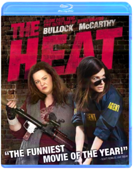
The Help
Tate TaylorB005J6LKVIThe #1 New York Times bestseller by Kathryn Stockett comes to vivid life through the powerful performances of a phenomenal ensemble cast. Led by Emma Stone, Academy Award-nominated Viola Davis (best supporting actress, Doubt, 2008), Octavia Spencer, and Bryce Dallas Howard, The Help is an inspirational, courageous, and empowering story about very different, extraordinary women in the 1960s South who build an unlikely friendship around a secret writing project - one that breaks society's rules and puts them all at risk. Filled with poignancy, humor, and hope - and complete with compelling, never-before-seen bonus features - The Help is a timeless, universal, and triumphant story about the ability to create change.
Hollow Man / Hollow Man 2
Paul Verhoeven, Claudio FähB00B04NIL8Extreme Sci-Fi Excitement!Hollow Man (Director's Cut)
...some of the most intriguing special effects I ve seen. - Roger Ebert
Starring: Elisabeth Shue, Kevin Bacon, Josh Brolin, Kim Dickens, Joey Slotnick, William Devane
What would you do if you were invisible? How far would you go? After years of experimentation, Dr. Sebastian Caine, a brilliant but arrogant and egotistical scientist working for the Defense Department, has successfully transformed mammals to an invisible state and brought them back to their original physical form. Determined to achieve the ultimate breakthrough, Caine instructs his team to move on to Phase III: human experimentation. Using himself as the first subject, the invisible Caine finds himself free to do the unthinkable.
Hollow Man 2
...a sci-fi guilty pleasure... - digitallyobsessed.com
Starring: Peter Facinelli, Laura Regan, Christian Slater
Christian Slater stars in the action-packed sequel to the boxoffice hit Hollow Man as a volunteer soldier/assassin who goes mad after he turns invisible. A driven Seattle detective and the molecular biologist he s been assigned to protect, find themselves on the run from an undetectable solider gone rogue as he destroys everything in his path in order to find the serum to save his life and punish the unscrupulous scientists and agents of the government responsible for this creation . . . Stars Christian Slater (True Romance, Interview with a Vampire), Peter Facinelli (The Scorpion King, TV s Fastlane) and Laura Regan (Unbreakable).
Home Alone / Home Alone 2: Lost In New York
Home Alone CollectionB004047XWUHome Alone:Eight-year-old Kevin McCallister (Macaulay Culkin) has become the man of the house, overnight! Accidentally left behind when his family rushes off on a Christmas vacation, Kevin gets busy decorating the house for the holidays. But he's not decking the halls with tinsel and holly. Two bumbling burglars are trying to break in, and Kevin's rigging a bewildering battery of booby traps to welcome them!
Home Alone 2: Lost in New York:
Kevin McCallister (Macaulay Culkin) is back! But this time he's in New York City with enough cash and credit cards to turn the Big Apple into his own playground! But Kevin won't be alone for long. The notorious Wet Bandits, Harry and Marv (Joe Pesci and Daniel Stern), still smarting from their last encounter with Kevin, are bound for New York too, plotting a huge holiday heist. Kevin's ready to welcome them with a battery of booby traps the bumbling bandits will never forget!

Horton Hears A Who
Horton Hears a WhoB005KR6O58One of Dr. Seuss' most beloved stories roars to life as never before in this enormous animated adventure that proves a person's a person no matter how small. A playful pachyderm named Horton becomes a reluctant hero when he discovers the microscopic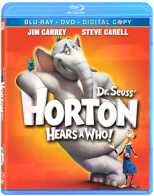
The Devil's Rejects
Rob ZombieB000HCO80EFrom the visionary mind of acclaimed musician Rob Zombie comes Lions Gate Films The Devil's Rejects the gritty violent follow-up to Zombie s smash horror hit House of 1000 Corpses. Written and directed by Zombie The Devil's Rejects reunites the homicidal members of the Firefly family tracing their bloody flight from an outlaw sheriff hell-bent on revenge.System Requirements:Run Time: 109 minsFormat: BLU-RAY DISC Genre: HORROR Rating: UNRATED UPC: 031398195078 Manufacturer No: 19507
How to Train Your Dragon
How to Train Your DragonB005MQWJPGA winner with audiences and critics alike, DreamWorks Animation's How To Train Your Dragon rolls fire-breathing action, epic adventure and laughs into a captivating and original story. Hiccup is a young Viking who defies tradition when he befriends one of his deadliest foes - a ferocious dragon he calls Toothless. Together, the unlikely heroes must fight against all odds to save both their worlds in this 'wonderful good-time hit!' - (Gene Shalit, Today).Howard the Duck
Willard HuyckB019OI2B32From executive producer George Lucas and the pages of Marvel Comics comes Howard the Duck, an unbelievably funny comedy about a fast-talking, cigar-chomping, beerloving duck from a parallel universe who crashes to Earth and somehow winds up in Cleveland. As Howard attempts to return to his own planet, he falls in love with rock singer Beverly Switzler (Lea Thompson, Back to the Future) and must battle an evil invader known as the Dark Overlord. This wacky, elaborately produced spoof of life, love, comic books and horror movies featuring out-of-this-world special effects is a treasure the whole family can enjoy.
In Time
Andrew NiccolB004LWZW7OEvery second counts in this sexy, stylish action-thriller starring Justin Timberlake and Amanda Seyfried. In a future where time is literally money and aging stops at 25, the only way to stay alive is to earn, borrow, steal or inherit more time. But when a poor, working-class man (Timberlake) is falsely accused of murder, he teams up with a beautiful heiress (Seyfried) and must figure out a way to bring down the corrupt system before their dwindling life clocks run out!
Inception
Christopher NolanB002ZG981EAcclaimed filmmaker Christopher Nolan directs an international cast in this sci-fi actioner that travels around the globe and into the world of dreams. Dom Cobb (Leonardo DiCaprio) is the best there is at extraction: stealing valuable secrets inside the subconscious during the mind’s vulnerable dream state. His skill has made him a coveted player in industrial espionage but also has made him a fugitive and cost him dearly. Now he may get a second chance if he can do the impossible: inception, planting an idea rather than stealing one. If they succeed, Cobb and his team could pull off the perfect crime. But no planning or expertise can prepare them for a dangerous enemy that seems to predict their every move. An enemy only Cobb could have seen coming.
The Incredibles
B004I654UIKnown to the world as superheroes, Mr. Incredible and Elastigirl, Bob Parr and his wife Helen were among the world's greatest crime fighters, saving lives and battling evil on a daily basis. Fifteen years later, they have been forced to adopt civilian identities and retreat to the suburbs to live "normal" lives with their three kids, Violet, Dash, and Jack-Jack. Itching to get back into action, Bob gets his chance when a mysterious communication summons him to a remote island for a top secret assignment. He soon discovers that it will take a super family effort to rescue the world from total destruction.Exploding with fun and all-new bonus features available only on Blu-ray, this spectacular 4-disc combo pack is edge-of-your-seat entertainment for everyone.

Inglourious Basterds
Quentin TarantinoB002T9H2L0Brad Pitt takes no prisoners in Quentin Tarantino’s high-octane WWII revenge fantasy Inglourious Basterds. As war rages in Europe, a Nazi-scalping squad of American soldiers, known to their enemy as “The Basterds,” is on a daring mission to take down the leaders of the Third Reich. Bursting with “action, hair-trigger suspense and a machine-gun spray of killer dialogue” (Peter Travers, Rolling Stone), Inglourious Basterds is “another Tarantino masterpiece” (Jake Hamilton, CBS-TV)!
Inside Llewyn Davis
B00GMV8KGWAn aspiring singer-songwriter navigates the 1960s folk-music scene in New York City's Greenwich Village.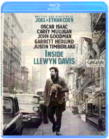
Inside Out
B00YCX7XMYWhen 11-year-old Riley moves to a new city, her Emotions team up to help her through the transition. Joy, Fear, Anger, Disgust and Sadness work together, but when Joy and Sadness get lost, they must journey through unfamiliar places to get back home.
Into the Blue
John StockwellB000FJGWBCNo Description Available.Genre: Feature Film-Action/Adventure
Rating: PG13
Release Date: 15-AUG-2006
Media Type: Blu-Ray
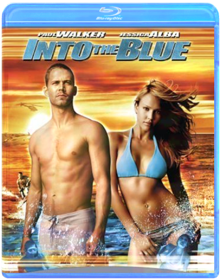
J. Edgar
Clint EastwoodB006OFN0BQLeonardo DiCaprio (Inception, Blood Diamond) stars as J. Edgar Hoover, head of the Federal Bureau of Investigation for nearly 50 years. Hoover was feared, admired, reviled and revered, a man who could distort the truth as easily as he upheld it. His methods were at once ruthless and heroic, with the admiration of the world his most coveted prize. But behind closed doors, he held secrets that would have destroyed his image, his career and his life. Oscar Winner Clint Eastwood (Gran Torino, Million Dollar Baby, Unforgiven) directs an all-star cast including Naomi Watts (21 Grams), Armie Hammer (The Social Network) and Oscar Winner Judi Dench (Shakespeare in Love) as Hoover’s overprotective mother.Jurassic Park
Steven SpielbergB00B4804KSStudio: Uni Dist Corp. (mca) Release Date: 04/23/2013 Rating: Pg13
The Lost World: Jurassic Park
Steven SpielbergB00005UNCLDirector Steven Spielberg takes us back to the scene of Jurassic Park in The Lost World: Jurassic Park, the blockbuster sequel with even more dinosaurs, action and Academy Award nominated visual effects. Four years since the disaster at Jurassic Park, two
Jurassic Park III
Joe JohnstonB00B1EGP44Adventure runs wild when renowned paleontologist Dr. Alan Grant (Sam Neill) agrees to accompany a wealthy couple (William H. Macy and T‚a Leoni) on an aerial tour of Isla Sorna, InGen's former breeding ground for prehistoric creatures. After they are terrifyingly stranded, Dr. Grant soon discovers that his hosts are not what they seem and the island's native inhabitants are smarter, faster, fiercer and more brutal than he ever imagined.
Jurassic World
Colin TrevorrowB00NYC65M8Steven Spielberg returns to executive produce the long-awaited next installment of his groundbreaking Jurassic Park series, Jurassic World, an epic action-adventure.
The Karate Kid
B003YUC9JIStudio: Sony Pictures Home Ent Release Date: 10/05/2010 Run time: 86 minutes Rating: Pg
Kick-Ass
Matthew VaughnB002ZG9846“How come nobody’s ever tried to be a superhero?” When Dave Lizewski – ordinary New York teenager and rabid comic-book geek – dons a green-and-yellow Internet-bought wetsuit to become the no-nonsense vigilante Kick-Ass, he soon finds an answer to his own question: because it hurts. But, over coming all the odds, the eager yet inexperienced Dave quickly becomes a phenomenon, capturing the imagination of the public. However, he’s not the only superhero out there – the fearless and highly trained father-daughter crime-fighting duo, Big Daddy and Hit-Girl, have been slowly but surely taking down the criminal empire of local mafioso Frank D’Amico. And, as Kick-Ass gets drawn into their no-holds-barred world of bullets and bloodletting with Frank’s son Chris, now reborn as Kick-Ass’s arch-nemesis Red Mist, the stage is set for a final showdown between the forces of good and evil, in which the DIY hero will have to live up to his name. Or die trying…
Kick-Ass 2
Jeff WadlowB00BEIYH6USelf-made superhero Kick-Ass (Aaron Taylor-Johnson) and sweet-faced, foul-mouthed assassin Hit Girl (Chlo‰ Grace Moretz) try to return to life as "normal" teenagers, but soon they are faced with their deadliest challenge yet. To seek revenge for his father's death, Red Mist (Christopher Mintz-Plasse) has re-invented himself as the leader of an evil league of super-villains. To defeat their new nemesis, Kick-Ass and Hit Girl must team up with a new wave of masked crusaders, led by the badass Colonel Stars and Stripes (Jim Carrey), in this battle of real-life villains and heroes.Kill Bill: Volume 1
Quentin TarantinoB004SIP8OIThe acclaimed fourth film from groundbreaking writer and director Quentin Tarantino (Pulp Fiction, Jackie Brown), Kill Bill: Vol. 1 stars Uma Thurman (Pulp Fiction), Lucy Liu (Charlie's Angels, Chicago), and Vivica A. Fox (Two Can Play That Game) in an astonishing, action-packed thriller about brutal betrayal and an epic vendetta! Four years after taking a bullet in the head at her own wedding, The Bride (Thurman) emerges from a coma and decides it's time for payback ... with a vengeance! Having been gunned down by her former boss (David Carradine) and his deadly squad of international assassins, it's a kill-or-be-killed fight she didn't start but is determined to finish! Loaded with explosive action and outrageous humor, it's a must-see motion picture event that has critics everywhere raving!Kill Bill: Volume 2
Quentin TarantinoB004SIP8SYWith this thrilling, must-see movie event, writer and director Quentin Tarantino (Pulp Fiction) completes the action-packed quest for revenge begun by The Bride (Uma Thurman) in Kill Bill: Vol. 1! Having already crossed two names from her Death List, The Bride is back with a vengeance and taking aim at Budd (Michael Madsen) and Elle Driver (Daryl Hannah), the only survivors from the squad of assassins who betrayed her four years earlier. It's all leading up to the ultimate confrontation with Bill (David Carradine), The Bride's former master and the man who ordered her execution! As the acclaimed follow-up to the instant classic Vol. 1 — you know all about the unlimited action and humor, but until you've seen Kill Bill: Vol. 2, you only know half the story!Killer Klowns From Outer Space
Cramer, Snyder, Nelson, VernonB008MU8ZNOFinally the truth about clowns is out! Beneath their smirky sinister grins and wildly patterned clothes are clever killers from out of this world. The "juxtaposition of their toy-store arsenal and malevolent intent proves to be a tasty combination" (Los Angeles Times) in this killer entertainment that will leave you fearing these big-top creatures for good. A spaceship - looking like a circus tent - lands in a field near a small town, signaling the attack of deviant, red-nosed, balloon-twisting psychos from another world who plan to annihilate mankind - by turning people into cotton candy! Luckily, the town's teen citizenry decides to fi ght back and teach the cosmic bozos a lesson. But these klowns are no klutzes, turning popcorn, peanuts and caramel corn into playful - but deadly - weapons of madcap destruction and mayhem!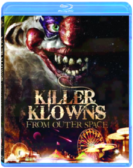
King Kong
Peter JacksonB001KZVQJIAcademy Award winning director Peter Jackson (The Lord of the Rings Trilogy) brings his sweeping cinematic vision to King Kong. Get ready for breathtaking action in this thrilling epic adventure about a legendary gorilla captured on a treacherous island and brought to civilization, where he faces the ultimate fight for survival.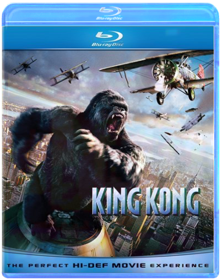
Legend of the Guardians-Owls of Ga'hoole
B004APVI1GAcclaimed filmmaker Zack Snyder (300, Watchmen) makes his animation debut with this fantasy adventure based on the beloved books by Kathryn Lasky. Young owl Soren marvels at his father's epic stories of the Guardians of Ga'Hoole, mythic winged warriors who fought a great battle to save all owl kind from the evil Pure Ones. When he and brother Kludd fall from their treetop home and into the talons of the Pure Ones, it's up to Soren to make a daring escape with the help of other brave owls. Together they seek the Great Tree, home of the Guardians - the only hope of defeating the Pure Ones and saving the owl kingdoms. The stellar voice cast includes Abbie Cornish, Miriam Margolyes, Helen Mirren, Sam Neill, Geoffrey Rush, Jim Sturgess and Hugo Weaving.
The Lego Movie
Phil Lord, Christopher MillerB00J11U4J6VideoTapeWorm.com says: In a world of Legos where ''Everything Is Awesome'', a ''perfectly average'' Lego man, voiced by Chris Pratt and dedicated to uniformity, finds himself declared ''extraordinary'' and is thus thrust into a quest to save the Lego universe. The expensive voice talent gets lost amid the breathtaking animation, hilarious puns, and painfully cheap humor, all of which builds to a fever pitch until halted by a brief live-action segment that sets up you up for an off-the-rails finale. We're embarrassed at how much we enjoyed this movie. A must-own.
Léon: The Professional
Luc BessonB002O5M4SAJean Reno, Gary Oldman, Natalie Portman and Danny Aiello star in Leon: The Professional, a go-for-broke thriller about a professional assassin whose work becomes dangerously personal. Calling himself a "cleaner", the mysterious Leon (Reno) is New York's top hitman. When his next-door neighbors are murdered, Leon becomes the unwilling guardian of the family's sole survivor - 12-year-old Mathilda (Natalie Portman), but Mathilda doesn't just want protection; she wants revenge. Training her in the deadly tricks of his trade, Leon helps her track the psychotic agent (Oldman) who murdered her family.
Lethal Weapon 1 - 4
VariousB00ERHGADIThis Blu-ray release includes the following titles, see individual titles for specs and details: Lethal Weapon (Blu-ray) Warner Bros. | 1987 | 110 min | Rated R Nearing retirement, a strait-laced LAPD detective gets teamed up with an unhinged cop, who, distraught after his wife's passing, has a death wish and takes unnecessary risks. The duo's first homicide case involves a young woman... Action / Comedy / Crime / Holiday / Thriller Lethal Weapon 2 (Blu-ray) Warner Bros. | 1989 | 114 min | Rated R | Region free | Sep 26, 2006 Riggs wows the pretties of a hotel spa before getting to Getz. Murtaugh receives bad bodywork news from an auto repairman after his beleaguered station wagon sees some Riggs-piloted street action. Plus, feisty Leo shares a newly... Action / Comedy / Crime / Thriller Lethal Weapon 3 (Blu-ray) Warner Bros. | 1992 | 118 min | Rated R | Region A (B, C untested) | No Release Date Martin Riggs finally meets his match in the form of Lorna Cole, a beautiful but tough policewoman. Together with Roger Murtaugh, his partner, the three attempt to expose a crooked former policeman and his huge arms racket. The... Action / Comedy / Crime / Thriller Lethal Weapon 4 (Blu-ray) Warner Bros. | 1998 | 127 min | Rated R | Region A (B, C untested) | No Release Date With personal crises and age weighing in on them, LAPD officers Riggs and Murtaugh must contend with a deadly Chinese crimelord trying to get his brother out of prison.
Lincoln
Steven SpielbergB009AMANH4From DreamWorks, Steven Spielberg directs two-time Academy Award(R) winner Daniel Day-Lewis (Best Actor, THERE WILL BE BLOOD, 2007, and MY LEFT FOOT, 1989) in LINCOLN — with an all-star ensemble cast including Sally Field, Tommy Lee Jones and Joseph Gordon-Levitt. This inspiring and revealing drama focuses on the 16th President's tumultuous final four months in office as this visionary leader pursues a course of action to end the Civil War, unite the country and abolish slavery. Complete with never-before-seen footage featuring Steven Spielberg and the cast, who take you deep inside the making of the movie, LINCOLN sheds light on a man of moral courage and fierce determination.
The Lion King
B004WDRT1YThe wait is over. For the first time ever, experience the majesty of Disney’s epic animated masterpiece as it roars off the screen and into your living room on Blu-ray and Blu-ray 3D. With a spectacular digital picture, spine-tingling high definition sound and immersive bonus features—you will feel the love for this critically acclaimed and universally beloved classic like never before.Embark on an extraordinary coming-of-age adventure as Simba, a lion cub who cannot wait to be king, searches for his destiny in the great “Circle of Life.” You will be thrilled by the breathtaking animation, unforgettable Academy Award®–winning music (1994: Best Original Score; Best Song, “Can You Feel The Love Tonight”) and timeless story. The king of all animated films reigns on Disney Blu-ray 3D—magic in a new dimension.

Living Fireplace: Volume 2
Stephen D. SpivakB002M153WKThe #1 Selling Living Fireplace DVD Just Got Even Better! The perfect accessory for all home theater and flat-panel HDTVs!Like a window to another world, the Living Fireplace Volume 2 Blu-ray from Screen Dreams transforms your TV into vibrant Yule Log fireplaces that crackle and pop! Set the mood and watch as it instantly enhances the ambience of any room decor. Ideal for everyday enjoyment or entertainment, Living Fireplace Volume 2 Blu-ray DVD adds a beautiful new dimension to your TV.
Screen Dreams is the original producer and leading distributor of DVD Screensavers for flat-panel HDTVs. They are changing the way TVs are used, at home and in business, by making blank TV screens beautiful with their unique DVD screensavers.
Features:
Proven success at Retail/Warehouse clubs.Content is superior - Best of Class.Available at all major distributors.Multiple Retail display options upon request.20 Total Unique Scenes.Filmed in HD ? 1080 x 720.Works on all Plasma, LCD, DLP, CRT, Projection, Home Theater HDTV's.Over 10+ classic music tracks, including: The First Noel, Twelve Days of Christmas, Joy To The World, Silent Night, We Wish You A Merry Christmas, Jingle Bells, and Deck the Halls.

Looper
Rian JohnsonB005LAII8KIn the futuristic action thriller Looper, time travel will be invented - but it will be illegal and only available on the black market. When the mob wants to get rid of someone, they will send their target 30 years into the past where a 'looper' - a hired gun, like Joe (Joseph Gordon-Levitt) - is waiting to mop up. Joe is getting rich and life is good - until the day the mob decides to 'close the loop,' sending back Joe's future self (Bruce Willis) for assassination. The film is written and directed by Rian Johnson and also stars Emily Blunt, Paul Dano, and Jeff Daniels.
The Lorax
Chris Renaud, Kyle BaldaB007OV9EYGThe imaginative world of Dr. Seuss comes to life like never before in this visually spectacular adventure from the creators of Despicable Me! Twelve-year-old Ted will do anything to find a real live Truffula Tree in order to impress the girl of his dreams. As he embarks on his journey, Ted discovers the incredible story of the Lorax, a grumpy but charming creature who speaks for the trees. Featuring the voice talents of Danny DeVito, Ed Helms, Zac Efron, Taylor Swift, Rob Riggle, Jenny Slate, and Betty White, Dr. Seuss' The Lorax is filled with hilarious fun for everyone!The Lord of the Rings
Peter JacksonB0026L7H20The Quest Is Over: All three extended versions in dazzling 1080p and DTS HD-MA 5.1 Audio. Deluxe set includes over 26 Hours of spellbinding behind-the- moviemaking material, including the Rare Costa Botes documentaries, on 15 discs.The Lord of the Rings: The Fellowship of the Ring Extended Edition: With the help of a courageous fellowship of friends and allies, Frodo embarks on a perilous mission to destroy the legendary One Ring.
The Lord of the Rings: The Two Towers Extended Edition: In the middle chapter of this historic movie trilogy, the Fellowship is broken but its quest to destroy the One Ring continues.
The Lord of the Rings: The Return of the King Extended Edition: The final battle for Middle-earth begins. Frodo and Sam, led by Gollum, continue their dangerous mission toward the fires of Mount Doom in order to destroy the One Ring.
Lost: Season 3
B000TFINY6No Description Available.Genre: Television
Rating: TV14
Release Date: 11-DEC-2007
Media Type: Blu-Ray
Lost: Season 4
B0018CWEZ8After Oceanic Air flight 815 tore apart in mid-air and crashed on a Pacific island, it s survivors were forced to find inner strength they never knew they had in order to survive. But they discovered that the island hold many secrets, including a mysterious smoke monster, polar bears, a strange French woman and another group of island residents known as The Others. The survivors have also found signs of those who came to the island before them, including a 19th century sailing ship called The Black Rock, the remains of an ancient statue, as well as bunkers belonging to the Dharma Initiative a group of scientific researchers who inhabited the island in the recent past.
Love Actually
B002LFAHBO“GET READY FOR FUN!”(Leah Rozen, People) with the “feel good movie of the year!” (Clay Smith, Access Hollywood) Love Actually is the ultimate romantic comedy from the makers of Bridget Jones’s Diary and Notting Hill. Funny, irresistible and heartwarming, an all-star cast (Hugh Grant, Liam Neeson, Colin Firth and Emma Thompson, to name a few!) will take you on a breathtaking tour of love’s delightful twists and turns. Fall under the spell of Love Actually and share the laughs and charm again and again.The Lucky One
Scott HicksB005S9EK1SWonderful story!
Machete
B004B63M1SFrom director Robert Rodriguez (Grindhouse, Sin City) comes an action- packed, cutting-edge serving of carnage asada...with killer deleted scenes that deliver more guns, more girls and more Machete action! Set up, double-crossed and left for dead, Machete (Danny Trejo) is an ass-kicking ex-Federale who lays waste to anything that gets in his path. As he takes on hitmen, vigilantes and a ruthless drug cartel, bullets fly, blades clash and the body count rises. Any way you slice it, vengeance has a new name—Machete.
Maggie
B00XI057UMAs the world narrowly recovers from a near apocalyptic virus, an infected teenage girl with only a precious few weeks to live must find the strength and bravery to face her fleeting mortality as her father struggles helplessly to protect her from the frightened town and keep the family together. This heartbreaking take on the zombie genre twists expectations and puts a human face on an inexplicable horror.Maleficent
Robert StrombergB00M4ADWTKExplore the untold story of Disney's most iconic villain in this wickedly fun twist on the classic SLEEPING BEAUTY. In an unforgiving mood after a neighboring kingdom threatens her forest, Maleficent (Angelina Jolie) places an irrevocable curse on the king's newborn daughter, the Princess Aurora. but as the child grows, Maleficent finds herself becoming fond of the girl. And as the conflict between the two realms intensifies, Maleficent realizes that Aurora may hold the key to peace in the land. Journey beyond the fairy tale in this soaring adventure that is "visually arresting, brilliantly designed" (Andrew Barker, Variety).
The Martian
B01866YS0M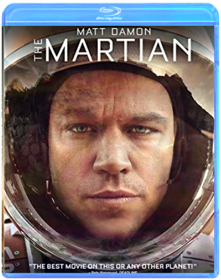
Captain America: The First Avenger
Joe JohnstonB005IZLPMECaptain America leads the fight for freedom in the action-packed blockbuster starring Chris Evans as the ultimate weapon against evil! When a terrifying force threatens everyone across the globe, the world’s greatest soldier wages war on the evil HYDRA organization, led by the villainous Red Skull (Hugo Weaving, The Matrix). Critics and audiences alike salute Captain America: The First Avenger as “pure excitement, pure action, and pure fun!” – Bryan Erdy CBS-TV
Agent Carter: Season 1
B0117ULG36Hold onto your hats as one fearless woman redefines heroism in the perilous arena of international espionage. With equal parts brains, beauty and brawn, Marvel’s Agent Carter on ABC ignites a firestorm of adventure, suspense and action-packed fun integral to the origins of the Marvel Cinematic Universe. In 1946, top SSR (Strategic Scientific Reserve) operative Peggy Carter (Hayley Atwell) is still reeling from the loss of Steve Rogers (a.k.a., Captain America). But now that the war is over, peacetime deals her yet another blow as she finds herself marginalized when the men return home from fighting abroad. Now her “missions” consist of fetching coffee and answering phones—until old acquaintance Howard Stark (Dominic Cooper) is framed for selling his deadliest weapons to the highest bidder, and he contacts the one person he trusts to clear his name: Agent Carter. Working as a secret double agent with the aid of Stark’s butler, Edwin Jarvis (James D’Arcy), Peggy must evade both her SSR colleagues and mysterious foreign assassins as she attempts to track down those responsible and dispose of the weapons before they inflict mass destruction. Relive all the glamour and excitement of Marvel’s Agent Carter: The Complete First Season with this must-own Blu-rayTM set that will transport you to a by-gone era full of modern-day thrills.
Iron Man
B001GAPC1KSuit up for action with Robert Downey Jr. in the ultimate adventure movie you’ve been waiting for, Iron Man! When jet-setting genius-industrialist Tony Stark is captured in enemy territory, he builds a high-tech suit of armor to escape. Now, he’s on a mission to save the world as a hero who’s built, not born, to be unlike any other. Co-starring Gwyneth Paltrow, Terrence Howard and Jeff Bridges, it’s a fantastic, high-flying journey that is "hugely entertaining" (Joe Morgenstern, The Wall Street Journal).
Iron Man 2
Jon FavreauB0021L8V1QGet the ultimate Iron Man 2 experience with this special edition loaded with bonus features that take you inside the suit, plus a digital copy of the film that you can watch anywhere, anytime! Now that Tony Stark’s superhero secret is revealed to the world, he must once again suit up in order to face his most dangerous enemy yet – but not without a few new allies of his own!
Thor
Kenneth BranaghB0055EAJ7AThe epic adventure Thor spans the Marvel universe from present-day Earth to the cosmic realm of Asgard. At the center of the story is The Mighty Thor, a powerful but arrogant warrior whose reckless actions reignite an ancient war. As a result, Thor is banished to Earth where he is forced to live among humans. When the most dangerous villain of his world sends its darkest forces to invade Earth, Thor learns what it takes to be a true hero.
The Avengers
Joss WhedonB001KVZ6HKMarvel makes cinematic history as it unites the super hero team-up of a lifetime. Iron Man (Robert Downey Jr.), the Hulk (Mark Ruffalo), Thor (Chris Hemsworth), and Captain America (Chris Evans) assemble together for the very first time ever in this epic, action-packed blockbuster alongside Black Widow (Scarlett Johansson), Hawkeye (Jeremy Renner), and Nick Fury (Samuel L. Jackson). Director Joss Whedon creates an unprecedented universe that has become a global phenomenon. Packed with spectacular visual effects, and exclusive bonus features, including Marvel's first-ever gag reel, never-before-seen Marvel short, and an interactive second screen experience, Marvel's The Avengers will blow your mind!Digital Copy Format: Standard Definition

Iron Man 3
Shane BlackB00D7NWTSIThe studio that brought you Marvel’s The Avengers unleashes the best Iron Man adventure yet with this must-own, global phenomenon starring Robert Downey Jr. and Gwyneth Paltrow.When Tony Stark/Iron Man finds his entire world reduced to rubble, he must use all his ingenuity to survive, destroy his enemy and somehow protect those he loves. But a soul-searching question haunts him: Does the man make the suit… or does the suit make the man? Featuring spectacular special effects, Marvel’s Iron Man 3 explodes with exclusive Blu-ray content.

Agents of S.H.I.E.L.D.: The Complete First Season
B00KMXQJ0AThe mind-blowing saga that began in MARVEL'S THE AVENGERS continues in ABC's action-packed series, MARVEL'S AGENTS OF S.H.I.E.L.D.: THE COMPLETE FIRST SEASON. In the wake of The Battle of New York, the world has changed forever. An extraordinary landscape of wonders has been revealed! In response, mysteriously resurrected Agent Phil Coulson assembles an elite team of skilled agents and operatives: Melinda May, Grant Ward, Leo Fitz, Jemma Simmons and new recruit/computer hacker Skye. Together, they investigate the new, the strange, and the unknown across the globe, protecting the ordinary from the extraordinary. But every answer unearths even more tantalizing questions that reverberate across the entire Marvel Cinematic Universe: Who is "The Clairvoyant"? What is Hydra's sinister master plan; what dark secret lies behind Skye's puzzling origins; and most importantly of all, who can be trusted? Start your collection and relive all 22 thrilling episodes as you unravel mysteries, discover cool gadgets and meet iconic Marvel characters. Then, achieve Level 7 clearance and delve deeper as you explore newly declassified bonus features with this must-own set!
Thor: The Dark World
Alan TaylorB00HERGM86Worlds collide when a powerful ancient enemy threatens to plunge the cosmos into eternal darkness. Experience this action-packed adventure featuring exclusive bonus content, including a gag reel, deleted scenes and a new Marvel short film available on Blu-ray 3D Combo Pack.
Captain America: The Winter Soldier
Anthony Russo, Joe RussoB00NFU3ZYUExclusive Steelbook packaging. All SteelBooks will be shipped in box with padding
Guardians of the Galaxy
James GunnB00N1JQ2UOFrom Marvel, the studio that brought you the global blockbuster franchises of Iron Man, Thor, Captain America and The Avengers, comes a new team—the Guardians of the Galaxy. An action-packed, epic space adventure, Marvel's Guardians of the Galaxy expands the Marvel Cinematic Universe into the cosmos, where brash adventurer Peter Quill finds himself the object of an unrelenting bounty hunt after stealing a mysterious orb coveted by Ronan, a powerful villain with ambitions that threaten the entire universe. To evade the ever-persistent Ronan, Quill is forced into an uneasy truce with a quartet of disparate misfits—Rocket, a gun-toting raccoon, Groot, a tree-like humanoid, the deadly and enigmatic Gamora and the revenge-driven Drax the Destroyer. But when Quill discovers the true power of the orb and the menace it poses to the cosmos, he must do his best to rally his ragtag rivals for a last desperate stand—with the galaxy's fate in the balance.
Avengers: Age of Ultron
Joss WhedonB00WAJ8QXCMarvel Studios unleashes the next global phenomenon in the Marvel Cinematic Universe — MARVEL'S AVENGERS: AGE OF ULTRON. Good intentions wreak havoc when Tony Stark (Robert Downey Jr.) unwittingly creates Ultron (James Spader), a terrifying A.I. monster who vows to achieve "world peace" via mass extinction. Now Iron Man, Captain America (Chris Evans), Thor (Chris Hemsworth) and The Hulk (Mark Ruffalo) — alongside Black Widow (Scarlett Johansson), Hawkeye (Jeremy Renner) and Nick Fury (Samuel L. Jackson) — must reassemble to defeat Ultron and save mankind...if they can! This action-packed adventure is a mind-blowing blast!
Ant-Man
Peyton ReedB016QIHOP8limited edition steel book blu ray 3d
Captain America: Civil War
Anthony & Joe RussoB01D9EUNBYThe most explosive clash to ever rock the Marvel Cinematic Universe ignites a firestorm of conflict in the game-changing epic, CAPTAIN AMERICA: CIVIL WAR. In the wake of collateral damage, government pressure to rein in the Avengers drives a deep wedge between Captain America (Chris Evans) and Iron Man (Robert Downey Jr.), causing a catastrophic rift that turns the two friends into bitter enemies. Against a backdrop of divided loyalties, their fellow Avengers must deal with the fallout. Pick a side in this spectacular adventure, packed with mind-blowing action and suspense.
The Ultimate Matrix Collection
Andy Wachowski, Larry WachowskiB000OPPBEQThe definitive 7-disc Blu-ray set, The Ultimate Matrix Collection features all three films in the trilogy together for the first time ever with a newly remastered picture and sound for The Matrix. Also included is the companion piece The Matrix Revisited and the best-selling The Animatrix, plus five entirely new Blu-ray discs packed solid with brand-new supplemental materials that encompass every aspect of the Matrix universe, including two new audio commentaries on each film, Enter the Matrix video game footage, 106 deep-delving featurettes/ documentaries and much more!Memento
Christopher NolanB000FJGWBMNo Description Available.Genre: Suspense
Rating: R
Release Date: 15-AUG-2006
Media Type: Blu-Ray
Men In Black
Barry SonnenfeldB007ATNHLIMen In Black follows the exploits of Agents K (Jones) and J (Smith), members of a top-secret organization established to monitor alien activity on Earth. The two MIB find themselves in the middle of a deadly plot by an intergalactic terrorist (Vincent D'Onofrio) who has arrived on Earth to assassinate two ambassadors from opposing galaxies. K and J face a simple imperative: track down the interloper or the Earth will be destroyed. It's all in a day's work for the Men In Black.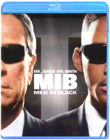
Men In Black II
Barry SonnenfeldB00198X0VSTommy Lee Jones and Will Smith are back in black as the scum-fighting super-agents Kay and Jay - regulators of all things alien on planet earth. Their latest mission: to save the world from a total intergalactic disaster! When a renegade Kylothian monster disguised as a lingerie model threatens thesurvival of the human race, the boys of the MIB get the call to step up and get busy. With their headquarters under siege and time running out, Agents Kay and Jay enlist the help of Frank the Pug anda posse of hard-living worms to help them kick some seriously sexy alien butt!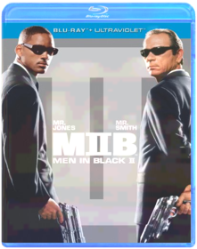
Men In Black 3
Barry SonnenfeldB008518MOWIn Men in BlackT 3, Agents J (Will Smith) and K (Tommy Lee Jones) are back... in time. J has seen some inexplicable things in his 15 years with the Men in Black, but nothing, not even aliens, perplexes him as much as his wry, reticent partner. But when K's life and the fate of the planet are put at stake, Agent J will have to travel back in time to put things right. J discovers that there are secrets to the universe that K never told him — secrets that will reveal themselves as he teams up with the young Agent K (Josh Brolin) to save his partner, the agency, and the future of humankind.
Minions
Pierre Coffin, Kyle BaldaB00NYC7PG8The Minions, breakout stars from "Despicable Me," are presented in an origin story that showcases their unpredictable personality and physicality, and pairs them with equally memorable human characters. As it turns out, Minions have existed since the beginning of time. They have evolved from single (yellow) cell organisms into the familiar beings we know, and they live for a collective purpose: to seek out and serve the most despicable master they can find. Academy Award winner Sandra Bullock will lead the voice cast of the human characters as Scarlett Overkill, the world's reigning super-villain of the 1960s.
The Mist
Frank DarabontB001AR0D4AFrom legendary frightmaster Stephen King and 3-time Oscar-nominated director Frank Darabont* (The Shawshank Redemption, The Green Mile) comes "one of the scariest King films since Stanley Kubrick's The Shining" (Tasha Robinson, The Onion A.V. Club). After a mysterious mist envelopes a small New England town, a group of locals trapped in a supermarket must battle a siege of otherworldly creatures...and the fears that threaten to tear them apart. Starring Thomas Jane (The Punisher) and Oscar winner* Marcia Gay Harden (Mystic River) in one of the year's most talked-about performances, The Mist is riveting, with "tension like an ever-tightening clamp" (Colin Covert, Minneapolis Star Tribune).
Moneyball
Bennett MillerB0060ZJ74OOakland A's general manager Billy Beane (Brad Pitt) challenges the system and defies conventional wisdom when his is forced to rebuild his small-market team on a limited budget. Despite opposition from the old guard, the media, fans and their own field manager (Philip Seymour Hoffman), Beane - with the help of a young, number-crunching, Yale-educated economist (Jonah Hill) - develops a roster of misfits…and along the way, forever changes the way the game is played.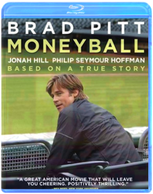
Monsters, Inc.
David Silverman, Pete DocterB0090SI460MONSTERS, INC., shattered every DVD-era home entertainment sales record when 11 million DVD/VHS copies of the film were sold during its first week of release. Only THE LION KING, released in the "pre-DVD" era, sold more units when it debuted on VHS in 1995.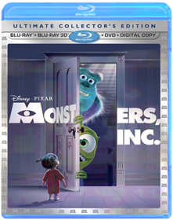
Monsters University
Dan ScanlonB00DMK6WN4Disney Pixar proudly presents the hilarious story of how two mismatched monsters met and became lifelong friends in a movie screaming with laughter and oozing with heart. Ever since college-bound Mike Wazowski (Billy Crystal) was a little monster, he’s dreamed of becoming a Scarer—and he knows better than anyone that the best Scarers come from Monsters University (MU). But during his first semester at MU, Mike’s plans are derailed when he crosses paths with hotshot James P. Sullivan, “Sulley” (John Goodman), a natural-born Scarer. The pair’s out-of-control competitive spirit gets them both kicked out of the University’s elite Scare Program. With their dreams temporarily dashed, they realize they will have to work together, along with an odd bunch of misfit monsters, if they ever hope to make things right. Get ready to party with hours of exclusive bonus extras, including an inside look at the world of monsters and the animated theatrical short film "The Blue Umbrella."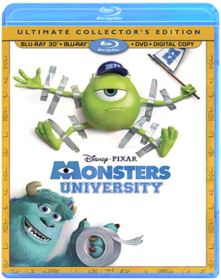
My Sister's Keeper
Jodi Picoult, Nick CassavetesB004XKVQLUWhat keeps a family together? Nick Cassavetes, the director of The Notebook, again demonstrates his sure hand with tales of deep human emotion in this inspiring film about a loving family challenged - and united - by a child's illness. Cameron Diaz, Abigail Breslin, Alec Baldwin and others in an exceptional cast bring sensitivity to the story of an 11-year-old girl, conceived to be a donor for her leukemia-stricken sister, and who finally demands the right to control her own body.
Natural Born Killers
Oliver StoneB000Q8QHK8The story of a husband and wife who are serial killers involved in a cross country killing spree that elevates them from fugitives into media celebrities.
Natural Born Killers: The Director's Cut
Oliver StoneB002AF4Y96Studio: Warner Home Video Release Date: 08/25/2009 Rating: Nr
New Year's Eve
Garry MarshallB004LWZW9MDirector/producer Garry Marshall brings together an stellar ensemble cast to celebrate love, hope, forgiveness, second chances and fresh starts, in intertwining stories told amidst the pulse and promise of New York City on the most dazzling night of the year.
The Nightmare Before Christmas
Nightmare Before ChristmasB00540G3G6Now more astonishing and spectacular than ever, The Nightmare Before Christmas jumps off the screen and into your living room, immersing your family in the jaw-dropping splendor and mind-boggling fun of Disney Blu-ray 3D!Bored with the same old scare and scream routine, Pumpkin King Jack Skellington longs to spread the joy of Christmas. But his merry mission puts Santa in jeopardy and creates a nightmare for good little boys and girls everywhere.
Experience Tim Burton and Henry Selick's uncanny tale as it comes vividly to life right before your eyes! This Blu-ray 3D combo pack includes four ways to watch: Blu-ray 3D, Blu-ray, DVD and Digital Copy. Disney Blu-ray 3D - magic in a new dimension.

Nine Inch Nails Live: Beside You in Time
Rob SheridanB000MM1GJKLIVE: BESIDE YOU IN TIME122 minutes total running time, 24 songs from the LIVE: With Teeth 2006 Tour, including: "The Hand That Feeds" "Only" "Closer" "Head Like A Hole" "Hurt" "Wish" "Terrible Lie" "March Of Pigs"
Additional features include 3 tracks live from rehearsals, music videos for "The Hand That Feeds" and "Only."
Plus still gallery and body of work.
Presented in 16x9 anamorphic widescreen DTS and Dolby Digital 5.1 surround sound
Office Space
B00384QHRU
Oldboy
Brolin, Jackson, Copley, OlsenB00GMV8IGOFrom director Spike Lee comes this chillingly dark tale of vengeance bursting with unforgettable twists and turns. Kidnapped and kept in solitary confinement for 20 years, Joe Doucett (Josh Brolin) has suddenly been set free without a word of explanation. Obsessed with finding those who imprisoned him, Doucett wreaks havoc upon his captors, unaware his freedom is part of a plan and his true punishment's about to begin. Starring Brolin, Elizabeth Olsen and Sharlito Copley.
The Original Christmas Classics Gift Set
Jules Bass, Arthur Rankin Jr.B003P3PQLMFour original holiday favorites make the perfect stocking stuffer for the young and the young at heart. Includes Rudolph the Red-Nosed Reindeer (Burl Ives. 1964/65 min.), Santa Claus is Comin' to Town (Fred Astaire, Mickey Rooney. 1970/55 min.), Frosty the Snowman (Jimmy Durante. 1969/30 min.) and Frosty Returns (Jonathan Winters. 1992/25 min.). Animated. 2 Discs. Color/NR.
Pacific Rim
Guillermo del ToroB00E3IZIM0When legions of monstrous creatures, known as Kaiju, started rising from the sea, a war began that would take millions of lives and consume humanity's resources for years on end. To combat the giant Kaiju, a special type of weapon was devised: massive robots, called Jaegers, which are controlled simultaneously by two pilots whose minds are locked in a neural bridge. But even the Jaegers are proving nearly defenseless in the face of the relentless Kaiju. On the verge of defeat, the forces defending mankind have no choice but to turn to two unlikely heroes a washed up former pilot (Charlie Hunnam) and an untested trainee (Rinko Kikuchi) who are teamed to drive a legendary but seemingly obsolete Jaeger from the past. Together, they stand as mankind's last hope against the mounting apocalypse
Paul
Greg MottolaB00CBT04HWSimon Pegg and Nick Frost (Hot Fuzz, Shaun of the Dead) reunite as sci-fi geeks taking a pilgrimage to America's UFO heartland. There they meet a smart-ass alien, Paul (voiced by Seth Rogen), who takes them on an insane road trip. As they struggle to return Paul home, the little green man might just take the outcasts from misfits to intergalactic heroes.
The Peanuts Movie
Steve MartinoB018WXLK0KDREAM BIG AND LAUGH ALONG with good ol Charlie Brown, Snoopy, Lucy, Linus and the rest of the beloved Peanuts gang as you ve never seen them before in a brand-new feature film from the imagination of Charles M. Schulz and the creators of Ice Age. Join everyone s favorite eternal optimist, Charlie Brown, as he embarks on a heroic quest, while his beagle pal Snoopy takes to the skies to pursue his archnemesis, the Red Baron. It s a hilarious and heartwarming adventure that proves every underdog has his day!Bonus Features:
Disc 1: Theatrical Feature Blu-ray 3D
Disc 2: Theatrical Feature Blu-ray
**6 Snoopy Snippets
** Better When I m Dancin Meghan Trainor Music & Lyric Videos
**You Never Grow Up Charlie Brown
**Snoopy s Sibling Salute
**Learn to Draw Snoopy, Woodstock and Charlie Brown
**Get Down with Snoopy and Woodstock Music Video
**Behind the Scenes of Better When I m Dancin
**Snoopy s Playlist
Disc 3: DVD
Digital HD

Pinocchio
Ben Sharpsteen;Hamilton S. LuskeB001ILFUDMCelebrate the 70th anniversary of Walt Disney's Pinocchio! The legendary masterpiece that inspired millions to believe in their dreams has reawakened with an all-new, state-of-the-art digital restoration that shines brilliantly on 2-disc DVD. Now, for the first time ever, the richly detailed animation, unforgettable award-winning music When You Wish Upon A Star and heartwarming adventure-filled story comes to life like never before. Plus, all-new dazzling bonus features transport you into Pinocchio's fantastic world! Join Geppetto's beloved puppet with Jiminy Cricket as his guide on a thrilling quest that tests Pinocchio's bravery, loyalty and honesty, virtues he must learn to become a real boy. The one and only Pinocchio will live on forever in the heart of anyone who has wished upon a star.Bonus Features include the Pinocchio Knows Trivia Challenge, an all-new Making Of Pinocchio, the Sweat Box, Walt Disney's Artistic Review Process, Disney View, Expand Your Viewing Experience Beyond The Original Aspect Ratio Of The Film, Cine-Explore, Disney BD-Live: Connect, Explore And Interact, all-new When You Wish Upon A Star; Music Video Performed By Meaghan Jette Martin, Pinocchio's Puzzles Game, 18 Puzzles In A Multi-Tiered Game, Pinocchio's Matter Of Facts Discover More About Pinocchio's World With Pop-Up Trivia, Never-Before-Seen Deleted Scenes, Alternate Ending
DAVE KEHR, NEW YORK TIMES
“The new “Pinocchio” looks magnificent, with a richness of color and a tight definition that evoke the theatrical experience.”
CHRIS NASHAWATY, ENTERTAINMENT WEEKLY
“You won't find a sweeter story or a tidier morality tale about the virtues of being ''brave, truthful, and unselfish.'' Grown-ups will eat up the commentaries and featurettes about Disney's band of merry-prankster animators, and kids can spend hours with the disc's interactive puzzles and Pop-Up Video-style factoids. You really couldn't ask for more.”
KENNETH BROWN, BLU-RAY.COM
“Simply put, the 3-disc Blu-ray edition of Pinocchio should already have a comfortable home on every true filmfan's shelves. Buy it without any further delay.”
HARRY KNOWLES, AINTITCOOL.COM
“An absolute must for animation lovers!”

Pirates of the Caribbean: The Curse of the Black Pearl
B000N6UERASet sail for adventure with Disney’s Pirates Of The Caribbean: The Curse Of The Black Pearl on Blu-ray’s high definition disc. This revolutionary new format brings the thrilling tale of the high seas to life like never before! Legendary pirate Captain Jack Sparrow and young sword-maker Will Turner join forces to rescue a governor’s daughter from a band of bloodthirsty fellow pirates. Only Jack knows the dark secret the crew of the Black Pearl harbors. See the glint of each sword in eye-popping 1080p, and experience every cannon blast with spectacular 5.1 48kHz, uncompressed audio. It’s entertainment quality so intense, you’ll almost feel the sea mist in the air with the magic of Blu-ray high definition.Pirates of the Caribbean: Dead Man's Chest
Gore VerbinskiB000N6UERUCharming rogue pirate Captain Jack Sparrow (Johnny Depp) is back to wreak hilarious havoc on the high seas on Blu-ray Disc®! Also starring Orlando Bloom and Keira Knightly, this swashbuckling joyride will amaze you as never before in this spectacular, "see-worthy" format! Jack’s got a blood debt to pay: he owes his soul to Davy Jones, ghostly Ruler of the Deep. Get caught up in the whirlpool of Jack’s misadventures as he schemes to avoid eternal damnation by seizing the fabled Dead Man’s Chest. Thrill to the nonstop action, devilish humor, monstrous sea creatures and breathtaking black magic presented in astonishing 1080p and thunderous 5.1 48 kHz, 24-bit uncompressed audio. Experience oceans of fun with Blu-ray™ High Definition.Pirates of the Caribbean: At World's End
Gore VerbinskiB000U7UWVAJust when he s needed most, Captain Jack Sparrow (Johnny Depp), that witty and wily charmer of a pirate, is trapped on a sea of sand in Davy Jones Locker. In an increasingly shaky alliance, Will Turner (Orlando Bloom), Elizabeth Swann (Keira Knightley) and Captain Barbossa (Geoffrey Rush) begin a desperate quest to find and rescue him. Captain Jack s the last of the nine Pirate Lords of the Brethren Court who must come together united in one last stand to preserve the freedom-loving pirates way of life. From exotic Singapore, to World s End and beyond, from Shipwreck Island, to a titanic battle, this adventure s filled with over-the-edge action, irreverent humor and seafaring myth and magic. Everything has led to this twisting, turning, wild swashbuckling ride in this final chapter of the Pirates Of The Caribbean trilogy.Pirates of the Caribbean: On Stranger Tides
Johnny Depp, Rob MarshallB005WXOOSOPirates of the Caribbean On Stranger Tides 5 Disc LIMITED EDITION (Blu-ray 3D, Blu-ray 2 Disc, DVD, Digital Copy) Includes Lego Mini Black PearlPixar Short Films Collection: Volume 1
Bud Luckey, Alvy Ray Smith, Andrew Jimenez, Brad Bird, Dan ScanlonB000V1Y446Disney and Pixar invite you to discover these masterpieces of storytelling from the creative minds that brought you TOY STORY MONSTERS INC. FINDING NEMO and many more — now on Blu-ray Disc(R) for the ultimate high definition experience! With revolutionary animation unforgettable music and characters you love these dazzling short films have changed the face of animation and are sure to delight people of all ages for years to come. Experience them now — for the first time on Disney Blu-ray — in remarkable clarity that boasts up to six times the picture quality* and spectacular audio enhancement. Disney Blu-ray is magic in High Definition.*May vary with display.System Requirements:Running Time: 54 Mins. Genre: ANIMATION/ADULT SWIM Rating: NR UPC: 786936737820 Manufacturer No: 05460100
Pixar Short Films Collection Volume 2
Pixar Short Films CollectionB0091NWBC2Disney and Pixar present an incredible new collection of 12 short films, featuring multiple Academy Award(R) nominees (Best Short Film, Animated: "Presto," 2008; "Day & Night," 2010; "La Luna," 2011) and a host of family favorites. Join the celebration of imagination with this must-own collection, packed with unforgettable animation, fantastic stories and captivating characters. Plus, enjoy all-new extras that share how Pixar's storied talent got their start — including student films from acclaimed directors John Lasseter, Andrew Stanton and Pete Docter!
Pixels
Chris ColumbusB012DWS874When aliens misinterpret video-feeds of classic arcade games as a declaration of war against them, they attack the Earth, using the games like PAC-MAN, Donkey Kong, Galaga, Centipede and Space Invaders as models for their various assaults. President Will Cooper (Kevin James) has to call on his childhood best friend, ’80s video game champion Sam Brenner (Adam Sandler) to lead a team of old-school arcaders (Peter Dinklage and Josh Gad) to defeat the aliens and save the planet.
Planes
B00DMKFN34The world of Cars takes flight in Planes, Disney's high-flying animated comedy revved up with action and adventure. Join Dusty, a crop duster with sky-high dreams and a once-in-a-lifetime chance to take on the world's fastest flyers in the greatest air race ever. Dusty has a huge heart but two big problems...he's not exactly built for speed, plus he's afraid of heights. His courage is put to the ultimate test as this unlikely hero aims higher than he ever imagined. With a little help from his friends, Dusty finds the courage to be more than he was built for—and the inspiration to soar.
Planet Earth: The Complete BBC Series
B000MRAAJMWith an unprecedented production budget of $25 million, and from the makers of Blue Planet: Seas of Life, comes the epic story of life on Earth. Five years in production, over 2,000 days in the field, using 40 cameramen filming across 200 locations, shot entirely in high definition, this is the ultimate portrait of our planet. A stunning television experience that captures rare action, impossible locations and intimate moments with our planet's best-loved, wildest and most elusive creatures. From the highest mountains to the deepest rivers, this blockbuster series takes you on an unforgettable journey through the daily struggle for survival in Earth's most extreme habitats. Planet Earth takes you to places you have never seen before, to experience sights and sounds you may never experience anywhere else.Planet of the Apes Legacy Collection
B005FHWWXQPLANET OF THE APESA bewildered astronaut (Charlton Heston) crash-lands on a strange planet ruled by apes who use a primitive race of humans for experimentation and sport.
BENEATH THE PLANET OF THE APES
A daring rescue mission leads to a subterranean city where mutant humans worship a weapon capable of destroying the entire planet.
ESCAPE FROM THE PLANET OF THE APES
Two futuristic simians who have traveled to present-day Earth enjoy celebrity status—until a government plot forces them to run for their lives!
CONQUEST OF THE PLANET OF THE APES
Apes have been domesticated and trained as pets and personal servants — until their continual mistreatment leads to a spectacular revolt.
BATTLE FOR THE PLANET OF THE APES
In the final Apes chapter, an idyllic society of man and ape is threatened by both a militant gorilla and a tribe of still-intelligent mutant humans.
Planet of the Apes
B00A2JB0GCNo Description Available.Genre: Science Fiction
Rating: PG13
Release Date: 13-FEB-2007
Media Type: Blu-Ray
Rise of the Planet of the Apes
Rupert WyattB004LWZW4WRise of the Planet of the Apes is a revolution; an action-packed epic featuring stunning visual effects and creatures unlike anything ever seen before. At the story's heart is Caesar (Andy Serkis), a chimpanzee who gains human-like intelligence and emotions from an experimental drug. Raised like a child by the drug's creator (James Franco), Caesar ultimately finds himself taken from the humans he loves and imprisoned. Seeking justice, Caesar assembles a simian army and escapes — putting man and primate on a collision course that could change the planet forever.
Dawn of the Planet of the Apes
B00QHOJ428A war begins to brew between man and ape in this sequel to the 2011 hit Rise of the Planet of the Apes. It's been ten years since the Simian Flu wiped out most of humanity, and somewhere deep in the woods outside of San Francisco, Caesar (voice and performance capture by Andy Serkis) and his primate companions have established a thriving village built on the principles of peace and community. Shortly after welcoming a baby brother into the family, Caesar's son Blue Eyes (Nick Thurston) is walking through the forest with his friend Ash (Doc Shaw) when they cross paths with a human named Carver (Kirk Acevedo), who impulsively draws his gun and shoots Ash at the first sign of aggression. As it turns out, Carver is part of a human expedition led by Malcolm (Jason Clarke), who, along with the rest of his crew, races to Carver's side just as Caesar and the rest of the apes answer Blue Eyes' desperate call for help. An enraged Caesar drives the humans away after realizing they are no longer a threat, and decides to dispatch a small crew to follow them rather than yield to the pleas of his aggressive advisor Koba (Toby Kebbell) to launch an all-out attack. Instead, he decides to show the apes' strength by amassing outside of the humans' makeshift community at the base of an unfinished tower, making it unmistakably clear that the two species should remain apart. Meanwhile, the point of the human excursion was to get a dormant dam running again in order to power their community, which will soon be thrust into darkness should they fail to take action. Convinced that he could strike a truce with Caesar that would allow the humans to repair the dam, which is located on the apes' land, Malcolm gets permission from human leader Dreyfus (Gary Oldman) to set out on his mission. Incredibly, thanks to the help of his girlfriend Ellie (Keri Russell), his son Alexander (Kodi Smit-McPhee), and a few other key allies, Malcolm succeeds.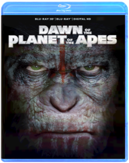
The Polar Express
Chris Van Allsburg, Robert ZemeckisB00447G29SAll the enchantment, all the adventure, all the joy of The Polar Express – all in astonishing true Blu-ray 3D! This instant holiday classic filmed in performance-capture animation by Robert Zemeckis and starring Tom Hanks now delivers a whole new cargoload of immersive Blu-ray™ magic. Reach out and grab your ticket as the exciting next dimension in home entertainment transports you to the North Pole in amazing fashion!
Predator
PredatorB00G0OHMUG
Predator / Predator 2
John McTiernanB007PM212QContains the films Predator and Predator 2.
Predators
Nimród AntalB0040YFR1YRobert Rodriguez presents Predators, a bold new chapter in the Predator universe. Adrien Brody stars as Royce, a mercenary who reluctantly leads a group of elite warriors mysteriously brought together on a jungle planet. But when these cold-blooded human “predators” find themselves in all-out war against a new breed of alien Predators, it’s the ultimate showdown between hunter and prey.
The Princess Bride
Rob ReinerB008FD36ICIn honor of Princess Bride’s 25th Anniversary fans get to vote on the cover art for the new 25th Anniversary Blu-ray! Visit Facebook to vote until July 11th and the winner will be announced July 12th.Prometheus
Ridley ScottB0085Z8F4ALegendary director Ridley Scott (Alien, Blade Runner) returns to his sci-fi origins in this epic adventure bursting with spectacular action and mind-blowing visual effects. A team of scientists and explorers travels to the darkest corners of the universe searching for the origins of human life. Instead they find a dark, twisted world that hides a terrifying threat capable of destroying them...and all mankind!
Pulp Fiction
Quentin TarantinoB001AQT0Z4“Nothing less than a cultural phenomenon” (Moviemaker Magazine), Quentin Tarantino’s PULP FICTION has been hailed by critics and audiences worldwide as a film that redefined cinema. Tarantino delivers an unforgettable cast of characters – including a pair of low-rent hit men (John Travolta and Samuel L. Jackson), their boss’s sexy wife (Uma Thurman) and a desperate prizefighter (Bruce Willis) – in a wildly entertaining and exhilarating blend of crime-thriller-drama-comedy that is completely original and entirely unforgettable. Nominated for 7 Academy Awards® including Best Picture and Best Director, PULP FICTION packs the punch like an adrenaline shot to the heart.
Puss in Boots
Puss in BootsB006P3HXZGPuss in BootsYou loved him in Shrek…now see where the one-and-only swashbuckling feline found his fame – and a very big pair of boots – in the “hilariously funny” (Associated Press) animated epic! Lover, fighter and outlaw Puss In Boots (Antonio Banderas) is off on the adventure of his nine lives as he teams up with Kitty Softpaws (Salma Hayek) and Humpty Dumpty (Zach Galifianakis) for the ultimate showdown with the notorious Jack and Jill (Billy Bob Thornton and Amy Sedaris). Here’s the true story of The Cat, The Myth, The Legend – Puss In Boots!
Puss in Boots: The Three Diablos
As the dust from his latest adventure begins to settle, Puss in Boots finds himself at a crossroads between two destinies – hero and outlaw. When a desperate princess hires Puss to recover her stolen ruby, he is reluctantly partnered with the three little kittens. Adorable. Fuzzy. Deadly. The minute the mittens are off, these Three Diablos wreak havoc on Puss' mission to recover the stolen ruby from the notorious French thief, The Whisperer. Can Puss tame these three little devils in time to recover the ruby?
Disc One (Blu-ray 3D)
- Puss in Boots (3D)
- Puss in Boots: The Three Diablos (3D)
Disc Two (Blu-ray)
- Puss in Boots (HD)
- Puss in Boots: The Three Diablos (HD)
Disc Three (DVD)
- Puss in Boots movie
- Digital Copy

Quantum of Solace
Marc ForsterB001PPLIFUStudio: Tcfhe/mgm Release Date: 03/24/2009 Run time: 107 minutes Rating: Pg13
Rambo First Blood / First Blood Part II / Rambo III
B0015XHP4KBox set includes:First Blood
He never fought a battle he couldn't win—except the conflict raging within his own soul.Academy Award-nominee Sylvester Stallone stars as war hero John Rambo. An ex-Green Beret haunted by memories of Vietnam, he was once the perfect killing machine. Now he's searching for peace, but finds instead an over-zealous, small-town sheriff who's spoiling for a fight. All hell breaks loose when an unjustly imprisoned Rambo escapes and becomes the target of a massive manhunt. Now he must use all his cunning, combat skills and weapons training to stay alive and outwit his pursuers. Co-starring Brian Dennehy and Richard Crenna, First Blood is an explosive action-thriller that will keep you on the edge of your seat until the final, powerful frame.
Rambo: First Blood Part II
He's back! Superstar Sylvester Stallone is John Rambo, the ultimate action hero, in this explosive Oscar(r) -nominated sequel to First Blood that boasts a riveting screenplay by Sylvester Stallone and James Cameron (Titanic). Although the Vietnam War is officially over, Rambo remains the perfect fighting machine. But his survival skills are tested with a vengeance on a top-secret mission that takes him back to the jungles of Vietnam in search of American POWs. For when Rambo is double-crossed, this "expendable" hero, armed with just a bow, arrows and knife, must defeat savage enemies equipped with deadly firepower.
Rambo III
The battle rages on as superstar Sylvester Stallone detonates the third blast in the action-packed Rambo series. Combat has taken its toll on John Rambo (Stallone), but he has finally begun to find inner peace inside a monastery — until his friend and mentor Col. Sam Trautman (Richard Crenna) shows up to ask for his help on a top-secret mission in Afghanistan. A war-weary Rambo declines, but when Trautman is captured, Rambo erupts into a one-man firestorm to rescue his former commanding officer and decimate the enemy. It's an intense, pulse- pounding adventure that boasts unrelenting action and suspense from start to finish!

Rambo
Sylvester StalloneB0015XHP2WThe next chapter finds Rambo recruited by missionaries to protect them during a humanitarian aid effort on behalf of the persecuted Karen people of Burma. After the missionaries are taken prisoner by Burmese soldiers, Rambo gets a second impossible job: rescue the missionaries in the midst of a civil war.Ratatouille
Brad BirdB000VBJEFKNo Description Available.Genre: Feature Film Family
Rating: G
Release Date: 6-NOV-2007
Media Type: Blu-Ray

RED
B00G4DPOA8RED (WS/MOVIE ONLY/BLU-RAY)RED (WS/MOVIE ONLY/BLU-RAY) ACTION/ADVENTURE

Reservoir Dogs
Quentin TarantinoB000KX0ISGA POLICE DETECTIVE IS IN CHARGE OF THE INVESTIGATION OF A BRUTALMURDER, IN WHICH A BEAUTIFUL AND SEDUCTIVE WOMAN COULD BE INVOLVED.
Resident Evil
Paul W.S. AndersonB000XJ5TOKNo Description Available.Genre: Feature Film-Action/Adventure
Rating: R
Release Date: 1-JAN-2008
Media Type: Blu-Ray
Resident Evil: Apocalypse
Alexander WittB000EZ7ZZEAfter narrowly escaping the horrors of the underground Hive facility, Alice (Milla Jovovich) is quickly thrust back into a war raging above ground between the living and the Undead. As the city is locked down under quarantine, Alice joins a small band of elite soldiers, led by Valentine and Carlos, enlisted to rescue the missing daughter of Dr. Ashford, the creator of the mutating T-virus. It's a heart-pounding race against time as the group faces off against hordes of blood- thirsty zombies, stealthy Lickers, mutant canines andthe most sinister foe yet. Written and produced by director of Resident Evil, Paul W.S. Anderson (Alien Vs. Predator) and directed by Alexander Witt.
Resident Evil: Extinction
B000YPUFA6Milla Jovovich is back in the third chapter of the hugely successful Resident Evil franchise! This action-packed horror film is set in the Nevada desert and filled with intense special effects and more zombie terror! Las Vegas means fun in the sun. Well, at least the sun is still there. Except for a few rusting landmarks, it looks pretty much like the rest of the desert - or the whole country, for that matter. The crowds are now flesh-eating zombies: the mass undead, the oozing, terrifying sludge of what remains. Here, the newly upgraded Alice, along with her crew (Oded Fehr, Mike Epps, Ali Larter, Ashanti) will make a final stand against evil - with one goal: to turn the undead dead again.Beyond Resident Evil: Extinction
Widescreen Special Edition
Wii Video Game
Resident Evil: Apocalypse on DVD
Stills from Resident Evil: Extinction (click for larger image)
Resident Evil: Afterlife
Paul W. S. AndersonB002ZG98UKThe fourth installment of the hugely successful Resident Evil franchise, Resident Evil: Afterlife is again based on the wildly popular video game series, and will this time be presented in 3-D. In a world ravaged by a virus infection, turning its victims into the Undead, Alice (Milla Jovovich), continues on her journey to find survivors and lead them to safety. Her deadly battle with the Umbrella Corporation reaches new heights, but Alice gets some unexpected help from an old friend. A new lead that promises a safe haven from the Undead takes them to Los Angeles, but when they arrive the city is overrun by thousands of Undead - and Alice and her comrades are about to step into a deadly trap.
Resident Evil: Retribution
Paul W.S. AndersonB009MO5G90The Umbrella Corporation’s deadly T-virus is spreading across the globe, transforming ordinary people into legions of undead. Headed for extinction, the human race has just one hope: Alice (Milla Jovovich). She’s on a mission, fighting her way through cities and across continents, all inside Umbrella's prime research facility. Old friends become new enemies as she battles to escape and discovers that everything that she believes may not even be true.
Resident Evil: Damnation
Makoto KamiyaB008H6GH8IUnited States Special agent Leon S. Kennedy sneaks into a small Eastern European country to verify rumors that Bio Organic Weapons (B.O.W.s) are being used in war. Right after his infiltration, the US government orders him to leave immediately. Determined to uncover the truth, Leon ignores the order and enters the battlefield to end the chain of tragedies caused by the B.O.W.s.Resident Evil: Degeneration
Makoto KamiyaB001I9XOQ4A zombie attack brings chaos to Harvardville Airport. Leon S. Kennedy and Claire Redfield who fought the sinister Umbrella Corporation during the Raccoon City tragedy 7 years ago, are back. In high-octane Resident Evil style, they're ready to battle a rogue warrior who is seeking revenge after his family was killed in Raccoon City. The deadly G-Virus is unleashed and a new mutated monster goes on the rampage. Will Claire and Leon be able to terminate the virus before history repeats itself?Riddick Collection
David Twohy, Peter ChungB004GSVX5SJourney to a remote, hostile planet with a group of marooned passengers who learn that escaped convict Riddick isn't the only thing they have to fear in Pitch Black. Then, see him battle ruthless soldiers of fortune and vicious creatures in renowned animator Peter Chung's The Chronicles of Riddick: Dark Fury. And finally, Riddick finds himself humanity's unlikely champion in the special effects-fueled The Chronicles of Riddick. Join Riddick in three times the action, three times the adrenaline and three times the adventure as the Riddick Blu-ray Collection makes complete one of the greatest sci-fi epics of all time!
Rocky Balboa
Sylvester StalloneB000N3AXQUA FORMER HEAVYWEIGHT BOXING CHAMPION, KNOWN & RENOWN THROUGHOUT THE WORLD FOR GOING THE DISTANCE, ROCKY FINDS A NEW VENTURE:GIVING BACK TO HIS COMMUNITY. WHEN HE'S OFFERED A SHOT AT THE TITLE, IT'S ONE LAST HURRAH THAT ROCKY WILL NEVER FORGET.
Safe Haven
B00A7ZHDOOBRAND NEW FACTORY SEALED. SHIPS OUT THE NEXT DAY BUSINESS DAY AFTER ORDERING. ENJOY!Safe House
Daniel EspinosaB005LAIGSCTobin Frost (Oscar winner Denzel Washington), one of the CIA’s most dangerous traitors, resurfaces in South Africa after eluding capture for almost a decade. During his interrogation, the safe house he’s being held in is attacked by brutal mercenaries forcing rookie agent, Matt Weston (Ryan Reynolds) to take the infamous Frost on the run. As the masterful manipulator toys with his reluctant protégé, shaking the young operative’s morality and idealism, the unlikely allies must fight to stay alive long enough to uncover who wants them both dead. Packed with intense action and thrilling suspense, Safe House takes you on a deadly ride through a covert world where no one and no place is ever safe.
Saw
B000EWBKLCSAW - Blu-Ray Movie
Saw II
B000H5TVKSJigsaw the diabolical criminal who captured the imagination of horror fans in the 2004 hit Saw returns in this equally bloody sequel. Eric Matthews (Donnie Wahlberg) is a police detective who after discovering the aftermath of a particularly gruesome murder is convinced that Jigsaw (Tobin Bell) is up to his ugly tricks again. Matthews's hunch turns out to be correct but the master criminal proves to be disconcertingly easy to capture. As it happens Jigsaw is eager to be put behind bars in order to throw the authorities off his trail as he once again punishes people who in his eyes have transgressed the boundaries of acceptable moral behavior. But instead of trapping two people in a filthy dungeon where they must engage in a terrible contest in order to win their freedom eight people have been locked away by Jigsaw and they must torture their bodies and minds to achieve the terrible justice Jigsaw seeks. Saw II was written by Leigh Whannell who also scripted the first film. ~ Mark Deming All Movie Guide System Requirements:Run Time: 102 minsFormat: BLU-RAY DISC Genre: HORROR Rating: R UPC: 031398203452 Manufacturer No: 20345
Saw III
Darren Lynn BousmanB000LPR9ZSJigsaw has disappeared. With his new apprentice Amanda (Shawnee Smith), the puppet-master behind the cruel, intricate games that have terrified a community and baffled police has once again eluded capture and vanished. While city detectives scramble to locate him, Doctor Lynn Denlon (Bahar Soomekh) and Jeff (Angus Macfadyen) are unaware that they are about to become the latest pawns on his vicious chessboard
Saw IV
Darren Lynn BousmanB001053038When SWAT Commander Rigg is abducted and thrust into a game, the last officer untouched by Jigsaw has but ninety minutes to overcome a series of demented traps and save an old friend or face the deadly consequences. Unrated version containing scenes not seen in theaters.
Saw V
David HacklB001LPWGC8Blu-Ray pressing. In the fifth installment of the SAW franchise, Detective Hoffman is seemingly the last person alive to carry on the Jigsaw legacy. But when his secret is threatened, he must go on the hunt to eliminate all loose ends.
Saw VI
Kevin GreutertB00275EHGESpecial Agent Strahm is dead, and Detective Hoffman has emerged as the unchallenged successor to Jigsaw’s legacy. However, when the FBI draws closer to Hoffman, he is forced to set a game into motion, and Jigsaw’s grand scheme is finally understood.
Seven / Copycat / Taking Lives
VariousB00634ML5ESerial homicide keeps viewers on the edge of their seats with this thrilling collection that includes "Se7en" (Morgan Freeman, Brad Pitt. 1995/127 min.), "Copycat" (Sigourney Weaver. 1995/123 min.) and "Taking Lives" (Ethan Hawke. 2004/103 min.) Color/NR.
Seven Psychopaths
Martin McDonaghB007REV4PMA struggling screenwriter inadvertently becomes entangled in the Los Angeles criminal underworld after his oddball friends kidnap a gangster's beloved Shih Tzu.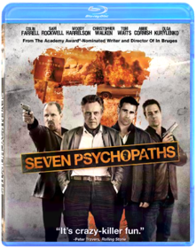
The Shawshank Redemption
Frank DarabontB000Q67876A prominent banker unjustly convicted of murder spends many years in the Shawshank prison. He is befriended by a convict who knows the ropes and helps him to cope with the frightning realities of prison life.
Shrek
ShrekB00645LFA4You've never met a hero quite like Shrek, winner of the first Academy Award r for Best Animated Feature. The endearing ogre sparked a motion picture phenomenon and captured the world's imagination with the Greatest Fairy Tale Never Told! Relive every moment of Shrek's (Mike Myers) daring quest to rescue the feisty Princess Fiona (Cameron Diaz) with the help of his loveable loudmouthed Donkey (Eddie Murphy) and win back the deed to his beloved swamp from scheming Lord Farquaad (John Lithgow). Enchantingly irreverent and "monsterously clever" (Leah Rozen, People Magazine), Shrek is an ogre-sized adventure you'll want to see again and again!
Shrek 2
Andrew Adamson, Kelly Asbury, Conrad Vernon1415759855This Blu-ray 3D & DVD combo pack contains Shrek 2 in 3D on Blu-ray plus a DVD edition of movie.Everyone's favorite larger-than-life hero returns in Shrek 2, the #1 comedy of all time hailed by critics and audiences alike as even better than its Oscar®-winning predecessor! USA Today proclaims "there are so many jokes and jests, not even a jelly-bellied ogre could consumer them all in one sitting."
Happily ever after never seemed so far far away when a trip to meet the in-laws turns into another hilariously twisted adventure for Shrek and Fiona. With the help of his faithful steed Donkey, Shrek takes on a potion-brewing Fairy Godmother, the pompous Prince Charming, and the famed ogre-killer, Puss In Boots, a ferocious feline foe who's really just a pussycat at heart!
Note: To watch the 3D version of this movie, you need a 3D HDTV, compatible 3D glasses, a Blu-ray 3D player, and a high-speed HDMI 1.4 cable.
Languages: English, Français, Español, Português. Subtitles: English, English SDH, Français, Español, Português.

Shrek 3: Shrek the Third
Shrek the ThirdB0067PSFUOGet ready for Thirds - the greatest fairy tale never told continues with a whole new hilarious comedy of royal proportions. When his frog-in-law suddenly croaks, Shrek embarks on another whirlwind adventure with Donkey and Puss In Boots to find the rightful heir to the throne. Everyone's favorite cast of characters is back, along with a magical misguided Merlin, an awkward Arthur, a powerful posse of princesses, and a bundle of unexpected arrivals. Only Shrek can tell a tale where everyone lives happily ever laughter!
Shrek 4: Shrek Forever After
Shrek Forever AfterB0068RVKAIIt started with a loveable ogre - who befriended a talking donkey - and rescued a beautiful princess in the unforgettable story that broke the mold for all animated films to follow. Now comes Shrek Forever After, the hilarious and fitting finale to the record-breaking, Oscarr-winning movie phenomenon. Longing for the days when he was a 'real ogre,' Shrek signs a deal with Rumpelstiltskin to get his roar back - but turns his world upside down in the process. Donkey suddenly can't remember his best friend; Fiona is now a tough warrior princess; and Puss in Boots is one fat cat! Together, they have just 24 hours to reverse the contract and restore happily forever after to close the final chapter.
The Simpsons Movie
David SilvermanB000WGYMD8Homer accidentally causes an environmental catastrophe which could doom Springfield forever. Homer now must save the city and rescue his family. Springfield's usual characters and new favorites all turn up in the first ever movie length version of the hit TV show, 18 years in the making.
Sin City
Frank Miller, Robert RodriguezB001R4KQDEDimension Frank Miller's Sin City: Recut, Extended, Unrated(Blu-ray) If ever a movie was meant to be experienced in high definition, "Frank Miller's Sin City" is guilty on all counts! A groundbreaking masterpiece of mayhem, "Sin City" roars to life with both barrels blazing in this Blu-ray Disc(TM) set that includes the restored Theatrical Feature and the Unrated, Recut Extended Release. Plus, get in on the action with explosive new bonus features: "'Kill 'em Good' Interactive Comic Book" and "Cine-Explore." Robert Rodriguez ("Desperado", "From DuckTill Dawn"), Frank Miller ("The Spirit") and Quentin Tarantino ("Kill Bill 1&2", "Pulp Fiction") direct an amazing cast of big-screen favorites (Bruce Willis, Jessica Alba, Mickey Rourke, Clive Owen,Brittany Murphy, Benicio Del Toro, Rosario Dawsonand more!) in this acclaimed and visually stunning hit that's straight from the pages of Miller's hip series of "Sin City" graphic novels. Strap yourself in as a staggering sensory onslaught hits youright where you live. From the stylized, razor-sharp clarity of the unique, high definition visualsto the throbbing, phenomenally intense sounds of bullets spraying and bones crunching, this awesome, mind-blowing excursion into a sexy, twisted funhouse of cops, killers, hookers and hit men will tease, tantalize and thrill you as never before in Blu-ray Disc High Definition.Sin City: A Dame to Kill For
B00PV9U9QURobert Rodriguez teams with Frank Miller to direct this follow-up to Sin City from a script by Miller and William Monahan based on preexisting stories along with new ones written for the big screen. Josh Brolin stars in the adaptation of the comic miniseries (Sin City: A Dame to Kill For), which tells the backstory of Clive Owen's Dwight character as he is wrapped up in the thralls of femme fatale, Ava (Eva Green). Also new to the series is Joseph Gordon-Levitt, who plays Johnny, a mysterious gambler set on taking down his sworn enemy in a high-stakes game of life and death. Mickey Rourke, Rosario Dawson, Jessica Alba, and Jaime King return for the Dimension Films release, with Jamie Chung and Dennis Haysbert stepping into roles left by Devon Aoki and the late Michael Clarke Duncan. Jeremy Wheeler.The Sitter
David Gordon GreenB004LWZW5QJonah Hill rides out one outrageously wild night in this hilarious comedy from the director of Pineapple Express. Suburban slacker Noah (Hill) is watching a neighbor's kids when he gets a booty call from his horny girlfriend in the city. To hook up with her, Noah takes to the streets, but his urban adventure spins out of control as he finds himself on the run from a maniacal druglord. Raunchy laughs and insane action - it's all in a night's work for The Sitter.
Skyfall
Sam MendesB007REV4YIDaniel Craig is back as James Bond 007 in SKYFALL, the 23rd installment of the longest-running film franchise in history. In SKYFALL, Bond's loyalty to M (Judi Dench) is tested as her past returns to haunt her. 007 must track down and destroy the threat, no matter how personal the cost. When Bond's latest assignment goes gravely wrong and agents around the world are exposed, MI6 is attacked forcing M to relocate the agency. These events cause her authority and position to be challenged by Mallory (Ralph Fiennes), the new Chairman of the Intelligence and Security Committee. With MI6 now compromised from both inside and out, M is left with one ally she can trust: Bond. 007 takes to the shadows - aided only by field agent Eve (Naomie Harris) - following a trail to the mysterious Silva (Javier Bardem), whose lethal and hidden motives have yet to reveal themselves.
Sling Blade
Hughes Winborne, Billy Bob ThorntonB004SIPA6O25 Years after commiting an unthinkable crime, a quiet man named Karl(Thornton) finally returns home. Once there, he's befriended by a fatherless boy and his mother. But when his newfound peace is shattered by the mother's abusive boyfriend, Karl is suddenly placed on a collision course with his past! Also starring Robert Duvall, John Ritter and J.T. Walsh, this emotional powerhouse is an unforgettable experience for the eyes and ears as well as the heart.
Snatch
Guy RitchieB00164CM46When jewel thief, Franky Four Fingers (Benicio Del Toro), takes a slight detour to London on route to delivering a huge stolen diamond to his boss in New York, he unwittingly sets off an avalanche of sinister and comic events that wind their way through the rough and tumble worlds of bare-knuckle boxing, Irish gypsies, pawn shops, pig farming and... a stray dog. Snatch, Guy Ritchie's brilliant follow up to his critically acclaimed Lock, Stock And Two Smoking Barrels, exposes us to his hip and helter-skelter view of London's gangster underbelly. Ritchie's characteristic fast-paced and constantly twisting story features a madcap ensemble cast of larger-than-life characters, including Jason Statham, an unlicensed boxing promoter; Stephen Graham, his bumbling Sidekick; Alan Ford, the local underworld kingpin; Dennis Farina, Franky's no-nonsense boss; Vinnie Jones, a legendary thug; Rade Sherbedgia, a psycho double-crossing Russian; and Brad Pitt, in a hilarious turn as a fast-talking gypsy bare-knuckle boxer.
South Park: Bigger, Longer & Uncut
Trey ParkerB002HK9I04Stan, Kyle, Kenny and Cartman sneak into an R-rated movie and it warps their fragile little minds. Soon their indignant parents declare war on Canada and our young heroes are America's last hope to stop Armageddon.
Spectre
Sam MendesB018WXLFSMA cryptic message from the past sends James Bond (Daniel Craig) on a rogue mission to Mexico City and eventually Rome, where he meets Lucia Sciarra (Monica Bellucci), the beautiful and forbidden widow of an infamous criminal. Bond infiltrates a secret meeting and uncovers the existence of the sinister organisation known as SPECTRE.Meanwhile back in London, Max Denbigh (Andrew Scott), the new head of the Centre for National Security, questions Bond s actions and challenges the relevance of MI6, led by M (Ralph Fiennes). Bond covertly enlists Moneypenny (Naomie Harris) and Q (Ben Whishaw) to help him seek out Madeleine Swann (Léa Seydoux), the daughter of his old nemesis Mr. White (Jesper Christensen), who may hold the clue to untangling the web of SPECTRE. As the daughter of an assassin, she understands Bond in a way most others cannot.
As Bond ventures towards the heart of SPECTRE, he learns of a chilling connection between himself and the enemy he seeks, played by Christoph Waltz.
Bonus Features:
**Theatrical Feature Blu-ray
**SPECTRE: Bond s Biggest Opening Sequence
**Video Blogs
**Gallery
**Digital HD

Spider-Man Trilogy
Sam RaimiB000UR9T82Columbia Pictures Spider-Man 1-3 (Blu-ray)"Spider-Man" - Averageteenager Peter Parker is transformed into an extraordinary super hero after he is accidentally bitten by a radioactive spider. When his beloved uncleis savagely murdered during a robbery, young Peter vows to use his powers to avenge his death. Deeming himself "Spider-Man ," he sets about ridding the streets of crime, bringing him into conflict with malevolent super-villain "Green Goblin." "Spider-Man 2" - the latest installment in the blockbuster "Spider-Man" series, based on the classic Marvel Comics hero, Tobey Maguire returns as the mild-mannered Peter Parker, who is juggling the delicatebalance of his dual life as college student and asuperhuman crime fighter. Peter's life becomes even more complicated when he confronts a new nemesis, the brilliant Otto Octavius (Alfred Molina) whohas been reincarnated as the maniacal and multi-tentacled "Doc Ock." When Doc Ock kidnaps MJ (Kirsten Dunst), "Spider-Man" must swing back into action as the adventure reaches new heights of unprecedented excitement. "Spider-Man 3" - Peter Parker (Tobey Maguire) finally has the girl of his dreams, Mary Jane Watson (Kirsten Dunst), and New York City is in the throes of Spider-mania! But when a strange alien symbiote turns Spider-Man's suit black,his darkest demons come to light changing Spider-Man inside as well as out. Spider-Man is in for the fight of his life against a lethal mix of villains - the deadly Sandman (Thomas Haden Church), Venom (Topher Grace), and the New Goblin (James Franco) - as well as the enemy within himself.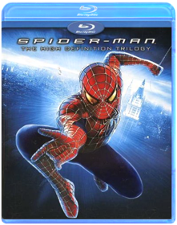
The Spongebob Movie: Sponge Out of Water
B00TA8CRB8SpongeBob SquarePants, the world's favorite sea dwelling invertebrate, comes ashore to our world for his most super-heroic adventure yet.
Stand By Me
B00164GDA0In a small woodsy Oregon town, a group of friends—sensitive Gordie (Wil Wheaton), tough guy Chris (River Phoenix), flamboyant Teddy (Corey Feldman), and scaredy-cat Vern (Jerry O'Connell)—are in search of a missing teenager's body. Wanting to be heroes in each other's and their hometown's eyes, they set out on an unforgettable two-day trek that turns into an odyssey of self-discovery. They sneak smokes, tell tall tales, cuss 'cause it's cool and band together when the going gets tough. When they encounter the town's knife-wielding hoods who are also after the body, the boys discover a strength they never knew they had. Stand By Me is a rare and special film about friendship and the indelible experiences of growing up. Filled with humor and suspense, Stand By Me is based on the novella 'The Body' by Stephen King.
Star Trek
J.J. AbramsB001AVCFK6The greatest adventure of all time begins with Star Trek, the incredible story of a young crew’s maiden voyage onboard the most advanced starship ever created: the U.S.S. Enterprise. On a journey filled with action, comedy and cosmic peril, the new recruits must find a way to stop an evil being whose mission of vengeance threatens all of mankind. The fate of the galaxy rests in the hands of bitter rivals. One, James Kirk (Chris Pine), is a delinquent, thrill-seeking Iowa farm boy. The other, Spock (Zachary Quinto), was raised in a logic-based society that rejects all emotion. As fiery instinct clashes with calm reason, their unlikely but powerful partnership is the only thing capable of leading their crew through unimaginable danger, boldly going where no one has gone before.Star Trek: Into Darkness
J.J. AbramsB00CTSDDVOWhen the crew of the Enterprise is called back home, they find an unstoppable force of terror from within their own organization has detonated the fleet and everything it stands for, leaving our world in a state of crisis. With a personal score to settle, Captain Kirk leads a manhunt to a war-zone world to capture a one man weapon of mass destruction. As our heroes are propelled into an epic chess game of life and death, love will be challenged, friendships will be torn apart, and sacrifices must be made for the only family Kirk has left: his crew
Star Wars: The Clone Wars
B001GQSY64Studio: Warner Home Video Release Date: 11/11/2008 Rating: Pg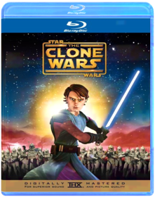
Star Wars: The Clone Wars: The Complete Season One
Atsushi Takeuchi, Brian O'Connell, Dave Bullock, Dave Filoni, George SamilskiB001PO53IOThe "Clone Wars" goes back to the original Star Wars film when Obi-Wan Kenobi tells Luke Skywalker that he was once a Jedi knight the same as your father and that they fought together in the Clone Wars. Since that moment fans have been obsessed with what the clone wars were. This new TV series takes place immediately after the events of Star Wars-Episode II: Attack of the Clones. The series follows Obi-Wan Kenobi and his apprentice Anakin Skywalker and introduces us to some new characters such as Ahsoka Tano a girl Jedi knight as well as characters we already know.
Star Wars: The Clone Wars: The Complete Season Two
Brian O'Connell, Dave Bullock, Dave Filoni, George Samilski, Giancarlo VolpeB003TLMPHIThe "Clone Wars" goes back to the original Star Wars film when Obi-Wan Kenobi tells Luke Skywalker that he was once a Jedi knight the same as your father and that they fought together in the Clone Wars. Since that moment fans have been obsessed with what the clone wars were. This new TV series takes place immediately after the events of Star Wars-Episode II: Attack of the Clones. The series follows Obi-Wan Kenobi and his apprentice Anakin Skywalker and introduces us to some new characters such as Ahsoka Tano, a girl Jedi knight as well as characters we already know.
Star Wars: The Complete Saga
George LucasB003ZSJ212Star Wars: The Complete Blu-ray Saga will feature all six live-action Star Wars feature films utilizing the highest possible picture and audio presentation.Star Wars Episode I: The Phantom Menace
(32 Years Before Episode IV) Stranded on the desert planet Tatooine after rescuing young Queen Amidala from the impending invasion of Naboo, Jedi apprentice Obi-Wan Kenobi and his Jedi Master discover nine-year-old Anakin Skywalker, a young slave unusually strong in the Force. Anakin wins a thrilling Podrace and with it his freedom as he leaves his home to be trained as a Jedi. The heroes return to Naboo where Anakin and the Queen face massive invasion forces while the two Jedi contend with a deadly foe named Darth Maul. Only then do they realize the invasion is merely the first step in a sinister scheme by the re-emergent forces of darkness known as the Sith.
Star Wars Episode II: Attack of the Clones
(22 Years Before Episode IV) Ten years after the events of the Battle of Naboo, not only has the galaxy undergone significant change, but so have Obi-Wan Kenobi, Padmé Amidala, and Anakin Skywalker as they are thrown together again for the first time since the Trade Federation invasion of Naboo. Anakin has grown into the accomplished Jedi apprentice of Obi-Wan, who himself has transitioned from student to teacher. The two Jedi are assigned to protect Padmé whose life is threatened by a faction of political separatists. As relationships form and powerful forces collide, these heroes face choices that will impact not only their own fates, but the destiny of the Republic.
Star Wars Episode III: Revenge of the Sith
(19 Years before Episode IV) Three years after the onset of the Clone Wars, the noble Jedi Knights have been leading a massive clone army into a galaxy-wide battle against the Separatists. When the sinister Sith unveil a thousand-year-old plot to rule the galaxy, the Republic crumbles and from its ashes rises the evil Galactic Empire. Jedi hero Anakin Skywalker is seduced by the dark side of the Force to become the Emperor's new apprentice—Darth Vader. The Jedi are decimated, as Obi-Wan Kenobi and Jedi Master Yoda are forced into hiding. The only hope for the galaxy are Anakin's own offspring.
Star Wars Episode IV: A New Hope
Nineteen years after the formation of the Empire, Luke Skywalker is thrust into the struggle of the Rebel Alliance when he meets Obi-Wan Kenobi, who has lived for years in seclusion on the desert planet of Tatooine. Obi-Wan begins Luke's Jedi training as Luke joins him on a daring mission to rescue the beautiful Rebel leader Princess Leia from the clutches of the evil Empire.
Star Wars Episode V: The Empire Strikes Back
Luke Skywalker and his friends have set up a new base on the ice planet of Hoth, but it is not long before their secret location is discovered by the evil Empire. After narrowly escaping, Luke splits off from his friends to seek out a Jedi Master called Yoda. Meanwhile, Han Solo, Chewbacca, Princess Leia, and C-3PO seek sanctuary at a city in the Clouds run by Lando Calrissian, an old friend of Han’s. But little do they realize that Darth Vader already awaits them.
Star Wars Episode VI: Return of the Jedi
(4 years after Episode IV) In the epic conclusion of the saga, the Empire prepares to crush the Rebellion with a more powerful Death Star while the Rebel fleet mounts a massive attack on the space station. Luke Skywalker confronts Darth Vader in a final climactic duel before the evil Emperor.

Starship Troopers
Paul VerhoevenB000UAFDP2From the bridge of the Fleet Battlestation Ticonderoga, with its sweeping galactic views, to the desolate terrain of planet Klendathu, teeming with shrieking, fire-spitting, brain-sucking special effects creatures, acclaimed director Paul Verhoeven crafts a dazzling epic based on Robert A. Heinlein's classic sci-fi adventure. Casper Van Dien, Dina Meyer, Denise Richards, Jake Busey, Neil Patrick Harris, Patrick Muldoon, and Michael Ironside star as the courageous soldiers who travel to the distant and desolate Klendathu system for the ultimate showdown between the species.
Super 8
B00B4VSUZGLegendary filmmakers Steven Speilberg and JJ Abrams join forces in this extraordinary tale of friendship mystery and adventure. Super 8 tells the story of six friends who accidentally film a train wreck only to discover that something unimaginable escaped during the crash. Now the only thing more mysterious than what it is - is what it wants. Experience the film that critics rave is 'filled with unstoppable imagination and visual effects to spare. It will put a spell on you.' - Peter Travers Rolling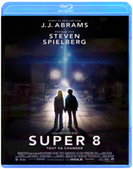
Superbad
B000WZEZHCNEWLYWEDS NICK (ICE CUBE) AND SUZANNE (LONG) DECIDE TO MOVE TOTHE SUBURBS TO PROVIDE A BETTER LIFE FOR THEIR TWO KIDS. BUTTHEIR IDEA OF A DREAM HOME IS DISTURBED BY A CONTRACTORWITH A BIZARRE APPROACH TO BUSINESS.
Superman Returns
B000JVT09CWarner Brothers Superman Returns (Blu-ray)The Man of Steel flies back to the silver screen in this thrilling adventure directed by Bryan Singer ("X-Men"). Following a five-year absence from Earth, Superman (Brandon Routh) resumes his old life as Clark Kent and discovers that Lois Lane (Kate Bosworth) is living with her longtime boyfriend and has a child who may possess some extraordinary powers of his own. But when old foe Lex Luthor (Kevin Spacey) sets in motion a deadly real estate scheme, Supes faces themost dangerous challenge of his life. Co-stars James Marsden, Parker Posey, Frank Langella, and—inarchival footage—Marlon Brando.
Taken 2
Olivier MegatonB0067EKYDGLiam Neeson returns as Bryan Mills, the ex-CIA operative who stopped at nothing to rescue his daughter from sadistic kidnappers. When the father of one of the kidnappers swears revenge, it is Bryan and his wife who find themselves "taken" hostage in Istanbul. To survive, Bryan must enlist the help of an unlikely ally and use his brutally efficient skills to take out his heavily-armed foes one by one.
Team America: World Police
B010QCIAVW
Ted & Ted 2: Thunder Buddies Collection
Seth MacFarlaneB010O2EL3ATED Family Guy creator She MacFarlane delivers his signature boundary-pushing humor in the outrageous comedy-blockbuster critics are calling "hysterically funny!" (Peter Travers, Rolling Stone). John Bennett (Mark Wahlberg) is a grown man whose cherished teddy bear came to life as the result of a childhood wish…and hasn't left his side since. Can John's relationship with longtime girlfriend Lori (Mila Kunis), move forward with his lovably profane buddy in the picture? TED 2 Everyone's favorite foulmouthed teddy bear is back for a second round of hilarious antics and outrageous adventures. When Ted (voiced by Family Guy creator Seth MacFarlane) is declare property by the Commonwealth of Massachusetts, Ted and his best friend John (Mark Wahlberg, Transformers: Age of Extinction, The Other Guys) must go to court to fight for Ted's personhood. With the help of their smart, beautiful, (and pot-loving) lawyer (Amanda Seyfried, Mamma Mia!, Les Misérables), the thunder buddies for life battle to legalize Ted in this "wickedly funny" (Los Angeles Times) sequel that will keep fans laughing right up to the very end.
Teen Wolf
Rod DanielB004NDJXOOFeatures include:•MPAA Rating: PG
•Format: Blu-Ray
•Runtime: 91 minutes

Teenage Mutant Ninja Turtles Film Collection
B001RIZE3MStudio: Warner Home Video Release Date: 08/04/2009 Rating: Pg
Teenage Mutant Ninja Turtles
Jonathan LiebesmanB00MI1X58SDarkness has settled over New York City as Shredder has an iron grip on everything from the police to the politicians. The future is grim until four unlikely brothers rise from the sewers and discover their destiny as Teenage Mutant Ninja Turtles.
Teenage Mutant Ninja Turtles: Out Of The Shadows
Dave GreeenB01GK5HBNWMichelangelo, Donatello, Leonardo, and Raphael are back to battle bigger, badder villains, alongside April O’Neil (Megan Fox), Vern Fenwick (Will Arnett), and a newcomer: the hockey-masked vigilante Casey Jones (Stephen Amell). After supervillain Shredder escapes custody, he joins forces with mad scientist Baxter Stockman (Tyler Perry) and two dimwitted henchmen, Bebop (Gary Anthony Williams) and Rocksteady (WWE Superstar Stephen “Sheamus” Farrelly), to unleash a diabolical plan to take over the world. As the Turtles prepare to take on Shredder and his new crew, they find themselves facing an even greater evil with similar intentions: the notorious Krang.
The Terminator
B00AJER3SEIn this newly remastered film, Arnold Schwarzenegger stars as the most fierce and relentless killing machine ever to threaten the survival of mankind! An indestructible cyborg - a Terminator (Schwarzenegger) - is sent back in time to kill Sarah Connor (Linda Hamilton), the woman whose unborn son will become humanity's only hope in a future war against machines. This legendary sci-fi thriller from pioneering writer/director James Cameron, written with Gale Anne Hurd, fires an arsenal of action and heart-stopping suspense that never lets up!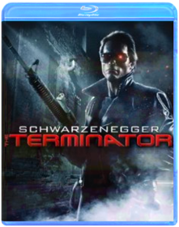
Terminator 2: Judgment Day
James CameronB001RIY4WEReturning to the past, the terminator this time to protect the young John Connor from the lethal T-1000 series terminator, and John's mother is determ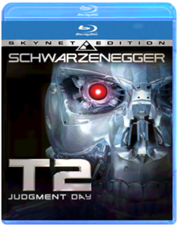
Terminator: The Sarah Connor Chronicles: The Complete First Season
B00168HARGThe mother of all destiny. Her son, the future leader of mankind. Their protector, a terminator from the future. Together they must take back the future as Sarah Connor (300's Lena Headey) prepares her son to fight the war against machines determined to annihilate the human race. The clock is ticking. Can they stop Judgment Day? The man-vs.-machine tale that's thrilled millions gets a reboot in this series set after the events of Terminator 2: Judgment Day. Now the battlefield has shifted to the present. Will John Connor (Heroes's Thomas Dekker) seize his destiny? Will a cell phone salesman's chess program evolve into Skynet? Can the sweet but deadly cyborg (Summer Glau of Firefly) be trusted? Answers – and the fight for the future – are here and now.
Terminator: The Sarah Connor Chronicles: The Complete Second Season
Bill Eagles, Bryan Spicer, Charles Beeson, David Nutter, Félix Enríquez AlcaláB001AQR3J4The time: today. The stakes: all our tomorrows. A nascent AI, assisted by droids, continues to edge toward world domination and the ruin of humankind. It accepts no limits. It fears no one. Except John Connor. The machines know John, now 16, is the future head of the resistance. They know he is growing in abilities. They must find and terminate him. But Sarah Connor is there, protecting and instructing her son as he becomes the man he’s destined to be. The hunt is on in a season of powerful revelations, breathless pursuits and bravura effects. A mysterious 3-dot symbol (do UFOs provide a clue?), a girlfriend for John (is Cameron jealous?), ZeiraCorp (can it master the renegade software called Turk?) – Season 2’s 5-disc action arsenal is locked, loaded, ready to amaze.Terminator 3: Rise of the Machines
B0013ND36GA decade has passed since John Connor (NICK STAHL) helped prevent Judgment Day and save mankind from mass destruction. Now 25, Connor lives "off the grid" - no home, no credit cards, no cell phone and no job. No record of his existence. No way he can be traced by Skynet - the highly developed network of machines that once tried to kill him and wage war on humanity. Until, out of the shadows of the future steps the T-X (KRISTANNA LOKEN), Skynet's most sophisticated cyborg killing machine yet. Sent back through time to complete the job left unfinished by her predecessor, the T-1000, this machine is as relentless as her human guise is beautiful. Now Connor's only hope for survival is the Terminator (ARNOLD SCHWARZENEGGER), his mysterious former assassin. Together, they must triumph over the technologically superior T-X and forestall the looming threat of Judgment Day - or face the apocalypse and the fall of civilization as we know it.
Terminator Salvation
McGB001FB55I0In the aftermath of Judgment Day and the machine takeover, resistance leader John Connor (Christian Bale) must counter Skynet’s plan to terminate mankind. Rallying his underground street fighters for a last, desperate battle, he realizes that to save the future he must rescue his own father Kyle Reese (Anton Yelchin). But the most shocking discovery comes with the arrival of Marcus Wright (Sam Worthington), a mysterious loner from the past who challenges Connor with an impossible choice and leads them both on a brutal journey into the heart of the enemy.
Terminator Genisys
Terminator GenisysB01013C5IUTERMINATOR GENISYS (3-DISC COMBO/3D-BD/2D-BD/DVD/DIGITAL HD)(3-D)
Texas Chainsaw
John LuessenhopB00BM4Q4N0In 1974, enraged townspeople hunt down and kill every member of the Sawyer family for committing a series of grisly murders. Decades later and hundreds of miles away, a young woman learns that she has inherited a Texas estate from a grandmother she never knew she had. After embarking on a road trip with friends to uncover her roots, she finds she is the sole owner of a lavish, isolated Victorian mansion. But her newfound wealth comes at a price as she stumbles upon a horror that awaits her in the mansion's dank cellars
The Jungle Book
Jon FavreauB01CTNDO58In an epic adventure directed by Jon Favreau (IRON MAN), Mowgli, a man-cub raised in the jungle by a family of wolves, embarks on a captivating journey of self-discovery when he's forced to abandon the only home he's ever known. Featuring an all-star voice cast including Bill Murray, Ben Kingsley and Scarlett Johansson, THE JUNGLE BOOK is "stunning" (Todd McCarthy, The Hollywood Reporter).
This Is The End
Seth Rogen, Evan GoldbergB00BEJL69UWhile attending a party at James Franco's house, Seth Rogen, Jay Baruchel and many other celebrities are faced with the apocalypse.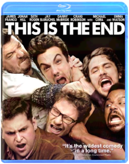
Shaun of the Dead / Hot Fuzz
Edgar WrightB00C7MW598Hot Fuzz: Shaun of the Deads Simon Pegg and Nick Frost star in this $22 million-grossing spoof of cop movies. Shaun of the Dead: Simon Pegg, Nick Frost, Kate Ashfield. High levels of funny and scary make this one a side-splitting, spine-tingling experience when Shaun is aided by his best friend Ed to save his family and his girlfriend Liz from the flesh-eating zombies who have suddenly begun to walk London's streets in search of their next meal!The World's End
Edgar WrightB00BPEJX1220 years after attempting an epic pub crawl, five childhood friends reunite when one of them becomes hell bent on trying the drinking marathon again. They are convinced to stage an encore by mate Gary King, a 40-year old man trapped at the cigarette end of his teens, who drags his reluctant pals to their home town and once again attempts to reach the fabled pub, The World's End. As they attempt to reconcile the past and present, they realize the real struggle is for the future, not just theirs but humankind's. Reaching The World's End is the least of their worries.
Top Gun
Top GunB00A85EMVKTop Gun takes a look at the danger and excitement that awaits every pilot at the Navy's prestigious fighter weapons school. Tom Cruise is superb as Pete "Maverick" Mitchell, a daring young flyer who's out to become the best of the best. And Kelly McGillis sizzles as the civilian instructor who teaches Maverick a few things you can't learn in a classroom.
Total Recall
Paul VerhoevenB000HIVOIMGet ready for the ride of your life! This Special Edition DVD allows you to experience TOTAL RECALL the way it was meant to be seen and heard. Arnold Schwarzenegger is perfectly cast as Quaid, a 2084 construction worker haunted by dreams of Mars in this crowd-pleasing science fiction spectacle. Against the wishes of his sexy blonde wife (Sharon Stone), Quaid goes to Rekall, a company that implants artificial memories, so he can "remember" visiting the red planet that is now being settled by human inhabitants. However, Quaid is actually an amnesiac secret agent from Mars - or is he?Total Recall
Len WisemanB0092QITO2Welcome to Rekall, the company that can turn your dreams into real memories. For a factory worker named Douglas Quaid (Colin Farrell), even though he's got a beautiful wife (Kate Beckinsale) who he loves, the mind-trip sounds like the perfect vacation from his frustrating life - real memories of life as a super-spy might be just what he needs. But when the procedure goes horribly wrong, Quaid becomes a hunted man. Finding himself on the run from the police - controlled by Chancellor Cohaagen (Bryan Cranston), the leader of the free world - Quaid teams up with a rebel fighter (Jessica Biel) to find the head of the underground resistance (Bill Nighy) and stop Cohaagen. The line between fantasy and reality gets blurred and the fate of his world hangs in the balance as Quaid discovers his true identity, his true love, and his true fate.Toy Story Trilogy 3D
B005HS4CUYExperience Disney Pixar's Toy Story, Toy Story 2 and Toy Story 3 in an all-new way! Join Woody, Buzz, and all your favorite toys in a whole new dimension as the action and characters jump off the screen and into your living room on Blu-ray 3D with pristine picture and theater-quality sound.
Toy Story
B0030IIYWAIn this 3D computer animated feature, a pull-string cowboy doll is the leader of the toys until the latest, greatest action figure enters the picture. When the toy rivals are separated from thei rowner, they ultimately learn to put aside their differences and work as a team to get back home to the boy they love.
Toy Story 2
B0030IIZ56Andy heads off to cowboy camp leaving his toys to their own devices. Things shift into high gear when an obsessive toy collector named Al McWhiggin (owner of Al's Toy Barn) kidnaps Woody. At Al's apartment, Woody discovers that he is a highly valued collectible from a 1950s TV show called Woody's Roundup, and he meets the other prized toys from that show, Jessie the Cowgirl, Bullseye the Horse, and Stinky Pete the Prospector. Back at the scene of the crime, Buzz Lightyear and the other toys from Andy's room, Mr. Potato Head, Slinky Dog, Rex and Hamm spring into action to rescue their pal from winding up as a museum piece. The toys get into one predicament after another in their daring race to get Woody before Andy returns.
Toy Story 3
Lee UnkrichB003XKPPOUThe creative minds behind Disney Pixar's groundbreaking animated blockbusters invites you back inside the Toys' delightful world for a heartwarming and hilarious Hi-Definition movie experience you'll never forget. All the original voice talent returns (including Tom Hanks and Tim Allen) plus new talent including Michael Keaton as Ken and Ned Beatty as Lots-O'-Huggin' Bear. It's the biggest, best, most exciting Toy Story of them all, raves Access Hollywood.As Andy gets ready to leave for college, Woody, Buzz, Jessie and the rest of the gang wonder if this is the end of the line. But, when a mix up lands them in the Sunnyside Day Care Center where they meet 14 new toys, they soon discover that a wild new adventure is just beginning! Take an amazing journey with some of the most beloved characters in movie history and discover what being a friend is truly all about.
It's everything a movie should be: hilarious, touching, exciting and clever, says USA Today. Buzzing with hours of exclusive bonus features, including an interactive trivia game and the Pixar short film Day and Night, Toy Story 3 goes to infinity and beyond on Blu-ray Hi-Def!
Meet the Characters Woody
Woody is a cowboy sheriff with a pull-string that, when pulled proclaims Woody's signature catchphrases from the 1950s TV show "Woody's Roundup." He's always been Andy's favorite toy. Even though his owner is now grown, the loyal sheriff Woody maintains a steadfast belief that Andy still cares about his toys. As the toys venture into their unknown future, Woody remains the voice of reason. As their dependable leader, he ensures that no toy gets left behind. Buzz Lightyear
Buzz Lightyear is a heroic space ranger action figure, complete with laser beam, karate-chop action and pop-out wings. Buzz is a boy's dream toy who becomes a quick favorite of young Andy, and the closest of buddies with Woody. While Buzz's sole mission used to be defeating the evil Emperor Zurg, what he now cares about most is keeping his toy family together. Buzz's new mission is sidetracked along the way, however, when his journey brings out surprising aspects of his personality even he didn't know existed. Jessie
Jessie is an exuberant, rough-and-tumble cowgirl doll who's always up for a daring adventure to help critters in need. With Andy's imminent departure hanging over the toys, Jessie is afraid of being abandoned by her owner once again. She takes charge, insisting that the toys take control of their own destinies. But is it a decision they'll later regret! Rex
Rex may look like the most fearsome dinosaur in the toy box, but this tyrannosaurus is one of the most lovable toys of the bunch. Despite his endless worrying and insecurities about his small roar, Rex always comes through for his pals. Hamm
A pink piggybank with a penchant for one-liners. He's still a know-it-all, or at least that's what he'd like everyone to believe. Mr. Potato Head
Mr. Potato Head is a wisecracking, hot-headed spud, complete with angry eyes. He's the eternal pessimist with a tough plastic exterior, but his total devotion to his little "sweet potato," Mrs. Potato Head, reveals a softer side.. Mrs. Potato Head
Mrs. Potato Head is Mr. Potato Head's biggest fan. She adores her brave spud and is always willing to lend him a hand. Or an eye. While Mr. Potato Head's "sweet potato" lives up to her pet name, she also shares her husband's hair-trigger temper. Bullseye
Bullseye is Woody's trusty toy steed from the "Woody's Roundup" gang. Bullseye can ride like the wind and leap across giant canyons in a single bound, especially when Woody is in the saddle. Big Baby
Your little one with love this lifelike baby doll with his soft, cuddly fabric body and vinyl arms, legs, and face. With dazzling blue eyes that open and close, this realistic baby encourages nurturing play. Eighteen inches tall, he comes dressed in an adorable yellow onesie with matching bonnet, and has his own magical bottle of milk that disappears while he drinks! A perfect first doll for your special child. Machine washable on gentle cycle. Flame Retardant. Chatter Telephone
Ring-ring! The Fisher-Price Chatter Telephone is a classic pull toy that has been inspiring giggles for many generations, while building motor skills and balance. Preschoolers can't resist the friendly face with eyes that move up and down when they pull the toy along, and the bright colors and pleasing sounds keep them happy and engaged. Chatter Telephone is ideal for the little hands in your life. Mr. Pricklepants
Frolic your afternoons away on woodland adventures with Mr. Pricklepants! This charming lederhosen-wearing hedgehog is from the Waldfreunde collection of premium imported plush toys. He may look prickly, but the plump and fuzzy Mr. Pricklepants is made strictly for cuddling! Hand wash and air dry. Restore fluffiness with fingers. Made in Germany. Dolly
Dolly is a soft and sweet dress-up rag doll, and is the perfect gift for any young child! Her floppy body and sunny smile will make her an irresistible new member of your family. Dolly has purple hair, googly eyes and gently blushing cheeks. She comes with a pretty blue dress, but templates are included to create and sew your own outfits. Machine washable on gentle cycle. Stretch
Stretch is a fun-loving under-the-sea octopus friend that shines in glittery purple. Kids can count her eight rubbery legs and dozens of sticky suckers that are sure to stand up to rough-and-tumble play and extreme stretching. Toss her high on the wall and watch her climb her way down! Clean in mild soap solution to remove dust and lint. Twitch
Meet Twitch, the insectaloid warrior, where MAN + INSECT = AWESOME! This sturdy action figure stands over five inches tall, with more than 15 points of articulation, including ferocious chomping mandibles. Use his powerful wings and impenetrable exoskeleton to evade capture! Twitch is meticulously detailed and includes his signature magical battle staff and removable chest armor. For children ages 4 and up. Other insectaloid figures sold separately. Trixie
Trixie is a perfect playmate for prehistoric playtime! Visit the era when dinosaurs ruled the Earth! Made of rigid, durable plastic and in friendly shades of blue and purple. Trixie features an expressive mouth and movable legs. This gentle Triceratops will feed any child's imagination. Also available: Tyrannosaurus Rex, Stegosaurus and Velociraptor. Lots-o'-Huggin' Bear
Lots-o'-Huggin' Bear is a jumbo, extra-soft teddy bear with a pink and white plush body and a velvety purple nose. This lovable bear stands fuzzy heads and shoulders above other teddy bears because he smells like sweet strawberries! With a smile that will light up your child's face and a belly just asking to be hugged. Lots-o'-Huggin' Bear is sure to become a bedtime necessity. Stain-resistant. Spot clean plush surface with a damp cloth. Ken
Grab your binoculars and join Ken on a safari! A swinging bachelor who's always on the lookout for fun, Ken sports the perfect outfit for his eco-adventure: light blue shorts and a leopard-print shirt with short sleeves sure to keep him cool in the hot sun. And after his exciting expedition, Ken will be ready to hit the dance floor in style. His accessories include matching scarf, sensible loafers, and a fashion-forward gold belt. Dozens of additional Ken outfits sold separately. Meet the voices behind your favorite characters: (From left to right) Tom Hanks as Woody, Tim Allen as Buzz, and Joan Cusack as Jesse
(From left to right) Ned Beatty as Lots-O', Don Rickles as Mr. Potato Head, and Michael Keaton as Ken

Toy Story of Terror
B00KHA88PCDisney Pixar proudly presents a wacky new tale featuring all your favorite characters from the Toy Story films. Join Woody, Buzz, Jessie and their pals in a frighteningly fun animated adventure.What starts out as an exciting road trip for the Toy Story gang takes an unexpected turn for the worse following a detour to a roadside motel. After Mr. Potato Head suddenly disappears, his friends find themselves caught up in a hilarious mystery that must be solved before they suffer the same fate in this thrilling Toy Story OF TERROR!
Toy Story That Time Forgot
Steve PurcellB013F4U82MDisney and Pixar proudly present a hilarious new animated TOY STORY adventure. During one of Bonnie's post-Christmas playdates, the TOY STORY crew find themselves in uncharted territory when the coolest set of action figures ever turn out to be dangerously delusional. It's all up to Trixie the triceratops if the gang hopes to ever return to Bonnie's room. TOY STORY THAT TIME FORGOT is an unforgettable tale packed with family fun!
Trainspotting
Masahiro Hirakubo, Danny BoyleB0057ZAA0SChoose life. Choose a job. Choose a career. Choose a family. Choose…Trainspotting. Director Danny Boyle (127 Hours, Slumdog Millionaire) thrills in this “original, daring” (Salon.com) tale of a group of young drug addicts wheeling through blue collar Edinburgh that earned an Academy Award® for Best Adapted Screenplay. Starring Ewan McGregor (Moulin Rouge!) in an unforgettable breakthrough performance, Trainspotting electrified audiences and critics with its hilariously dark humor, stunning visuals and sharp honest take on both the exhilarating highs, and the terrifying lows, of addiction.Transformers
Michael BayB004T0XYMSFrom director Michael Bay and executive producer Steven Spielberg comes a thrilling battle between the heroic Autobots® and the evil Decepticons®. When their epic struggle comes to Earth, all that stands between the Decepticons® and ultimate power is a clue held by young Sam Witwicky (Shia LaBeouf). Unaware that he is mankind’s last chance for survival, Sam and Bumblebee, his robot disguised as a car, are in a heart-pounding race against an enemy unlike anything anyone has seen before. It’s the incredible, breath-taking film spectacular that USA Today says “will appeal to the kid in all of us.”Transformers: Revenge of the Fallen
Michael BayB001KZIRM2One of the most popular, thrill-packed, franchises of all time is back with even more action and more Autobots and Decepticons! In the highly anticipated Transformers: Revenge of the Fallen, Decepticon forces return to Earth on a mission to take Sam Witwicky (Shia LaBeouf) prisoner, after the young hero learns the truth about the ancient origins of the Transformers. Joining the mission to product humankind is Optimus Prime, who forms an alliance with international armies for a second epic battle.Transformers: Dark of the Moon
Michael BayB005G4TJI4A mysterious event from Earth's past threatens to ignite a war so big that the Transformers™ alone will not be able to save the planet. Sam Witwicky (Shia LaBeouf) and the Autobots™ must fight against the darkness to defend our world from the Decepticons™ all-consuming evil in the smash hit from director Michael Bay and executive producer Steven Spielberg.
Transformers: Age of Extinction
Michael BayB00MEXP49IFrom director Michael Bay and executive producer Steven Spielberg comes the best 'Transformers' ever! With humanity facing extinction from a terrifying new threat, it's up to Optimus Prime and the Autobots to save the world. But now that our government has turned against them, they'll need a new team of allies, including inventor Cade Yeager (Mark Wahlberg) and the fearsome Dinobots!
Tron
B00AQ5Y2JYTRON:ORIGINAL CLASSIC SPECIAL EDITIONNo description available.
Genre: Action/Adventure
Rating: PG
Release Date: 0000-00-00
Media Type: Blu-Ray

Tron: Legacy
B00AQ5W27ITRON:LEGACY 3DNo description available.
Genre: Action/Adventure
Rating: PG
Release Date: 0000-00-00
Media Type: Blu-Ray

Troy
Wolfgang PetersenB000TGGJKUBrad Pitt picks up a sword and brings a muscular, brooding presence to the role of Greek warrior Achilles in this spectacular retelling of The Iliad. Orlando Bloom and Diane Kruger play the legendary lovers who plunge the world into war, Eric Bana portrays the prince who dares to confront Achilles, and Peter O'Toole rules Troy as King Priam. Director Wolfgang Petersen recreates a long-ago world of bireme warships, clashing armies, the massive fortress city and the towering Trojan Horse.True Blood: Season 1
B001FB4W16TRUE BLOOD chronicles the backwoods Louisiana town of Bon Temps... where vampires have emerged from the coffin, and no longer need humans for their fix. Sookie Stackhouse (Anna Paquin, Academy Award®-winner for “The Piano”) works as a waitress at the rural bar Merlotte's. Though outwardly a typical young woman, she keeps a dangerous secret: she has the ability to hear the thoughts of others. Her situation is further complicated when the bar gets its first vampire patron - 173-year old Bill Compton (Steven Moyer, "Quills") - and the two outsiders are immediately drawn to each other. Delivering the best of what audiences have come to expect from Creator and Executive Producer Alan Ball (writer of Oscar®-winning Best Picture "American Beauty", creator of the Emmy® Award-winning HBO® series “Six Feet Under"), TRUE BLOOD is a dark and sexy tale that boldly delves into the heart - and the neck - of the Deep South.
True Blood: Season 2
Adam Davidson, Daniel Minahan, John Dahl, Michael Cuesta, Michael LehmannB00280LZAOWhen we last checked in with Sookie Stackhouse, the mystery surrounding a Bon Temps serial killer had finally been solved, to the town’sinfinite relief. Sookie is thrilled that her vampire soulmate, Bill Compton, has escaped with his life (or is it death?) after coming to her daylight defense. On other fronts, Sookie’s pal Tara Thornton sets downnew roots with an affluent benefactor, Maryann Forrester; Sam Merlotte resolves to get in shape-shift shape after a forest foray; roguish brother Jason finds new purpose with an anti-vampire sect; and detectiveAndy Bellefleur licks his wounds after being proven wrong about Jason’s guilt. But just as things are settling down, some deadly new twists threaten to ratchet up the saga of Sookie Stackhouse to bloody new heights!DVD Features:
Audio Commentary
Featurette
Other

True Grit
Joel Coen, Ethan CoenB003UESJMOTrue Grit is a powerful story of vengeance and valor set in an unforgiving and unpredictable frontier where justice is simple and mercy is rare. Mattie Ross (Hailee Steinfeld), is determined to avenge her father's blood by capturing Tom Chaney (Josh Brolin), the man who shot and killed him for two pieces of gold. Just fourteen, she enlists the help of Rooster Cogburn (Academy Award® Winner Jeff Bridges), a one-eyed, trigger-happy U.S. Marshall with an affinity for drinking and hardened Texas Ranger LaBoeuf (Academy Award® Winner Matt Damon) to track the fleeing Chaney. Despite their differences, their ruthless determination leads them on a perilous adventure that can only have one outcome: retribution.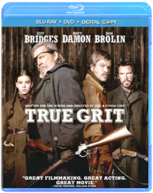
True Romance
VariousB001ECQ4HGRunaway lovers Clarence and Alabama (Christian Slater and Patricia Arquette) play a dangerous game when they come to possess a suitcase of mob contraband. They head for Los Angeles, where they'll sell the goods and begin a new life. But both sides of the
The Truman Show
Peter WeirB001GMH8TMHe's the star of the show—but he doesn't know. Jim Carrey wowed critics and audiences alike as unwitting Truman Burbank in this marvel of a movie from director Peter Weir (Witness, Dead Poets Society) about a man whose life is a nonstop TV show. Truman doesn't realize that his quaint hometown is a giant studio set run by a visionary producer/director/creator (Ed Harris), that folks living and working there are Hollywood actors, that even his incessantly bubbly wife is a contract player. Gradually, Truman gets wise. And what he does about his discovery will have you laughing, crying and cheering like few film stories ever have.
Up
Directed By Pete Docter, Co-Directed By Bob PetersonB00867GKIKImmerse yourself in a whole new dimension of family entertainment. Bring the 3D experience home with this hilariously uplifting adventure from the creators of Monsters, Inc. and Finding Nemo. Part rascal, part dreamer, retired balloon salesman Carl Fredricksen is ready for his last chance at high-flying excitement. Tying thousands of balloons to his house, Carl sets off to the lost world of his childhood dreams. But unbeknownst to Carl, Russell, an overeager 8-year-old wilderness explorer who has never ventured beyond his backyard, is in the wrong place at the wrong time - Carl's front porch! Experience every thrilling moment of their adventure as it comes to life before your eyes in spectacular Disney Blu-ray 3D - Magic in a new dimension that will send your spirits soaring Up, Up and away!
V For Vendetta
B000PC0U1WSet against the futuristic landscape of totalitarian Britain, V For Vendetta tells the story of a mild-mannered young woman named Evey (Natalie Portman) who is rescued from a life-and-death situation by a masked man (Hugo Weaving) known only as "V." Incomparably charismatic and ferociously skilled in the art of combat and deception, V ignites a revolution when he urges his fellow citizens to rise up against tyranny and oppression. As Evey uncovers the truth about V's mysterious background, she also discovers the truth about herself - and emerges as his unlikely ally in the culmination of his plan to bring freedom and justice back to a society fraught with cruelty and corruption.The Walking Dead: Season 1
Frank DarabontB005CA4SQKAfter waking from a coma in an abandoned hospital, police officer Rick Grimes finds the world he knew gone - ravaged by a zombie epidemic of apocalyptic proportions. Nearby, on the outskirts of Atlanta, a small encampment struggles to survive as 'the dead' stalk them at every turn. Can Rick and the others hold onto their humanity as they fight to live in this terrifying new world? And, amidst dire conditions and personal rivalries, will they ultimately survive one another? AMC's The Walking Dead is an epic, survival adventure series from the director of The Shawshank Redemption and the producer of The Terminator and Aliens.Walking With Dinosaurs
B00HDKJESOThe gigantic voice talents of Justin Long (ALVIN AND THE CHIPMUNKS franchise) and John Leguizamo (ICE AGE franchise) take you on a thrilling prehistoric journey the whole family will enjoy! In a time when dinosaurs rule the Earth, the smallest of the pack — a playful Pachyrhinosaurus named Patchi — embarks on the biggest adventure of his life. As he tries to find his place in a spectacular world filled with fun-loving friends and a few dangerous foes, Patchi will discover the courage he needs to become the leader of the herd and a hero for the ages.Wall-E
Andrew StantonB001EOQWF8The highly acclaimed director of Finding Nemo and the creative storytellers behind Cars and Ratatouille transport you to a galaxy not so far away for a new cosmic comedy adventure about a determined robot named Wall-E. After hundreds of lonely years of doing what he was built for, the curious and lovable Wall-E discovers a new purpose in life when he meets a sleek search robot named Eve. Join them and a hilarious cast of characters on a fantastic journey across the universe. Transport yourself to a fascinating new world with Disney-Pixar's latest adventure, now even more astonishing on DVD and loaded with bonus features, including the exclusive animated short film Burn-E. Wall-E is a film your family will want to enjoy over and over again.Watchmen
VariousB01GGXDR4U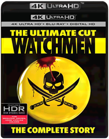
We're the Millers
Rawson Marshall ThurberB00BEIYN3MDavid Burke (Sudeikis) is a small-time pot dealer whose clientele includes chefs and soccer moms, but no kids-after all, he has his scruples. After his stash and his cash are stolen, leaving him in major debt to his supplier, Brad (Ed Helms), he must become a big-time drug smuggler by bringing Brad's latest shipment in from Mexico. One fake wife, two pretend kids and a huge, shiny RV later, the Millers are headed south of the border for a Fourth of July weekend that is sure to end with a bang.
What's Your Number?
B006DHASYMAnna Faris and Chris Evans star in the outrageously funny comedy that asks: can 19 wrongs make Mr. Right? When Ally Darling (Faris) reads an article that leads her to believe she's going to be alone forever, she begins a wild search to find the best "ex" of her life. But Ally's quest to reconnect with her former lovers goes hilariously awry, from a puppeteer who's more wooden than his puppet to a gynecologist with a "spotty" memory. Through it all, Ally might just find the man of her dreams in the last place she ever expected.
Where the Wild Things Are
Spike JonzeB001HN699K"Let the wild rumpus start!" Nine-year-old Max runs away from home and sails across the sea to become king of the land Where the Wild Things Are. King Max rules a wondrous realm of gigantic fuzzy monsters—but being king may not be as carefree as it looks! Filmmaker Spike Jonze directs a magical, visually astonishing film version of Maurice Sendak's celebrated children's classic, starring an amazing cast of screen veterans and featuring young Max Records in a fierce and sensitive performance as Max. Explore the joyous, complicated and wildly imaginative wild rumpus of the time and place we call childhood.
Who Framed Roger Rabbit
Robert ZemeckisB00AO686MYOn Blu-ray for the first time ever, this digitally remastered edition of Who Framed Roger Rabbit practically jumps off the screen with its brilliant picture, rich sound - and dangerous curves. It's 1947 Hollywood, and Eddie Valiant (Bob Hoskins), a down-on-his-luck detective, is hired to find proof that Marvin Acme, gag factory mogul and owner of Toontown, is playing hanky-panky with femme fatale Jessica Rabbit, wife of Maroon Cartoon superstar, Roger Rabbit. When Acme is found murdered, all fingers point to Roger, who begs the Toon-hating Valiant to find the real evildoer. Complete with hours of bonus features - including three digitally restored Roger Rabbit shorts, this multi Oscar winner (best film editing, best sound effects editing, best visual effects, special achievement in animation direction, 1988) is pure magic in hi-def Blu-ray.
The Wizard of Oz
B00FQ6RA56METALPAK EDITION
The Wolf of Wall Street
Martin ScorseseB00H9KKKAYRevered filmmaker Martin Scorsese directs the story of New York stockbroker Jordan Belfort (Leonardo DiCaprio). From the American dream to corporate greed, Belfort goes from penny stocks and righteousness to IPOs and a life of corruption in the late 80s. Excess success and affluence in his early twenties as founder of the brokerage firm Stratton Oakmont warranted Belfort the title – “The Wolf of Wall Street.”Sex. Money. Power. Drugs. Brace yourself for an outrageous true story from legendary filmmaker Martin Scorsese. Leonardo DiCaprio stars as a young stockbroker hungry for a life of non-stop thrills where corruption was king and more was never enough. His rise to power earned him the title The Wolf of Wall Street. Together Scorsese and DiCaprio deliver a story of American excess.

World War Z
B00DHRLK84A former UN investigator is thrust into the middle of trying to stop what could be the end of the world. Worldwide destruction sends him around the globe seeking clues about what they are fighting and what it will take to defeat it, as he tries to save the lives of billions of strangers, as well as his own beloved family.
Wreck-It Ralph
Rich MooreB00A7OJ0DCPrepare for adventure when 'the most original film in years' (Bryan Erdy, CBS-TV) that thrilled audiences of all ages drops on Blu-ray! From Walt Disney Animation Studios comes a hilarious, arcade-game-hopping journey in Disney's Wreck-It Ralph. For decades, Ralph has played the bad guy in his popular video game. In a bold move, he embarks on an action-packed adventure and sets out to prove to everyone that he is a true hero with a big heart. As he explores exciting new worlds, he teams up with some unlikely new friends including feisty misfit Vanellope von Schweetz. Then, when an evil enemy threatens their world, Ralph realizes he holds the fate of the entire arcade in his massive hands. Featuring an all-star voice cast and breakthrough bonus features that take you even deeper into the world of video games, Disney's Wreck-It Ralph has something for every player.
The X-Files: Fight the Future / I Want To Believe
B001G7PSZIGenre: Sci-Fi/FantasyRating: PG13
Release Date: 2-DEC-2008
Media Type: Blu-Ray

X-Men
Bryan SingerB001PPGAJEThe evolutionary next step in explosive action spectaculars is here! Loaded with hours of special features including deleted scenes, making of featurettes and more, this new 2-disc edition of the "smart, sleek" (Newsweek) and "striking" (Time Out London)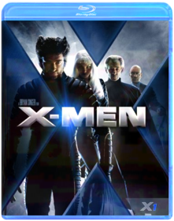
X2: X-Men United
B00AQ7DUU4X-MEN 2:UNITED (BD/TICKET)No description available for this title.
X-Men 3: The Last Stand
Brett RatnerB000KC86F4Experience the awesome power of The X-Men's epic, final battle. Join well-known mutant heroes and villains, and meet a cadre of all-new warriors — including Angel, Beast, Juggernaut and Colossus — in this thrilling, explosive adventure!After a controversial "cure" is discovered, mutants can choose to retain their superhuman abilities or give up their unique gifts and become "normal." When peaceful mutant leader Charles Xavier (Patrick Stewart) clashes with his militant counterpart, Magneto (Ian McKellen), the battle lines are drawn for the war to end all wars.
Bursting with nonstop action, spectacular special effects and exclusive extras, X-MEN THE LAST STAND is a force of nature that "will blow you away!"

X-Men Origins: Wolverine
Gavin HoodB001GCUO16Stars:Hugh Jackman, Ryan ReynoldsItem Type: BLU-RAY DVD Movie
Item Rating: PG13
Street Date: 09/15/09
Wide Screen: yes
Director Cut: no
Special Edition: no
Language: ENGLISH
Foreign Film: noSubtitles: no
Dubbed: no
Full Frame: no
Re-Release: no
Packaging: Sleeve

X-Men: First Class
Matthew VaughnB004LWZW4CX-Men: First Class is the thrilling, eye-opening chapter you’ve been waiting for...Witness the beginning of the X-Men Universe. Before Charles Xavier and Erik Lensherr took the names Professor X and Magneto, they were two young men discovering their superhuman powers for the first time, working together in a desperate attempt to stop the Hellfire Club and a global nuclear war.
The Wolverine
James MangoldB00E4W40C4Hugh Jackman returns as The Wolverine and faces his ultimate nemesis in an action packed life-or-death battle that takes him to modern day Japan. Vulnerable for the first time and pushed to his limits, Logan confronts not only lethal samurai steel but also his inner struggle against his own immortality; an epic fight that will leave him forever changed.
X-Men: Days of Future Past
Bryan SingerB00K7IPGX6
Deadpool
Tim MillerB01FECCKJCIn this irreverent spin on the superhero genre, mercenary Wade Wilson (Ryan Reynolds) agrees to participate in a top-secret experiment after learning that he has terminal cancer. When the procedure leaves him with advanced healing powers and a disfigured face, he reinvents himself as a wisecracking, spandex-clad antihero known as Deadpool, and seeks revenge on those responsible. Morena Baccarin, Ed Skrein, T.J. Miller, and Gina Carano co-star. Directed by Tim Miller.X-Men: Apocalypse
X-Men: ApocalypseB01G9AXWYU
Zombieland
Ruben FleischerB002WY65W4Nerdy college student Columbus (Jesse Eisenberg) has survived the plague that has turned mankind into flesh-devouring zombies because he’s scared of just about everything. Gun-toting, Twinkie-loving Tallahassee (Woody Harrelson) has no fears. Together, they are about to stare down their most horrifying challenge yet: each other’s company. Emma Stone and Abigail Breslin co-star in this double-hitting, head-smashing comedy.